17. Gestion de la préservation
17.1. Introduction
17.1.1. Documents de référence
Document |
Date de la version |
|---|---|
NF Z 44022 – MEDONA - Modélisation des données pour l’archivage |
18/01/2014 |
Standard d’échange de données pour l’archivage – SEDA – v. 2.1 |
06/2018 |
Vitam – Structuration des Submission Information Package (SIP) |
|
17.1.2. Résumé
Jusqu’à présent, pour la gestion, la conservation, la préservation et la consultation des archives numériques, les acteurs du secteur public étatique ont utilisé des techniques d’archivage classiques, adaptées aux volumes limités dont la prise en charge leur était proposée. Cette situation évolue désormais rapidement et les acteurs du secteur public étatique se sont organisés pour être en capacité de traiter les volumes croissants d’archives numériques qui doivent être archivés, grâce à un saut technologique.
17.1.2.1. Présentation de la problématique
La préservation numérique consiste en un ensemble de processus visant à maintenir un accès aux fichiers numériques sur le très long terme. Elle implique d’assurer un moyen de représenter ces fichiers dans le temps, de vérifier leur disponibilité et leur intégrité dans la solution logicielle Vitam. Les processus, permettant de garantir qu’un fichier numérique est en mesure de traverser le temps durant tout son cycle de vie tout en préservant son intégrité, sont les suivants :
l’identification de format : processus qui consiste à définir précisément le format d’un fichier numérique, qu’il s’agisse d’un conteneur[1] ou non ;
la validation de format : processus qui consiste à vérifier qu’un fichier respecte les spécifications publiées de son format, en termes de structure comme de syntaxe ;
la conversion de format : opération qui consiste à convertir un fichier numérique dans un format différent de celui dans lequel il est encodé. Elle doit préserver la fidélité du document (Source : NF Z 42-013) ;
l’extraction de métadonnées : opération qui consiste à extraire d’un fichier tout ou partie des informations ou métadonnées qu’il contient afin de les exploiter en dehors du fichier, dans une base de données, ou de les réintégrer dans celui-ci après conversion. Pour répondre à cette problématique et à cet objectif, la solution logicielle Vitam met à disposition les outils et services suivants[2] :
un traitement de masse sur les fichiers numériques pour :
identifier ou ré-identifier leur format suite à des mises à jour du référentiel des formats (identification de format) ;
analyser des fichiers non seulement pour vérifier leur conformité par rapport aux spécifications publiées de leur format (validation de format) mais aussi pour évaluer leur qualité par rapport à des critères émis pour des besoins, par exemple, de conservation (ex : vérifier la taille d’un fichier image en termes de pixels) ;
générer de nouveaux fichiers numériques, non seulement à des fins de conversion de format pour cause de format obsolète, mais aussi à d’autres fins (ex : génération de vignettes, d’objets de diffusion) ;
extraire tout ou partie des métadonnées contenues dans les fichiers numériques ou générer des métadonnées à partir du contenu de ceux-ci à des fins de conservation de ces informations ou d’amélioration de la description intellectuelle des archives ;
une administration de ce précédent service au moyen des outils suivants, qui permettent de paramétrer et d’effectuer ces traitements :
griffons ;
scénarios de préservation ;
référentiel des formats ;
des contrôles en entrée du système en vue d’identifier les formats des fichiers numériques ou de contraindre les fichiers pouvant entrer dans la solution logicielle Vitam au regard de paramètres et critères prédéfinis ;
des services de journalisation des actions, de sécurisation des journaux, d’audit et de génération de relevé de valeur probante, en vue de garantir l’intégrité, la conservation des fichiers numériques et leur accès au sein de la solution logicielle Vitam.
17.1.2.2. Présentation du document
Le document présente les fonctionnalités associées à la gestion et à la réalisation d’opérations de préservation numérique dans la solution logicielle Vitam. Il s’articule autour des axes suivants :
une présentation des différentes référentiels associés à la préservation numérique : formats, griffons, scénarios de préservation, de la manière dont ils doivent être formalisés en JSON ou en XML, ainsi que de la manière dont ils sont modélisés dans la solution logicielle Vitam ;
une présentation des mécanismes mis en œuvre dans la solution logicielle Vitam pour gérer et réaliser des opérations de préservation numérique ;
des recommandations aux utilisateurs de la solution logicielle Vitam sur la manière d’utiliser les fonctionnalités associées à ces outils de préservation numérique ;
des exemples de référentiels, de paramétrages, et de messages retournés par la solution logicielle Vitam à l’issue d’une opération en lien avec la préservation. Le présent document décrit les fonctionnalités qui sont offertes par la deuxième version de production de la solution logicielle Vitam au terme de la version 9.0 (automne 2025). Il a vocation à être amendé, complété et enrichi au fur et à mesure de la réalisation de la solution logicielle Vitam et des retours et commentaires formulés par les ministères porteurs et les partenaires du programme.
17.2. Administration de la préservation numérique
La solution logicielle Vitam s’appuie sur trois référentiels pour administrer, gérer et paramétrer les actions de préservation numérique :
le référentiel des formats,
le référentiel des griffons, ou outils de préservation,
le référentiel des scénarios de préservation.
17.2.1. Référentiel des formats
17.2.1.1. Définition
La préservation numérique implique d’effectuer des traitements sur des fichiers numériques en s’appuyant sur une identification fiable de ces derniers. Cette identification est assurée, référencée, harmonisée et normalisée au moyen d’un référentiel des formats, unique dans le système.
Par nature, un référentiel des formats identifie un ensemble de formats, en leur associant les informations nécessaires à leur identification, et fournit les moyens de contrôler les objets binaires conservés dans la solution logicielle Vitam.
La solution logicielle Vitam utilise comme référentiel des formats le registre PRONOM, développé en mars 2002 par The National Archives (UK) pour faciliter l’accès et la préservation sur le long terme aux archives numériques qu’elle conservait. Il s’agit de la principale ressource disponible en ligne sur les formats de fichiers connus ainsi que sur les produits logiciels capables de les créer et de les lire – y compris leur cycle de vie et leurs spécifications techniques. Mis en ligne à partir de février 2004, ce registre continue de s’enrichir et contient en septembre 2018 plus de 2000 entrées.
Dans le registre PRONOM, chaque format de fichier dispose d’un identifiant unique, le Pronom Unique IDentifier (ou PUID) et est décrit avec les informations suivantes :
un résumé des informations essentielles disponibles :
nom du format ;
version du format ;
identifiants (PUID, Type MIME) ;
catégorie ;
description ;
formats de fichiers associés ;
date de mise à disposition ;
dates de création et de mise à jour de la notice ;
la documentation disponible, notamment si le format a fait l’objet d’une normalisation ;
les moyens d’identification disponibles :
extensions ;
nombres magiques ou signatures[3] ;
les méthodes de compression utilisées, si elles existent ;
les méthodes d’encodage des caractères, si nécessaire ;
les droits de propriété intellectuelle associés ;
les fichiers de référence ;
les propriétés du format. La solution logicielle Vitam intègre une version simplifiée du registre PRONOM en tant que référentiel des formats, pour deux usages :
l’un destiné à la gestion des formats au sein de la solution logicielle Vitam. Ce référentiel n’enregistre pas l’ensemble des informations contenus dans le registre PRONOM ;
l’autre intégré dans l’outil d’identification de formats utilisé par la solution logicielle Vitam. Ce dernier utilise et interprète l’ensemble des informations contenues dans le registre PRONOM.
17.2.1.2. Formalisation
17.2.1.2.1. Dans le registre PRONOM
La version simplifiée du registre PRONOM que la solution logicielle Vitam utilise prend la forme d’un fichier XML, appelé « fichier de signatures » (ou « DROID_SignatureFile_VXX.xml »), publié par The National Archives (UK).
Pour un format donné, ce fichier :
déclare ses caractéristiques, en particulier les informations permettant de l’identifier, mais aussi ses relations avec d’autres formats ;
référence les signatures internes, éléments informationnels qui permettent d’identifier un format en fonction de son train de bits[4], et les associe à un ou plusieurs formats. Le registre PRONOM inclut également des signatures externes qui ne sont pas décrites dans le fichier de signatures.
Les relations entre formats et signatures peuvent être modélisées de la manière suivante[5] : 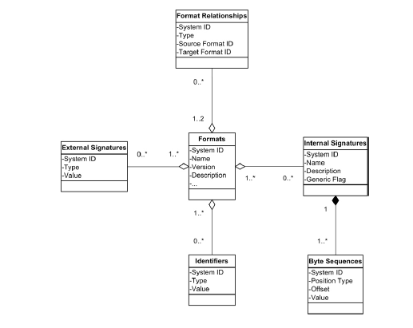
De ce registre, la solution logicielle Vitam ne retient pour son référentiel interne que les éléments suivants :
informations liées à la version et à la date de création du fichier de signatures, présents dans l’élément racine « FFSignatureFile » de ce dernier ; Élément racine du fichier de signatures en date du 17 septembre 2018, version 94 :
<FFSignatureFile xmlns:xsi="http://www.w3.org/2001/XMLSchema-instance"
xsi:schemaLocation="http://www.nationalarchives.gov.uk/pronom/SignatureFile DROID_SignatureFile.xsd"
xmlns="http://www.nationalarchives.gov.uk/pronom/SignatureFile" DateCreated="2018-09-17T12:54:53"
Version="94">
caractéristiques des formats, présentes dans l’élément « FileFormat ». Caractéristiques du format dont le PUID est x-fmt/17 :
<FileFormat ID="44" MIMEType="application/vnd.ms-excel"
Name="Microsoft Excel Template" PUID="x-fmt/17" Version="97-2003">
<Extension>xlt</Extension>
<HasPriorityOverFileFormatID>684</HasPriorityOverFileFormatID>
</FileFormat>
signatures internes, que la solution logicielle Vitam n’enregistre pas dans son référentiel interne, mais prises en compte par les outils d’identification tels que Siegfried ou Droid pour réaliser leurs opérations d’identification.
Les éléments XML du fichier de signatures sont modélisés comme suit :
Champ |
Description |
|---|---|
En-tête |
|
FFSignatureFile |
élément racine du fichier de signatures PRONOM (obligatoire) |
DateCreated |
date de création du fichier PRONOM (obligatoire) |
Version |
version du fichier PRONOM (obligatoire) |
Format |
|
FileFormat |
format de fichier (facultatif et répétable) |
ID |
identifiant XML, correspondant à un entier (obligatoire et unique) |
MIMEType |
type MIME (facultatif) |
Name |
nom signifiant du format, correspondant à une chaîne de caractères ne pouvant dépasser 100 caractères et ne pouvant être vide (obligatoire) |
PUID |
identifiant PRONOM du format, correspondant à une chaîne de caractères unique, ne pouvant être vide et dépasser 150 caractères (obligatoire) |
Version |
version du format, correspondant à une chaîne de caractères ne pouvant dépasser 50 caractères (facultatif) |
Extension |
extension(s) associée(s) à un format, correspondant à une chaîne de caractères ne pouvant être vide (facultatif et répétable) |
HasPriorityOverFileFormatID |
Identifiant XML, correspondant à un identifiant de format présent dans le registre PRONOM et associé au format décrit (facultatif et répétable). Indique que ce dernier a la priorité sur ce(s) format(s), c’est-à-dire qu’il sert de format de référence et le(s) rend obsolète(s) |
Point d’attention :
Au terme de la version 6, la solution logicielle Vitam supporte la version 109 du référentiel PRONOM ;
La solution logicielle Vitam n’enregistre pas les signatures internes comme externes dans son référentiel interne. Ces informations, présentes dans le fichier de signatures, sont en revanche intégrées par les outils d’identification comme Siegfried ou Droid, en raison de leur caractère indispensable pour réaliser leurs traitements.
17.2.1.2.2. Dans la solution logicielle Vitam
Les formats sont enregistrés dans la base de données MongoDB, dans la collection « FileFormat », sous la forme d’enregistrements au format JSON. Enregistrement du format dont le PUID est x-fmt/111 :
{
"_id": "aeaaaaaaaaho6plwab7ykalivm47lsiaabza",
"CreatedDate": "2018-09-17T12:54:53.000",
"VersionPronom": "94",
"UpdateDate": "2019-02-06T15:32:21.201",
"PUID": "x-fmt/111",
"Version": "",
"MimeType": "text/plain",
"Name": "Plain Text File",
"HasPriorityOverFileFormatID": [],
"Extension": [
"txt"
],
"Group": "",
"Alert": false,
"Comment": "",
"_v": 12
}
Ils sont modélisés comme suit[6] :
Champ |
Description |
|---|---|
_id |
identifiant unique dans l’ensemble du système, fourni par ce dernier (champ obligatoire) |
CreatedDate |
date de création de la version du fichier de signatures PRONOM utilisé pour initialiser ou mettre à jour la collection, présent dans « FFSignatureFile », élément racine du fichier de signatures PRONOM (champ obligatoire) |
VersionPronom |
numéro de version du fichier de signatures PRONOM utilisé pour initialiser ou mettre à jour la collection, présent dans « FFSignatureFile », élément racine du fichier de signatures (champ obligatoire) |
UpdateDate |
date de mise à jour de la version du fichier de signatures PRONOM au sein de la solution logicielle Vitam, fournie par cette dernière (champ obligatoire) |
PUID |
identifiant unique du format, fourni par le registre PRONOM (champ obligatoire). Il provient de l’attribut XML « PUID », présent dans le champ « FileFormat ». L’identifiant est composé de deux éléments séparés par un slash : |
Version |
version du format, fournie par le registre PRONOM (champ obligatoire, mais pouvant être vide). Il provient de l’attribut XML « Version », présent dans le champ « FileFormat » |
Name |
nom du format, fourni par le registre PRONOM (champ obligatoire). Il provient de l’attribut XML « Name », présent dans le champ « FileFormat » |
MimeType |
type MIME correspondant à un format de fichier, fourni par le registre PRONOM (champ obligatoire, mais pouvant être vide). Il provient de l’attribut XML « MimeType », présent dans le champ « FileFormat » |
HasPriorityOverFileFormatID |
liste de PUID appartenant à des formats sur le(s)quel(s) le format décrit a la priorité et sert de format de référence, fournie par le fichier de signatures PRONOM (champ obligatoire, mais pouvant être vide). Il provient de l’élément « HasPriorityOverFileFormatID », sous-élément de « FileFormat » et s’enregistre sous forme de tableau dans la base de données MongoDB |
Group |
nom d’une famille de formats (champ obligatoire, mais pouvant être vide), fourni par la solution logicielle Vitam |
Alert |
alerte sur l’obsolescence du format (champ obligatoire), correspondant à un booléen dont la valeur est, par défaut, égale à « false » |
Comment |
commentaires (champ obligatoire, mais pouvant être vide), fourni par la solution logicielle Vitam |
Extension |
extension(s) du format, fournie par le fichier de signatures PRONOM (champ obligatoire, mais pouvant être vide). Elle provient de l’élément « Extension », sous-élément de « FileFormat » et s’enregistre sous forme de tableau dans la base de données MongoDB |
_v |
version de l’enregistrement décrit, fournie par le système (champ obligatoire). |
17.2.1.3. Mécanismes mis en œuvre dans la solution logicielle Vitam
Le référentiel des formats intégré dans la solution logicielle Vitam est administrable par un utilisateur doté des droits adéquats (administrateur fonctionnel et technique).
Ce référentiel est multi-tenant. Il est administrable et journalisé depuis le tenant d’administration.
17.2.1.3.1. Import
La solution logicielle Vitam intègre un référentiel des formats, automatiquement importé lors de l’initialisation de la plate-forme. Sa version doit être :
identique à la version du registre PRONOM importée dans l’outil d’identification de formats utilisé par la plate-forme (Siegfried actuellement) ;
compatible avec l’outil d’identification de formats qui, selon la version installée, ne supporte pas toutes les versions du registre PRONOM.
Ce référentiel fonctionne en mode « esclave »[7] puisque le PUID fourni par le registre PRONOM constitue l’identifiant de chaque format. L’import du référentiel constitue une opération d’administration (« MASTERDATA »), tracée dans le journal des opérations du tenant d’administration de la solution logicielle Vitam[8].
17.2.1.3.2. Ré-import et mise à jour
Le fichier de signatures est régulièrement mis à jour par The National Archives (UK). Il est disponible à cette adresse : http://www.nationalarchives.gov.uk/aboutapps/pronom/droid-signature-files.html. La modification du référentiel des formats est possible au moyen des API et de l’IHM standard fournie avec la solution logicielle Vitam et s’effectue par un réimport du fichier de signatures, en mode « annule et remplace », depuis le tenant d’administration. De fait, la solution logicielle Vitam permet de :
ajouter un nouveau format ;
modifier les informations associées à un format ;
supprimer un format.
La modification du référentiel est également possible depuis l’APP Vitam UI « Formats », fournie avec la solution logicielle Vitam. Cette dernière permet, depuis le tenant d’instance (ou tenant d’administration) de :
ajouter ou supprimer un format, modifier ses informations par un import du fichier de signatures, en mode « annule et remplace » ;
ajouter un nouveau format, externe au référentiel publié par The National Archives ;
modifier les informations associées à un format ajouté, externe au référentiel publié par The National Archives ;
supprimer un format ajouté, externe au référentiel publié par The National Archives.
Ces actions renvoient une nouvelle version du référentiel dans la solution logicielle Vitam.
La nouvelle version du référentiel des formats doit être :
identique à la version du registre PRONOM importée dans l’outil d’identification de formats utilisé par la solution logicielle Vitam (Siegfried actuellement) ;
compatible avec l’outil d’identification de formats qui, selon la version installée, ne supporte pas toutes les versions du registre PRONOM.
C’est pourquoi, cette action relève d’un acte d’administration technico-fonctionnelle.
Elle provoque la création d’une nouvelle version du référentiel. Les différentes versions du référentiel font l’objet d’une sauvegarde sur les offres de stockage utilisées par la solution logicielle Vitam.
Sauf quelques cas d’erreur, elle fait l’objet d’une journalisation dans le journal des opérations du tenant d’administration (opération d’administration de type « MASTERDATA »).
Lors de ce ré-import ou de cette mise à jour, l’opération peut aboutir aux statuts suivants :
Statut |
Motifs |
|---|---|
Succès |
opération réalisée sans rencontrer de problèmes particuliers. |
Avertissement |
- mise à jour d’un référentiel dont la version est identique à la version du référentiel préalablement importé. |
Échec[9] |
sans journalisation : |
Point d’attention :
Seules les opérations en succès et en avertissement sont journalisées dans le journal des opérations ;
dans les cas d’un import ou ré-import en échec, l’action n’est pas journalisée[10].
Un rapport au format JSON est généré et précise les éléments suivants[11] :
le type d’opération, dont la valeur est « STP_REFERENTIAL_FORMAT_IMPORT » ;
la date et l’heure du début de la génération du rapport ;
l’identifiant de l’opération d’import à l’origine de ce rapport ;
le statut de l’opération, dont la valeur est soit « OK », soit « WARNING », soit « KO » ;
la référence à l’ancienne et à la nouvelle version du référentiel ;
la date de l’ancienne et de la nouvelle version du référentiel ;
la liste des formats dont les informations ont été modifiées, avec le différentiel entre les anciens et les nouveaux éléments ;
la liste des PUID des formats ajoutés au référentiel ;
la liste des PUID supprimés ;
le motif d’un avertissement.
17.2.1.3.3. Accès au référentiel
La solution logicielle Vitam permet d’effectuer des recherches dans le référentiel des formats. Il est possible d’obtenir :
une liste de résultats,
un résultat par facettes (nombre d’occurrences pour une métadonnée donnée).
Sont disponibles les facettes de type :
« terms » : pour obtenir des catégories basées sur les valeurs distinctes d’un champ spécifique et le nombre associé,
« filters » : pour obtenir des résultats d’agrégations par filtres sur les résultats,
« range » : pour obtenir des agrégations par plages de dates,
« sum » : pour obtenir des totaux sur des champs,
« count » : pour obtenir le nombre de valeurs présentes sur des champs,
« cardinality » : pour obtenir le nombre exact de valeurs présentes sur des champs (usage non recommandé).
Par ailleurs, la solution logicielle permet de consulter le détail d’un format en particulier.
L’accès au référentiel est possible depuis :
les API,
l’APP VitamUI « Formats ».
17.2.1.4. Conseils de mise en œuvre
À l’issue de cette phase de réalisation de fonctionnalités concernant le référentiel des formats, l’équipe projet Vitam est en mesure de fournir plusieurs recommandations de mise en œuvre.
17.2.1.4.1. À quoi sert le référentiel des formats ?
L’objectif du référentiel est de :
connaître l’ensemble des formats pouvant être gérés et conservés par la solution logicielle Vitam ;
permettre l’utilisation de l’outil d’identification de formats retenu à ce jour, Siegfried, et de pallier les défauts de cet outil, à savoir d’être en mesure, via des requêtes API, de :
lister les formats connus de son référentiel interne et que l’outil est donc en mesure de pouvoir identifier ;
dire si un PUID est connu du référentiel interne de l’outil d’identification.
Il a également pour vocation d’être utilisé par la solution logicielle Vitam pour :
effectuer des contrôles sur les formats des objets binaires associés aux archives prises en charge par le système. Dans le cas présent, le contrôle est fait au moyen de l’outil d’identification Siegfried et du référentiel des formats qu’il intègre et non pas à partir du référentiel interne de la solution logicielle Vitam ;
sélectionner les formats dans :
les contrats d’entrées ;
les scénarios de préservation.
17.2.1.4.2. Quand et comment créer un référentiel des formats ?
La création d’un référentiel des formats est un préalable au transfert d’objets binaires dans la solution logicielle Vitam. C’est pourquoi, lors de l’installation de la solution logicielle Vitam, un référentiel est initialisé par défaut. Sa version est compatible avec celle du référentiel importé dans l’outil d’identification de formats (Siegfried à ce jour). Un administrateur fonctionnel n’a pas besoin, a priori, d’importer un référentiel des formats. Il s’agit d’un acte d’exploitation technique.
Points d’attention :
Après initialisation de la plate-forme, il est recommandé à l’administrateur technique de vérifier que la version du référentiel correspond à celle qui a été chargée dans l’outil d’identification Siegfried[12].
Au terme de la version 6, la solution logicielle Vitam supporte la version 109 du registre PRONOM.
17.2.1.4.3. Quand et comment ré-importer et mettre à jour le référentiel des formats ?
The National Archives (UK) produit mensuellement une nouvelle version du fichier de signatures. Cette nouvelle version est alors publiée sur le site de l’institution, sauf dans deux cas :
aucune signature n’a été ajoutée dans le fichier de signatures ;
l’institution est en train de réaliser une mise à jour du fichier et préfère repousser sa publication.
Il est possible de mettre à jour régulièrement le référentiel dans la solution logicielle Vitam, en procédant à un réimport complet du référentiel, passant par l’import de la version du fichier de signatures nouvellement publiée. Cette opération s’effectue uniquement sur le tenant d’administration.
La mise à jour du référentiel s’avère nécessaire pour répondre aux besoins suivants :
une montée de version de l’outil d’identification de formats (actuellement Siegfried) rend nécessaire la mise à jour d’une version plus récente du fichier de signature ;
on souhaite ajouter un format jusque-là absent du référentiel des formats, en l’ajoutant préalablement au registre PRONOM.
Soit ce nouveau format est intégré dans une version plus récente du registre PRONOM ;
Soit il a été ajouté spécifiquement dans le fichier de signatures. De fait, il n’est pas obligatoire de monter de version du fichier de signatures dès qu’une nouvelle version paraît.
Points d’attention :
Après la mise à jour du référentiel, l’administrateur technique doit vérifier que la version du référentiel correspond bien à celle qui a été chargée dans l’outil d’identification de formats Siegfried ou de procéder à sa mise à jour[13].
La solution logicielle Vitam permet d’ajouter des formats non référencés dans le référentiel PRONOM.
Dans ce cas précis, il faudra s’assurer que ces formats soient inclus dans la version du référentiel chargée dans Siegfried.
Par ailleurs, dans le cas d’une nouvelle version du registre PRONOM à installer dans la solution logicielle Vitam, il ne faudra pas oublier de maintenir les ajouts ou modifications spécifiques dans le nouveau fichier. En d’autres termes, lors de l’import d’une nouvelle version du registre PRONOM dans le système, il faudra :
vérifier que cette nouvelle version n’intègre pas ces formats jusque-là non référencés ;
Si ce n’est pas le cas, rajouter ces formats spécifiques à PRONOM, afin qu’ils continuent à être gérés par le système.
Si un format est absent ou a été ajouté dans le registre, ou si des informations sont incomplètes, il est nécessaire de rentrer en contact avec The National Archives (UK) et de proposer des mises à jour, afin que celles-ci soient intégrées à une version ultérieure du fichier de signatures[14].
17.2.1.4.5. Comment utiliser le référentiel des formats ?
Intitulé |
Description |
Niveau de recommandation |
|---|---|---|
Import ou modification du référentiel des formats |
Il est obligatoire d’effectuer les opérations d’import et de mise à jour du référentiel des formats sur le tenant d’administration. |
Obligatoire |
Import initial du référentiel des formats |
Il est obligatoire d’importer le référentiel des formats lors de l’installation de la solution logicielle Vitam. |
Obligatoire |
Modification du fichier de signatures |
Il est possible d’ajouter des formats non référencés dans le registre PRONOM. Dans ce cas précis, il faudra s’assurer que ces formats soient inclus dans la version du référentiel chargée dans Siegfried. |
Possible |
Modification du fichier de signatures |
Il n’est pas recommandé de modifier ou corriger les contenus présents dans le fichier de signatures fourni par The National Archives (UK), que l’on souhaite importer dans la solution logicielle Vitam. |
Non recommandé |
Modification du fichier de signatures |
Si un format est absent du référentiel ou si des informations sont incomplètes, il est nécessaire de rentrer en contact avec The National Archives (UK) et de proposer des mises à jour, afin que celles-ci soient intégrées à une version ultérieure du fichier de signatures. |
Recommandé |
Mise à jour du référentiel des formats |
Il est possible de mettre à jour le référentiel des formats. |
Obligatoire |
Mise à jour du référentiel des formats |
Il est fortement recommandé de mettre à jour le référentiel des formats en le remplaçant par une version plus récente et non pas par une version plus ancienne. |
Recommandé |
17.2.2. Outils de préservation (griffons)
17.2.2.1. Définition
Les outils de préservation, appelés griffons au sein de la solution logicielle Vitam, sont des outils logiciels permettant d’effectuer des traitements sur les objets binaires en fonction de leur format.
Ces traitements peuvent être de différentes natures :
analyse (ex : validation de formats, analyse de la qualité d’une image) ;
génération d’un nouvel objet binaire (ex : conversion de format, création d’un autre usage, création d’un nouvel objet sans certaines métadonnées) dans un usage défini (BinaryMaster, Dissemination, Thumbnail, TextContent) ;
extraction de métadonnées (métadonnées techniques, métadonnées descriptives) ;
identification de format.
Un même griffon peut être utilisé pour effectuer plusieurs de ces traitements.
Plusieurs griffons peuvent être utilisés pour effectuer un traitement identique sur un même périmètre.
La solution logicielle Vitam implémente nativement plusieurs griffons[15] :
ImageMagick ;
JHOVE ;
Siegfried ;
LibreOffice ;
Tesseract ;
ODFValidator ;
VeraPDF ;
FFmpeg ;
OpenXMLValidator (outil non implémenté à ce jour) ;
BFFValidator (outil non implémenté à ce jour).
17.2.2.2. Formalisation
17.2.2.2.1. Dans un fichier JSON
Un référentiel des griffons liste l’ensemble des griffons pouvant être utilisés par la solution logicielle Vitam. Ce référentiel est importé sous la forme d’un fichier JSON, contenant systématiquement l’ensemble des griffons utilisés[16].
{
"Identifier": "GRI-000001",
"Name": "Griffon 1 : ImageMagick",
"ExecutableName": "imagemagick-griffin",
"ExecutableVersion": "V1.0.0"
}
Un griffon donné doit nécessairement être décrit avec les informations suivantes :
identifiant signifiant du griffon, généré par l’application à l’origine de sa création (Identifier) ;
nom du griffon (Name) ;
nom technique du griffon, utilisé pour lancer son exécution dans la solution logicielle Vitam (ExecutableName) ;
version du griffon (ExecutableVersion) ; Une description (Description) et une date de création (CreationDate), facultatives, peuvent venir compléter ces informations.
Point d’attention :
L’identifiant ne doit comprendre ni caractère accentué, ni virgule, ni apostrophe, ni parenthèse, ni espace, ni slash, ni élément de ponctuation, ou tout autre caractère spécial. Ne sont autorisés que l’underscore et le tiret comme séparateurs.
17.2.2.2.2. Dans la solution logicielle Vitam
Les griffons sont enregistrés dans la base de données MongoDB, dans la collection « Griffin », sous la forme d’enregistrements au format JSON. Chaque enregistrement est modélisé comme suit[17] :
Champ |
Description |
|---|---|
_id |
identifiant unique dans l’ensemble du système, fourni par ce dernier (obligatoire) |
Identifier |
identifiant signifiant du griffon, généré par l’application à l’origine de sa création (champ obligatoire). |
Name |
nom du griffon (champ obligatoire) |
Description |
description du griffon (champ facultatif) |
CreationDate |
date de création du griffon. Si l’information n’est pas présente dans le fichier JSON importé dans la solution logicielle Vitam, la date est fournie par la solution logicielle Vitam et correspond à la date de création de l’enregistrement (champ obligatoire) |
LastUpdate |
date correspondant à la dernière modification de l’enregistrement, fournie par la solution logicielle Vitam (champ obligatoire) |
ExecutableName |
nom technique du griffon, utilisé pour lancer son exécution dans la solution logicielle Vitam (champ obligatoire) |
ExecutableVersion |
version du griffon (champ obligatoire) |
_tenant |
tenant dans lequel l’enregistrement a été créé, fourni par le système (champ obligatoire) |
_v |
version du griffon, fournie par le système (champ obligatoire). |
17.2.2.3. Mécanismes mis en œuvre dans la solution logicielle Vitam
17.2.2.3.1. Implémentation des griffons
Un griffon est avant tout un outil logiciel existant sur le marché, customisé et paramétré pour être interfacé, utilisé avec la solution logicielle Vitam et identifié dans le référentiel des griffons. Au moyen d’une interface fichier simple, ce griffon prend un lot d’objets binaires de formats donnés à traiter ainsi que les arguments spécifiant comment les traiter et fournit un résultat au regard de ces éléments.
Un griffon peut effectuer plusieurs actions de préservation, en fonction de ses capacités et du paramétrage choisi. Les griffons peuvent être programmés facilement, sans connaissance approfondie de la solution logicielle Vitam, dans n’importe quel langage informatique.
À ce stade, les griffons développés par l’équipe Vitam sont tous dans un environnement Linux[18], à l’exception de l’un d’entre eux dont l’environnement Windows a été émulé sous Linux[19].
Griffon |
Langage de programmation |
Environnement |
Commentaires |
|---|---|---|---|
ImageMagick |
Linux |
||
JHOVE |
Librairie JAVA |
Linux |
|
VeraPDF |
Librairie JAVA |
Linux |
|
LibreOffice |
Linux |
||
Siegfried |
Linux |
||
Tesseract |
C++ |
Linux |
|
FFmpeg |
C |
Linux |
|
ODFValidator[20] |
Librairie JAVA patchée |
Linux |
Exécuté en Mono |
OpenXMLValidator[21] |
Librairie C sharp |
Linux |
Exécuté en Mono sous Linux |
BFFValidator |
Windows |
Exécuté en WineHQ sous Linux |
Ces griffons constituent des éléments de défiance en termes de sécurité informatique et des mécanismes doivent être mis en place pour les surveiller, par exemple en cas de délais de réponse trop important ou de génération d’objets binaires de taille supérieure à la taille attendue. Afin de les sécuriser, il est possible d’utiliser :
une isolation SELinux, avec des paramétrages liés à la sécurité – le service a été implémenté pour le griffon Siegfried ;
une VM qui monopoliserait un griffon et serait isolée sur un ESX séparé (service non encore implémenté).
L’installation et l’exploitation des griffons constituent un acte d’administration technique.
17.2.2.3.2. Gestion du référentiel des griffons
L’ensemble des griffons implémentés et supportés par la solution logicielle Vitam doivent être référencés dans le référentiel des griffons.
Ce référentiel est multi-tenant. Il est administrable et journalisé depuis le tenant d’administration.
17.2.2.3.2.1. Import
Dans la solution logicielle Vitam, il est possible d’importer un référentiel des griffons, fonctionnant en mode « esclave ».
Il s’agit d’une opération d’administration (« MASTERDATA »), tracée dans le journal des opérations de la solution logicielle Vitam sur le tenant d’administration[22].
17.2.2.3.2.2. Ré-import et mise à jour
La modification du référentiel des griffons s’effectue par un réimport du fichier au format JSON, en mode « annule et remplace », depuis le tenant d’administration. De fait, la solution logicielle Vitam permet de :
ajouter un nouveau griffon ;
modifier les informations associées à un griffon ;
supprimer un griffon. Cette action provoque la création d’une nouvelle version du référentiel. Les différentes versions du référentiel font l’objet d’une sauvegarde sur les offres de stockage utilisées par la solution logicielle Vitam.
Elle fait l’objet d’une journalisation dans le journal des opérations du tenant d’administration (opération d’administration de type « MASTERDATA »)[23].
Lors de ce ré-import ou de cette mise à jour, l’opération peut aboutir aux statuts suivants :
Statut |
Motifs |
|---|---|
Succès |
opération réalisée sans rencontrer de problèmes particuliers. |
Avertissement |
mise à jour d’un référentiel dont au moins un griffon est déclaré dans un scénario de préservation. |
Échec[24] |
sans journalisation : |
avec journalisation : |
17.2.2.3.3. Accès au référentiel
La solution logicielle Vitam permet d’effectuer des recherches dans le référentiel des griffons. Il est possible d’obtenir :
une liste de résultats,
un résultat par facettes (nombre d’occurrences pour une métadonnée donnée). Sont disponibles les facettes de type :
« terms » : pour obtenir des catégories basées sur les valeurs distinctes d’un champ spécifique et le nombre associé,
« filters » : pour obtenir des résultats d’agrégations par filtres sur les résultats,
« range » : pour obtenir des agrégations par plages de dates,
« sum » : pour obtenir des totaux sur des champs,
« count » : pour obtenir le nombre de valeurs présentes sur des champs,
« cardinality » : pour obtenir le nombre exact de valeurs présentes sur des champs (usage non recommandé).
Par ailleurs, la solution logicielle permet de consulter le détail d’un griffon en particulier.
L’accès au référentiel est possible uniquement depuis les API.
17.2.2.4. Conseils de mise en œuvre
À l’issue de cette phase de réalisation de fonctionnalités concernant le référentiel des griffons, l’équipe projet Vitam est en mesure de fournir quelques recommandations de mise en œuvre.
17.2.2.4.1. À quoi sert le référentiel des griffons ?
L’objectif du référentiel est de :
connaître l’ensemble des griffons installés, gérés et utilisables dans la solution logicielle Vitam ;
permettre l’utilisation des griffons ainsi référencés dans un à plusieurs scénario(s) de préservation.
17.2.2.4.2. Quand et comment créer un référentiel des griffons ?
17.2.2.4.2.1. Au moment de l’installation de la solution logicielle Vitam
La solution logicielle Vitam permet, au moyen d’un paramétrage technique, d’installer un certain nombre de griffons, au moment de l’installation de la plate-forme[25]. Elle met, en effet, à disposition les griffons suivants[26] :
ImageMagick ;
JHOVE ;
Siegfried ;
LibreOffice ;
Tesseract ;
ODFValidator ;
VeraPDF ;
FFmpeg ;
OpenXMLValidator (outil non implémenté à ce jour) ;
BFFValidator (outil non implémenté à ce jour).
Leur installation est facultative. En d’autres termes, si on ne souhaite pas utiliser de griffons, pour des raisons sécuritaires ou fonctionnelles, il suffit de ne pas les installer.
Il est également possible de :
ne pas installer la totalité des griffons mis à disposition ;
installer des griffons supplémentaires[27].
Cette opération relève d’un acte technique. Elle doit être suivie de la déclaration du griffon installé dans le référentiel des griffons, afin que le griffon puisse être utilisé lors d’une opération de préservation.
De fait, au moment de l’initialisation de la plate-forme, il est recommandé de suivre les étapes suivantes :
Qui ? |
Quoi ? |
Via l’IHM démo Vitam ? |
|---|---|---|
Administrateur fonctionnel |
- définit ses besoins en préservation ; |
Non |
Administrateur technique |
- vérifie si les griffons sont installés et disponibles par défaut dans la solution logicielle Vitam ; |
Non |
Administrateur technique et/ou fonctionnel |
- crée le référentiel des griffons en y intégrant les griffons installés ; |
Oui |
17.2.2.4.2.2. Après installation de la solution logicielle Vitam
Tout paramétrage d’une opération de préservation passant par l’administration des scénarios de préservation nécessite l’installation préalable d’au moins un griffon dans la solution logicielle Vitam et sa déclaration dans le référentiel des griffons.
De fait, avant toute opération de préservation, il est recommandé de suivre les étapes suivantes :
Qui ? |
Quoi ? |
Via l’IHM démo Vitam ? |
|---|---|---|
Administrateur technique |
- vérifie si le griffon que l’on souhaite solliciter est installé et disponible dans la solution logicielle Vitam ; |
Non |
Administrateur technique et/ou fonctionnel |
- vérifie si le griffon est référencé dans le référentiel des griffons ; |
Oui |
Administrateur technique et fonctionnel |
crée un scénario de préservation utilisant le griffon en question |
Oui |
Administrateur fonctionnel |
lance l’opération de préservation |
Oui |
17.2.2.4.3. Comment nommer un exécutable ?
Chaque griffon définit un nom technique faisant référence à l’outil exécutable par la solution logicielle Vitam (champ « ExecutableName »).
Afin que l’outil soit exécuté :
si on utilise un griffon implémenté nativement dans la solution logicielle Vitam, la règle est de nommer l’outil comme suit : nom de l’outil en minuscules et sans espace, suivi d’un tiret et du terme « griffin » ; imagemagick-griffin jhove-griffin
si on utilise un griffon implémenté a posteriori dans la solution logicielle Vitam, la règle est de nommer l’outil tel qu’il a été déclaré et installé dans la solution logicielle Vitam.
17.2.2.4.4. Quand et comment ré-importer et mettre à jour le référentiel des griffons ?
La mise à jour du référentiel des griffons s’avère nécessaire pour répondre aux besoins suivants :
mise à jour des informations relatives à un ou plusieurs griffons (ex : modification de la description) ;
ajout d’un nouveau griffon, pour faire suite à l’installation de ce dernier ;
suppression d’un griffon.
La solution logicielle Vitam permet de mettre à jour le référentiel, en procédant à un réimport complet de celui-ci. Cette opération s’effectue uniquement sur le tenant d’administration.
Points d’attention :
La montée de version d’un griffon peut engendrer la création d’un nouvel enregistrement dans le référentiel des griffons, quand l’outil a complètement changé et nécessite une nouvelle installation du griffon. En revanche, si sa montée de version ne consiste qu’en une mise à jour de certains de ses modules, il n’est pas nécessaire de modifier le référentiel des griffons.
Après la mise à jour du référentiel, il est recommandé à l’administrateur technique de vérifier que la liste des griffons présents dans le référentiel correspond aux différents griffons installés sur la plate-forme.
Un griffon pouvant être utilisé dans un ou plusieurs scénario(s) de préservation, il est recommandé de vérifier son utilisation dans le référentiel des scénarios de préservation, avant de procéder à sa suppression dans le référentiel des griffons.
17.2.2.4.5. Comment procéder lors d’une mise à jour du référentiel des griffons ?
Pour mettre à jour le référentiel des griffons, il est recommandé de suivre les étapes suivantes :
Qui ? |
Quoi ? |
Via l’IHM démo Vitam ? |
|---|---|---|
Administrateur fonctionnel |
- émet le souhait d’ajouter un griffon et demande à l’administrateur technique de l’installer dans la solution logicielle Vitam. |
Non |
Administrateur technique |
- procède à l’installation du griffon ; |
Non |
Administrateur fonctionnel ou technique |
- met à jour le référentiel des griffons sur le tenant d’administration, en tenant compte des informations fournies par l’administrateur technique. |
Oui |
17.2.2.4.6. Quand et comment supprimer un griffon ?
La solution logicielle Vitam ne permet pas de désinstaller un griffon, au sens technique du terme. Si on souhaite ne plus utiliser un griffon, il faut l’ôter du référentiel des griffons. Ainsi, il ne peut plus être utilisé dans un scénario de préservation.
Les raisons pouvant amener à supprimer un griffon sont les suivantes :
Le griffon n’est jamais utilisé. Par souci de clarté, on souhaite le supprimer du référentiel ;
Le griffon est obsolète et a nécessité l’installation d’une version plus récente. Plutôt que de maintenir deux griffons de versions différentes dans le référentiel, on souhaite en supprimer un du référentiel ;
Il y a eu erreur de saisie, qui a entraîné la création d’un griffon qui n’est pas installé et/ou supporté par la solution logicielle Vitam.
Point d’attention : quand on supprime un griffon, il est recommandé de vérifier s’il est utilisé par un ou plusieurs scénario(s) de préservation et de modifier au préalable ces derniers avant de procéder à la suppression du griffon.
17.2.2.4.7. Comment utiliser le référentiel des griffons ?
Intitulé |
Description |
Niveau de recommandation |
|---|---|---|
Import ou modification du référentiel des griffons |
Il est obligatoire d’effectuer les opérations d’import et de mise à jour du référentiel des griffons sur le tenant d’administration. |
Obligatoire |
Import initial du référentiel des griffons |
Il est recommandé d’importer un référentiel des griffons lors de l’installation de la solution logicielle Vitam, si on a installé des griffons. |
|
Recommandé |
||
Mise à jour du référentiel des griffons |
Il est recommandé de mettre à jour le référentiel des griffons. |
Recommandé |
Nommage de l’identifiant des griffons |
L’identifiant des griffons ne doit comprendre ni caractère accentué, ni virgule, ni apostrophe, ni parenthèse, ni espace, ni slash, ni élément de ponctuation, ou tout autre caractère spécial. Ne sont autorisés que l’underscore et le tiret comme séparateurs. |
Obligatoire |
Nommage de l’exécutable |
Il est obligatoire de nommer l’outil comme suit dans le référentiel des griffons, s’il est fourni par la solution logicielle Vitam : nom de l’outil en minuscules et sans espace, suivi d’un tiret et du terme « griffin », afin qu’il puisse être exécuté. |
Obligatoire |
Nommage de l’exécutable |
Si un griffon non fourni avec la solution logicielle Vitam est installé, il est obligatoire de nommer l’outil dans le référentiel des griffons de la même manière qu’il a été déclaré et installé dans la solution logicielle Vitam. |
Obligatoire |
Supprimer un griffon |
Il est recommandé de supprimer un griffon en l’enlevant du référentiel des griffons. |
Recommandé |
Supprimer un griffon utilisé par un à plusieurs scénarios de préservation |
Il est recommandé de vérifier l’utilisation d’un griffon dans le référentiel des scénarios de préservation, avant de procéder à sa suppression dans le référentiel des griffons. |
Recommandé |
17.2.3. Scénarios de préservation
17.2.3.1. Définition
Un scénario de préservation décrit, pour une liste de formats donnée et un griffon donné, les actions de préservation à lancer (génération de binaires, analyse, identification, extraction de métadonnées). Pour chaque griffon, il définit des paramètres (arguments et conditions d’appel), permettant ainsi d’affiner l’action de préservation et d’aller au-delà, par exemple d’une simple génération d’objet binaire. En effet, un scénario de préservation peut avoir pour finalité les actions suivantes :
Action de préservation |
Exemples |
|---|---|
ANALYSE |
la validation d’objets binaires au format PDF par rapport aux spécifications du format PDF, en utilisant, par exemple, les griffons JHOVE ou VeraPDF ; |
ANALYSE |
la vérification qu’un objet binaire a bien une taille de 1024x768 pixels. |
GENERATE |
la conversion d’originaux numériques au format bureautique vers un format PDF, en utilisant, en fonction des formats, soit ImageMagick avec des arguments propres à cet outil, soit LibreOffice avec des arguments propres à ce dernier outil |
GENERATE |
la génération d’objets binaires d’usage de diffusion à partir des originaux numériques en utilisant le griffon ImageMagick et avec pour cible la génération de fichiers JPEG ayant une taille maximale de 1024x768 pixels et une basse définition. |
IDENTIFY |
la réidentification d’objets binaires, en utilisant l’outil d’identification de formats Siegfried. |
EXTRACT |
l’extraction de métadonnées techniques en vue d’alimenter les métadonnées associées aux objets au moyen d’ImageMagick. |
EXTRACT_AU |
l’extraction de métadonnées descriptives en vue d’alimenter les métadonnées des unités archivistiques au moyen de Tesseract. |
Afin de pouvoir être utilisé, un scénario de préservation doit être associé à :
1 à n action(s) de préservation ;
1 à n griffon(s) ;
1 à n format(s).
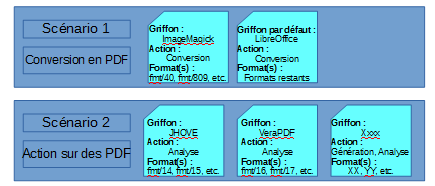
Exemple : le premier scénario couvre une seule action de préservation, effectuée par deux griffons différents sur des formats différents, tandis que le second porte sur deux actions différentes effectuée par des griffons différents sur des formats différents.
En outre, la solution logicielle Vitam permet d’utiliser :
une même action de préservation dans 1 à n scénario(s) de préservation (ex : plusieurs scénarios de préservation peuvent avoir pour objet une action de génération de binaires) ;
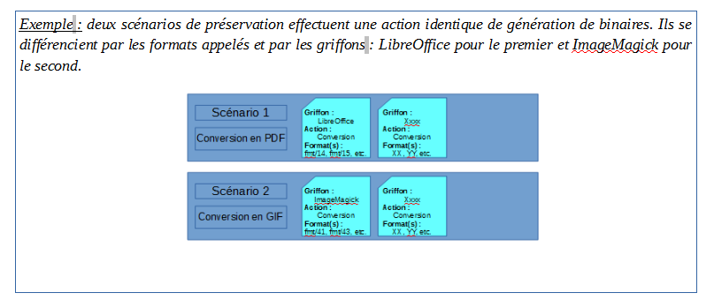un même griffon pour des tâches diverses dans 1 à n scénario(s) de préservation ;
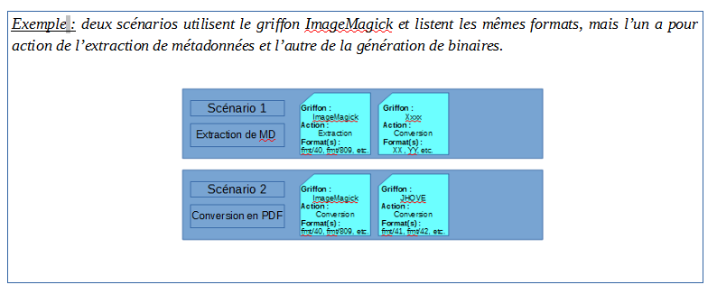
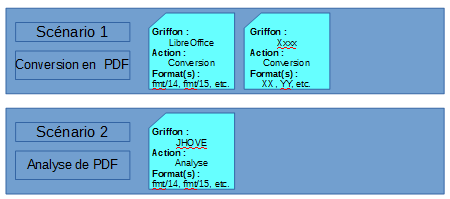
un même format dans 1 à n scénario(s) de préservation.
Exemple : deux scénarios de préservation ont pour objet les mêmes formats. En revanche, leurs actions et leurs griffons diffèrent.
17.2.3.2. Formalisation
17.2.3.2.1. Dans un fichier JSON
Un référentiel des scénarios de préservation liste l’ensemble des scénarios de préservation pouvant être utilisés par la solution logicielle Vitam. Ce référentiel est importé sous la forme d’un fichier JSON, contenant systématiquement l’ensemble des scénarios de préservation utilisés[30].
{
"Identifier": "PSC-000001",
"Name": "Tranformation en GIF (fmt/43)",
"Description": "Ce scénario, appelant le griffon ImageMagick, permet de convertir des fichiers dont le PUID est fmt/43 en fichiers au format GIF, et prenant la forme de vignettes de 100px x 100px",
"CreationDate": "2018-11-16T15:55:30.721",
"ActionList": [
"GENERATE"
],
"GriffinByFormat": [
{
"FormatList": ["fmt/43"],
"GriffinIdentifier": "GRI-000001",
"Timeout": 2000,
"MaxSize": 10000000,
"Debug":true,
"ActionDetail": [
{
"Type": "GENERATE",
"Values": {
"Extension": "GIF",
"Args": [
"-thumbnail",
"100x100"
]
}
}
]
}
],
"DefaultGriffin": {
"GriffinIdentifier": "GRI-000002",
"Timeout": 2000,
"MaxSize": 10000000,
"Debug":true,
"ActionDetail": [
{
"Type": "GENERATE",
"Values": {
"Extension": "GIF",
"Args": [
"-thumbnail",
"100x100"
]
}
}
]
}
}
Un scénario de préservation donné doit nécessairement comporter les informations suivantes :
identifiant signifiant du scénario de préservation, généré par l’application à l’origine de sa création (Identifier – obligatoire) ;
nom du scénario de préservation (Name – obligatoire) ;
action(s) couverte(s) par le scénario de préservation (ActionList – obligatoire). Ce champ peut contenir 1 à 4 valeurs :
« GENERATE » : le scénario de préservation couvre une opération de génération d’un nouvel objet binaire (par exemple, conversion d’un format) ;
« ANALYSE » : le scénario de préservation permet d’analyser un ou plusieurs format(s) de fichier (par exemple, validation d’un format) ;
« IDENTIFY » : le scénario de préservation permet de réidentifier un ou plusieurs format(s) de fichier ;
« EXTRACT » : le scénario de préservation couvre la fonctionnalité d’extraction de métadonnées techniques contenues dans les objets binaires en vue de les enregistrer dans les métadonnées des groupes d’objets techniques ;
« EXTRACT_AU » : le scénario de préservation couvre la fonctionnalité d’extraction de métadonnées descriptives contenues dans les objets binaires en vue de les enregistrer dans les métadonnées des unités archivistiques.
Une description (Description), ainsi que l’(les) action(s) couverte(s) par le scénario de préservation, pour un griffon donné et une liste de format(s) donnée (bloc GriffonByFormat), voire une action et un griffon à exécuter par défaut (bloc DefaultGriffin), facultatifs, peuvent venir compléter ces informations.
Point d’attention :
L’identifiant d’un scénario ne doit comprendre ni caractère accentué, ni virgule, ni apostrophe, ni parenthèse, ni espace, ni slash, ni élément de ponctuation, ou tout autre caractère spécial. Ne sont autorisés que l’underscore et le tiret comme séparateurs.
17.2.3.2.2. Dans la solution logicielle Vitam
Les scénarios de préservation sont enregistrés dans la base de données MongoDB, dans la collection « PreservationScenario », sous la forme d’enregistrements au format JSON. Chaque enregistrement est modélisé comme suit[31] :
identifiant unique dans l’ensemble du système, fourni par ce dernier (_id – obligatoire) ;
identifiant signifiant du scénario de préservation, généré par l’application à l’origine de sa création (Identifier – obligatoire). Il ne doit comprendre ni caractère accentué, ni virgule, ni apostrophe, ni parenthèse, ni espace, ni slash, ni élément de ponctuation, ou tout autre caractère spécial. Ne sont autorisés que l’underscore et le tiret comme séparateurs.
nom du scénario de préservation (Name – obligatoire) ;
description du scénario de préservation (Description – facultatif) ;
date de création du scénario de préservation. Si l’information n’est pas présente dans le fichier JSON importé dans la solution logicielle Vitam, la date est fournie par la solution logicielle Vitam et correspond à la date de création de l’enregistrement (CreationDate – obligatoire) ;
date correspondant à la dernière modification de l’enregistrement, fournie par la solution logicielle Vitam (LastUpdate – obligatoire) ;
action(s) couverte(s) par le scénario de préservation (ActionList – obligatoire). Ce champ peut contenir 1 à 4 valeurs :
« GENERATE » : le scénario de préservation couvre une opération de génération d’un nouvel objet binaire (par exemple, conversion d’un format) ;
« ANALYSE » : le scénario de préservation permet d’analyser un ou plusieurs format(s) de fichier (par exemple, validation d’un format) ;
« IDENTIFY » : le scénario de préservation permet de réidentifier un ou plusieurs format(s) de fichier ;
« EXTRACT » : le scénario de préservation couvre la fonctionnalité d’extraction de métadonnées techniques contenues dans les objets binaires en vue de les enregistrer dans les métadonnées des groupes d’objets techniques ;
« EXTRACT_AU » : le scénario de préservation couvre la fonctionnalité d’extraction de métadonnées descriptives contenues dans les objets binaires en vue de les enregistrer dans les métadonnées des unités archivistiques ;
tenant dans lequel l’enregistrement a été créé, fourni par le système (_tenant – obligatoire) ;
version du scénario de préservation, fournie par le système (_v – obligatoire).
Si l’enregistrement est égal à « 0 », il s’agit de l’enregistrement d’origine.
Si l’enregistrement est supérieur à « 1 », l’enregistrement a fait l’objet de 1 à n mise(s) à jour.
Deux blocs supplémentaires, pouvant être vide, détaille le périmètre du scénario de préservation :
un bloc GriffinByFormat (Action(s) couverte(s) – facultatif) précise l’(les) action(s) couverte(s) par le scénario de préservation, pour un griffon donné et une liste de format(s) donnée ;
un bloc DefaultGriffin (Action par défaut – facultatif) permet de définir une(des) action(s) par défaut, si l’action principale du scénario de préservation ne s’exécute pas. Chacun de ces blocs comprend les éléments suivants :
identifiant du griffon à exécuter (GriffinIdentifier – obligatoire) ;
temps maximal de traitement (Timeout – obligatoire) ;
taille maximale des objets binaires (MaxSize – obligatoire) ;
debug (Debug – obligatoire).
Si la valeur est égale à « true », les anomalies rencontrées[32] sont récupérées dans les logs de la solution logicielle Vitam ;
Si la valeur est égale à « false », les anomalies rencontrées ne sont pas récupérées dans les logs de la solution logicielle Vitam ;
les commande(s) à exécuter (ActionDetail – obligatoire)[33], qui se déclinent en :
Type d’action à exécuter (Type – obligatoire). Ce champ peut contenir 1 à 4 valeurs :
GENERATE » : le scénario de préservation couvre une opération de génération d’un nouvel objet binaire (par exemple, conversion d’un format) ;
« ANALYSE » : le scénario de préservation permet d’analyser un ou plusieurs format(s) de fichier (par exemple, validation d’un format) ;
« IDENTIFY » : le scénario de préservation permet de réidentifier un ou plusieurs format(s) de fichier ;
« EXTRACT » : le scénario de préservation couvre la fonctionnalité d’extraction de métadonnées techniques contenues dans les objets binaires en vue de les enregistrer dans les métadonnées des groupes d’objets techniques ;
« EXTRACT_AU » : le scénario de préservation couvre la fonctionnalité d’extraction de métadonnées descriptives contenues dans les objets binaires en vue de les enregistrer dans les métadonnées des unités archivistiques ;
Valeur(s) (Values – facultatif), précisant les commandes passées par le scénario de préservation au griffon. Ce champ contient les éléments suivants :
des argument(s) (Args – facultatif), correspondant à une commande passée au griffon selon un langage et une grammaire comprise par ce dernier ;
une extension de sortie (Extension – facultatif), permettant de préciser, dans le cadre d’une opération de génération d’objet binaire, l’extension du format généré attendue ;
une liste de données à extraire (FilteredExtractedObjectGroupData – facultatif), déterminant les métadonnées à extraire des objets binaires et à enregistrer dans la collection « ObjectGroup », dans le cadre d’une opération d’extraction de métadonnées. Ce champ peut contenir les valeurs suivantes :
« ALL_METADATA » : en vue d’obtenir une extraction de l’ensemble des métadonnées internes des objets binaires, enregistrées et indexées unitairement ;
« RAW_METADATA » : en vue d’obtenir une extraction de l’ensemble des métadonnées internes des objets binaires dans un champ unique ;
une liste de métadonnées internes en particulier, correspondant à des objets (ex : resolution, compression, geometry).
Le bloc GriffinByFormat contient en plus un élément listant le(s) format(s) concerné(s) par le scénario de préservation (FormatList – obligatoire).
Point d’attention : si le scénario de préservation a vocation à réaliser des extractions de métadonnées externes, il est recommandé d’ajouter dans l’ontologie les métadonnées destinées à être extraites et de les indexer dans le moteur de recherche Elastic Search.
17.2.3.3. Mécanismes mis en œuvre dans la solution logicielle Vitam
17.2.3.3.1. Import
Dans la solution logicielle Vitam, il est possible d’importer un référentiel des scénarios de préservation, fonctionnant en mode « esclave », tenant par tenant. Il s’agit d’une opération d’administration (« MASTERDATA »), tracée dans le journal des opérations de la solution logicielle Vitam[34].
17.2.3.3.2. Ré-import et mise à jour
La modification du référentiel des scénarios de préservation s’effectue par un réimport du fichier JSON, en mode « annule et remplace ». De fait, la solution logicielle Vitam permet de :
ajouter un nouveau scénario ;
modifier les informations associées à un scénario ;
supprimer un scénario.
Cette action provoque la création d’une nouvelle version du référentiel. Les différentes versions du référentiel font l’objet d’une sauvegarde sur les offres de stockage utilisées par la solution logicielle Vitam.
Elle fait l’objet d’une journalisation dans le journal des opérations (opération d’administration de type « MASTERDATA »)[35].
Lors de ce ré-import ou de cette mise à jour, l’opération peut aboutir aux statuts suivants :
Statut |
Motifs |
|---|---|
Succès |
l’opération a été réalisée sans rencontrer de problèmes particuliers. |
Échec[36] |
sans journalisation : |
avec journalisation : |
17.2.3.3.3. Accès au référentiel
La solution logicielle Vitam permet d’effectuer des recherches dans le référentiel des scénarios de préservation. Il est possible d’obtenir :
une liste de résultats,
un résultat par facettes (nombre d’occurrences pour une métadonnée donnée). Sont disponibles les facettes de type :
« terms » : pour obtenir des catégories basées sur les valeurs distinctes d’un champ spécifique et le nombre associé,
« filters » : pour obtenir des résultats d’agrégations par filtres sur les résultats,
« range » : pour obtenir des agrégations par plages de dates,
« sum » : pour obtenir des totaux sur des champs,
« count » : pour obtenir le nombre de valeurs présentes sur des champs,
« cardinality » : pour obtenir le nombre exact de valeurs présentes sur des champs (usage non recommandé).
Par ailleurs, la solution logicielle permet de consulter le détail d’un scénario en particulier.
L’accès au référentiel est possible uniquement depuis les API.
17.2.3.4. Conseils de mise en œuvre
À l’issue de cette phase de réalisation de fonctionnalités concernant le référentiel des scénarios de préservation, l’équipe projet Vitam est en mesure de fournir quelques recommandations de mise en œuvre :
17.2.3.4.1. À quoi sert le référentiel des scénarios de préservation ?
L’objectif du référentiel est de :
connaître l’ensemble des scénarios de préservation disponibles et utilisables dans la solution logicielle Vitam ;
gérer et administrer une politique de préservation dont les scénarios de préservation sont une déclinaison ;
permettre l’utilisation des scénarios de préservation ainsi référencés dans une à plusieurs opération(s) de préservation.
17.2.3.4.2. Quand et comment créer un référentiel des scénarios de préservation ?
Créer un scénario de préservation est un pré-requis obligatoire pour lancer n’importe quelle opération de préservation. La création d’un scénario de préservation nécessite :
l’installation préalable d’au moins un griffon dans la solution logicielle Vitam et sa déclaration dans le référentiel des griffons ;
l’installation préalable d’un référentiel des formats contenant les formats destinés à être référencés dans un scénario de préservation.
De fait, afin de créer un scénario de préservation, il est recommandé de suivre les étapes suivantes :
Qui ? |
Quoi ? |
Via l’IHM démo Vitam ? |
|---|---|---|
Administrateur fonctionnel |
- détermine le scénario de préservation qu’il veut mettre en œuvre et l’outil qu’il souhaite utiliser. |
Non |
Administrateur technique |
- vérifie si le griffon que l’on souhaite solliciter est installé et disponible dans la solution logicielle Vitam |
Non |
Administrateur technique et/ou fonctionnel |
- vérifie si le griffon est référencé dans le référentiel des griffons ; |
Oui |
Administrateur technique et fonctionnel |
crée un scénario de préservation utilisant le griffon en question |
Oui |
Administrateur fonctionnel |
lance l’opération de préservation |
Oui |
17.2.3.4.3. Quand et comment ré-importer et mettre à jour le référentiel des scénarios de préservation ?
La mise à jour du référentiel des scénarios de préservation s’avère nécessaire pour répondre aux besoins suivants :
mise à jour des informations relatives à un ou plusieurs scénario(s) de préservation (ex : ajout d’un format dans un scénario, correction de la description, etc.) ;
ajout d’un nouveau scénario de préservation ;
suppression d’un scénario de préservation.
La solution logicielle Vitam permet de mettre à jour le référentiel dans la solution logicielle Vitam, en procédant à un réimport complet du référentiel.
Points d’attention :
La solution logicielle Vitam effectue des contrôles sur l’existence des griffons et formats déclarés dans un scénario de préservation. En d’autres termes, il faut veiller à ce que les griffons et formats déclarés dans un scénario existent dans le référentiel des griffons pour les uns et dans le référentiel des formats pour les autres, avant de procéder à la mise à jour du référentiel des scénarios de préservation, sans quoi cette opération échouera.
17.2.3.4.4. Quand et comment créer un scénario de préservation ?
17.2.3.4.4.1. Réflexion autour des besoins en termes de préservation
Avant de créer un scénario de préservation et de l’ajouter au référentiel des scénarios de préservation, il faut réfléchir aux actions de préservation que l’on souhaite mener :
Action |
Questions |
|---|---|
Identifier le contexte |
quels sont les fichiers numériques sur lesquels il faut procéder à une opération de préservation ? Pourquoi ? Existe-il un besoin légal ? |
Identifier le périmètre |
y a-t-il une seule ou plusieurs séries de fichiers numériques à traiter ? Quel est leur format ? |
Identifier l’action |
quelle action souhaite-t-on réaliser ? Souhaite-t-on procéder à une succession d’actions ? |
Identifier l’outil (griffon) |
quel outil utiliser ? S’il existe plusieurs outils pour une même action de préservation, souhaite-on en utiliser un ou plusieurs ? |
En fonction du périmètre, de(s) l’action(s) à effectuer et de(s) l’outil(s) privilégié(s), la conception du scénario de préservation variera. Par exemple :
On peut envisager de réaliser un scénario unique d’identification de formats en utilisant le griffon par défaut Siegfried. Ce scénario ne spécifie pas de formats en particulier dans la mesure où Siegfried couvre les formats référencés dans le registre PRONOM ;
Si on veut faire une succession d’actions identiques sur un fichier numérique (d’abord le transformer de A en B, puis de B en C), il faudra faire deux scénarios, car on va intervenir sur deux objets binaires de formats différents ;
Si on veut faire deux actions différentes sur le même fichier numérique (analyse, puis conversion), on doit créer deux scénarios : l’un pour l’analyse, l’autre pour la conversion, car un même scénario ne peut avoir deux actions à réaliser portant sur le même format.
17.2.3.4.4.2. Rédaction d’un scénario de préservation
La création d’un nouveau scénario de préservation s’effectue par un réimport complet du référentiel, auquel a été ajouté un scénario supplémentaire.
Elle obéit à des règles strictes :
Le scénario de préservation doit avoir un identifiant signifiant (Identifier) unique dans le référentiel des scénarios de préservation. Cet identifiant est généré par l’application à l’origine de sa création. Il ne doit comprendre ni caractère accentué, ni virgule, ni apostrophe, ni parenthèse, ni espace, ni slash, ni élément de ponctuation, ou tout autre caractère spécial. Ne sont autorisés que l’underscore et le tiret comme séparateurs.
Il doit comporter un nom (Name) ;
Il doit préciser les actions de préservation qu’il couvre (ActionList).
Ces actions, qui sont au nombre de cinq, correspondent obligatoirement à la liste suivante : « GENERATE », « ANALYSE », « IDENTIFY », « EXTRACT », « EXTRACT_AU » ;
Le scénario peut couvrir 1 à 4 de ces actions.
Il précise les actions couvertes pour un griffon donné et une liste de format(s) donnée (GriffinByFormat). Il peut préciser une à plusieurs actions. Chacune de ces actions :
peut être couverte par un griffon différent ;
peut être différente les unes des autres ;
doit porter sur des formats différents. Cela signifie que chaque liste de formats associée à un griffon donné ne doit pas contenir de formats identiques. Si c’est le cas, le format répété ne sera traité qu’une seule fois dans le cadre d’une opération de préservation exécutant le scénario de préservation.
Pour une action couverte par un griffon donné, il est obligatoire de paramétrer les éléments suivants :
identifiant du griffon à exécuter (GriffinIdentifier). Le griffon doit avoir été préalablement installé dans la solution logicielle Vitam et référencé dans le référentiel des griffons, sans quoi le scénario de préservation ne fonctionnera pas ;
temps maximal de traitement (Timeout). Il s’agit d’indiquer le temps en secondes au bout duquel la solution logicielle Vitam, en l’absence de réponse du griffon, arrêtera l’action de préservation. Le timeout est fonction du griffon et de la réactivité de ce dernier. Par exemple :
pour Siegfried, il est de l’ordre de la seconde ;
pour Tesseract, dans la mesure où l’on doit pouvoir traiter des objets binaires au format TIFF multi-images assez volumineux, il est plutôt de l’ordre de 10 minutes ;
taille maximale des objets binaires (MaxSize) sur lesquels l’action de préservation peut être effectuée en utilisant ce scénario de préservation. Elle est exprimée en octets.
debug (Debug).
Si la valeur est égale à « true », les anomalies rencontrées[38] sont récupérées dans les logs de la solution logicielle Vitam. Devant permettre d’analyser un dysfonctionnement dans le contexte de l’utilisation d’un griffon dans la solution logicielle Vitam, cette option ne doit être activée que dans un contexte de pré-production ;
Si la valeur est égale à « false », les anomalies rencontrées ne sont pas récupérées dans les logs de la solution logicielle Vitam.
la(les) commande(s) à exécuter (ActionDetail), qui se décline(nt) en :
Type d’action à exécuter (Type – obligatoire). Ce champ doit contenir une de ces quatre valeurs :
« GENERATE » : le scénario de préservation couvre une opération de génération d’un nouvel objet binaire (par exemple, conversion d’un format) ;
« ANALYSE » : le scénario de préservation permet d’analyser un ou plusieurs format(s) de fichier (par exemple, validation d’un format) ;
« IDENTIFY » : le scénario de préservation permet de réidentifier un ou plusieurs format(s) de fichier ;
« EXTRACT » : le scénario de préservation couvre la fonctionnalité d’extraction de métadonnées techniques contenues dans les objets binaires en vue de les enregistrer dans les métadonnées des groupes d’objets techniques ;
« EXTRACT_AU » : le scénario de préservation couvre la fonctionnalité d’extraction de métadonnées descriptives contenues dans les objets binaires en vue de les enregistrer dans les métadonnées des unités archivistiques ;
Valeur(s) (Values), précisant les commandes passées par le scénario de préservation au griffon[39]. Ce champ contient des éléments différents en fonction du type d’action déclaré :
pour les actions de préservation « ANALYSE », « GENERATE », « IDENTIFY » et, « EXTRACT », ce champ a pour valeur « null » ou peut être absent ;
pour l’action « GENERATE », c’est un objet pouvant, en plus du cas précédent, posséder deux champs : ◦ une extension (Extension) chaîne de caractères servant à rajouter une extension aux fichiers générés, à écrire, de préférence, en minuscules (ex : pdf) ; ◦ le cas échéant, une liste d’arguments (Args) utilisés lors de la commande système qu’effectue le griffon sur les objets binaires concernés. Ces arguments doivent être conformes à ceux qui sont attendus et paramétrés pour être interprétés par le griffon utilisé[40].
pour l’action « EXTRACT », c’est un objet pouvant, en plus du premier cas, posséder un champ permettant de lister les données à extraire des objets binaires et à enregistrer dans la collection « ObjectGroup » (FilteredExtractedObjectGroupData). Ce champ peut contenir les valeurs suivantes : ◦ « ALL_METADATA » : en vue d’obtenir une extraction de l’ensemble des métadonnées internes des objets binaires, enregistrées et indexées unitairement ; ◦ « RAW_METADATA » : en vue d’obtenir une extraction de l’ensemble des métadonnées internes des objets binaires dans un champ unique ; ◦ une liste de métadonnées internes en particulier, correspondant à des objets (ex : resolution, compression, geometry).
Point d’attention :
Si le scénario de préservation a vocation à réaliser des extractions de métadonnées interne, il est recommandé d’ajouter dans l’ontologie les métadonnées destinées à être extraites et de les indexer dans le moteur de recherche Elastic Search.
Exemple : ce scénario de préservation permet de convertir au format PDF une liste de formats avec ImageMagick et une autre liste de formats avec LibreOffice. Pour les autres formats non listés, le scénario effectue par défaut une analyse avec JHOVE.
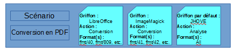
[
{
"Identifier": "PSC-000001",
"Name": "Tranformation en pdf",
"Description": "Ce scénario permet de transformer un grand nombre de formats (bureautique et image) en PDF.",
"ActionList": ["GENERATE"],
"GriffinByFormat": [
{
"FormatList": ["fmt/40", "fmt/809"],
"GriffinIdentifier": "GRI-000003",
"Timeout": 20,
"MaxSize": 10000000,
"Debug":true,
"ActionDetail": [
{"Type": "GENERATE","Values": {"Extension": "pdf", "Args": ["-f","pdf","-e","SelectedPdfVersion=1"]}},
{"Type": "ANALYSE","Values": {"Args": ["-strict"]}}]
},
{
"FormatList": ["fmt/41","fmt/42"],
"GriffinIdentifier": "GRI-000001",
"Timeout": 10,
"MaxSize": 10000000,
"Debug":true,
"ActionDetail": [
{"type": "GENERATE","values": {"Extension": "pdf","Args": ["-quality","100","-units","PixelsPerInch","-density","72x72"]}}]
}
],
"DefaultGriffin": {
"GriffinIdentifier": "GRI-000005",
"Timeout": 10,
"MaxSize": 10000000,
"Debug":true,
"ActionDetail": [
{"Type": "ANALYSE","Values": {"Args": ["-strict"]}}]
}
}
]
17.2.3.4.5. Quand et comment supprimer un scénario de préservation ?
Si on ne souhaite plus utiliser un scénario de préservation, il faut l’ôter du référentiel des scénarios de préservation.
Ainsi, il ne peut plus être utilisé dans une opération de préservation.
Les raisons pouvant amener à supprimer un scénario sont les suivantes :
Le scénario n’est jamais utilisé ou n’est plus utilisé. Par souci de clarté, on souhaite le supprimer du référentiel ;
Le référentiel contient deux scénarios identiques. Plutôt que de les maintenir séparément, on souhaite en supprimer un du référentiel ;
Le scénario fait appel à un griffon qui n’est plus utilisé dans le système ;
Il y a eu erreur de saisie dans le référentiel, qui a entraîné la création d’une deuxième version d’un scénario de préservation.
Point d’attention : avant de supprimer tout scénario de préservation, il est recommandé de vérifier qu’il n’est pas utilisé dans le cadre d’une opération de préservation en cours de réalisation.
17.2.3.4.6. Comment élaborer et structurer un référentiel des scénarios de préservation ?
Le référentiel des scénarios de préservation peut être alimenté de manière très modulaire :
d’une manière très générique, en réduisant le nombre de scénarios au nombre d’actions de préservation possibles : validation, conversion, identification, extraction ;
d’une manière plus spécifique, en se focalisant sur :
un type de format en particulier par scénario ;
la finalité du scénario de préservation, en dissociant les scénarios par type d’action et format.
Cas 1 : un scénario par type d’action de préservation
Cette première solution présente l’avantage de limiter le nombre de scénarios. En revanche, la mise au point de chacun des scénarios peut s’avérer complexe et leur utilisation dans le cadre d’une opération de préservation peut s’avérer lourde en termes de traitement et de performance. L’élaboration de ce type de scénarios génériques peut être envisagée dans le cadre d’opérations de préservation portant sur l’ensemble des objets binaires conservés dans la solution logicielle Vitam et tournant en tâche de fond.
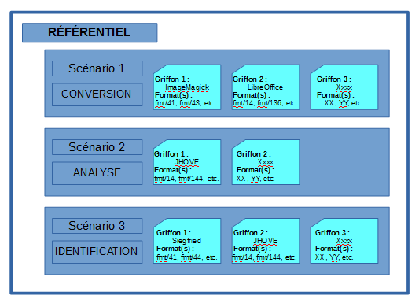
Cas 2 : un scénario par format
Cette deuxième solution permet d’effectuer des opérations de préservation plus ciblées et de répondre à des besoins plus circonscrits en termes de préservation. L’avantage de cette solution est de permettre de ne pas lancer une opération sur l’ensemble des objets binaires conservés dans la solution logicielle Vitam et d’avoir une vision plus claire du contenu de chacun des scénarios de préservation.
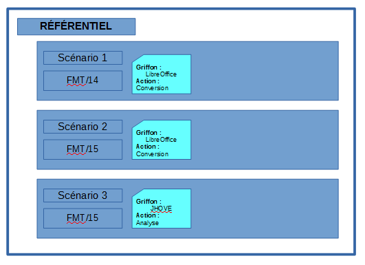
Cas 3 : un scénario par finalité
Cette troisième solution, modulaire, permet de disposer de scénarios génériques, portant sur l’ensemble des formats supportés dans la solution logicielle Vitam, en vue de réaliser une opération de préservation en particulier (ex : générer des GIF, grâce à plusieurs griffons et sur une liste exhaustive de formats). Mais elle permet également d’effectuer des actions plus ciblées et de répondre à des besoins plus circonscrits (ex : valider des fichiers PDF). 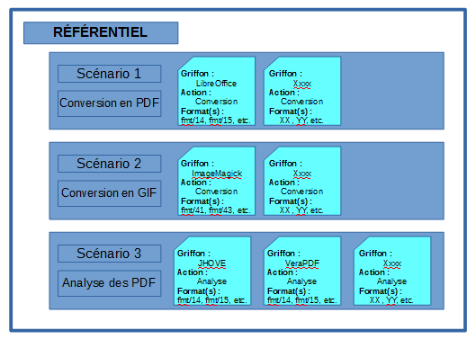
17.2.3.4.7. Comment utiliser le référentiel des scénarios de préservation ?
Intitulé |
Description |
Niveau de recommandation |
|---|---|---|
Import du référentiel des scénarios de préservation |
Si l’on souhaite procéder à des opérations de préservation, il est obligatoire de : |
Obligatoire |
Import et/ou mise à jour du référentiel des scénarios de préservation |
La solution logicielle Vitam effectue des contrôles sur l’existence des griffons et formats déclarés dans un scénario de préservation. En d’autres termes, il est obligatoire de veiller à ce que les griffons et formats déclarés dans un scénario existent dans le référentiel des griffons pour les uns et dans le référentiel des formats pour les autres, avant de procéder à la mise à jour du référentiel des scénarios de préservation, sans quoi cette opération échouera. |
Obligatoire |
Nommage de l’identifiant des scénarios |
L’identifiant des scénarios ne doit comprendre ni caractère accentué, ni virgule, ni apostrophe, ni parenthèse, ni espace, ni slash, ni élément de ponctuation, ou tout autre caractère spécial. Ne sont autorisés que l’underscore et le tiret comme séparateurs. |
Obligatoire |
Activer le debug |
Le debug permet d’analyser un dysfonctionnement dans le contexte de l’utilisation d’un griffon dans la solution logicielle Vitam, que ce soit une anomalie émanant de l’outil ou d’un mauvais paramétrage de l’utilisateur. |
Recommandé |
Supprimer un scénario de préservation |
La solution logicielle Vitam permet de supprimer un scénario en l’enlevant du référentiel des scénarios de préservation. |
Recommandé |
17.3. Entrées et préservation
En entrée dans le système, la solution logicielle Vitam permet de :
paramétrer des filtres au moyen des contrats d’entrée afin de contraindre les objets binaires pouvant y entrer ;
effectuer des contrôles génériques, notamment d’identification, dans le cadre d’opérations d’entrée dans le système.
17.3.1. Définition
Assurer la préservation et garantir un archivage pérenne commence dès l’entrée des objets binaires dans le système. Afin d’atteindre cet objectif, et ce en fonction du degré de contrôle souhaité, il peut être envisagé de :
imposer ou non une liste de formats autorisés ;
accepter ou non des formats non identifiés ;
contrôler les objets binaires transférés dans la solution logicielle Vitam en termes d’usages ;
vérifier l’identification des objets binaires, voire les réidentifier ;
valider les formats de ces objets binaires (service non implémenté).
Pour ce faire, dans le cadre du processus d’entrée d’un ensemble d’archives, la solution logicielle propose différentes fonctionnalités :
elle effectue automatiquement et de manière générique des tâches d’identification ;
elle permet, le cas échéant, de rajouter des vérifications supplémentaires au moyen d’un plug-in ;
elle propose également des paramétrages, adaptables en fonction des besoins, permettant de contrôler les objets binaires transférés, au moyen des contrats d’entrée.
17.3.2. Mécanismes mis en œuvre par la solution logicielle Vitam
17.3.2.1. Filtres sur les entrées
La solution logicielle offre la possibilité de paramétrer des filtres à appliquer sur les bordereaux de transfert et les objets binaires qu’ils référencent au moyen des contrats d’entrée.
En effet, un contrat d’entrée permet d’effectuer des contrôles sur les groupes d’objets techniques transférés dans la solution logicielle Vitam au moyen de quatre options[41] :
Une première option permet d’autoriser ou non le transfert de groupes d’objets techniques ne contenant pas d’objets de type « Master » :
Si sa valeur est égale à « true », le bordereau de transfert devra obligatoirement contenir des objets de type « Master », qu’ils soient binaires (« BinaryMaster ») ou physiques (« PhysicalMaster ») ;
Si sa valeur est égale à « false », le bordereau de transfert sera autorisé à contenir des groupes d’objets techniques sans objet de type « Master » ;
Si le contrat d’entrée, lors de son initialisation, ne détermine pas l’option retenue, la solution logicielle Vitam appliquera par défaut une valeur égale à « true » et imposera la présence d’objets de type « Master » dans les bordereaux de transfert.
Une deuxième option permet de déterminer quel(s) type(s) ou usage(s) d’objets sont attendus dans les bordereaux de transfert (BinaryMaster, Dissemination, Thumbnail, TextContent), dans le cas où l’on souhaite rattacher un objet à un groupe d’objets techniques déjà conservé dans la solution logicielle Vitam :
Si le contrat d’entrée permet le transfert de n’importe quel type d’usage, le bordereau de transfert pourra contenir n’importe quel type d’usage ;
Si le contrat d’entrée précise quel(s) usage(s) il autorise, le bordereau de transfert devra nécessairement contenir le(s) seul(s) usage(s) déclaré(s) dans le contrat d’entrée, sans quoi le transfert échouera ;
Si le contrat d’entrée, lors de son initialisation, ne détermine pas l’option retenue, la solution logicielle Vitam acceptera n’importe quel usage en entrée.
Une troisième option permet de déterminer quel(s) format(s) de fichiers, exprimés sous la forme de PUID, sont attendus dans les bordereaux de transfert :
Si le contrat d’entrée permet le transfert de n’importe quel format de fichier, le bordereau de transfert pourra contenir des objets de n’importe quel format possible ;
Si le contrat d’entrée précise quel(s) format(s) de fichier il autorise, le bordereau de transfert devra obligatoirement contenir des objets conformes au(x) seul(s) format(s) déclaré(s) dans le contrat d’entrée, sans quoi le transfert échouera ;
Si le contrat d’entrée, lors de son initialisation, ne détermine pas l’option retenue, la solution logicielle Vitam acceptera n’importe quel format en entrée.
Une quatrième option permet d’autoriser le transfert d’objets binaires dont le format n’est pas identifiable par l’outil d’identification de formats Siegfried, au moyen d’un paramétrage :
Si sa valeur est égale à « true », il sera possible de transférer des objets binaires dont l’outil d’identification Siegfried est incapable d’identifier le format, malgré cette absence d’identification ;
Si sa valeur est égale à « false » (valeur par défaut), il ne sera possible de transférer dans la solution logicielle Vitam que des objets binaires dont le format est identifié par l’outil d’identification Siegfried.
17.3.2.2. Contrôles sur les entrées
17.3.2.2.1. Service d’identification
Dans le cadre d’un transfert d’archives, la solution logicielle Vitam :
demande à l’outil d’identification de formats Siegfried de procéder à l’identification des fichiers qui sont transférés dans un Submission Information Package (SIP) ;
vérifie que l’identification retournée existe dans le référentiel des formats dont Siegfried dispose ;
compare l’identification obtenue grâce à Siegfried avec l’identification proposée dans le manifeste du SIP ;
peut :
rejeter les SIP dans lesquels des fichiers numériques n’ont pas pu être identifiés (en retournant la ou l’(es) erreur(s) identifiée(s) au service demandeur dans le message ArchiveTransferReply) ;
corriger l’identification des fichiers numériques, si l’identification obtenue grâce à l’outil d’identification de formats Siegfried diffère de celle proposée dans le bordereau de transfert. Si Siegfried propose en résultats d’identification une liste de formats de fichiers, la solution logicielle Vitam prendra la première proposition.
le cas échéant, accepter les entrées contenant des objets binaires dont le format n’est pas identifié, si le contrat d’entrée l’autorise ;
enregistre l’identification obtenue grâce à l’outil d’identification de formats Siegfried en conservant, dans le journal du cycle de vie des groupes d’objets techniques correspondant, l’identification transmise dans le bordereau de transfert si celle-ci est différente. Si le contrat d’entrée autorise le transfert d’objets binaires au format inconnu, ceux-ci seront enregistrés avec une extension « .unknown ».
Ces contrôles permettent ainsi de :
effectuer l’identification la plus fine possible des formats de fichiers, en ne se contentant pas d’une identification sur la base de l’extension ;
recourir aux services de l’outil d’identification de formats Siegfried. Ce choix a été effectué sur la base d’une analyse des avantages et des inconvénients de chaque outil, réalisée par le Service interministériel des Archives de France (SIAF) et l’équipe projet Vitam ;
procéder à l’identification lors du processus de transfert et de prise en charge par la solution logicielle Vitam.
17.3.2.2.2. Service supplémentaire
En plus de ce processus d’identification générique, la solution logicielle offre la possibilité d’intégrer d’autres outils que celui qu’elle utilise nativement (Siegfried) via des plug-in.
Les API mises en place permettent de dialoguer avec ces outils au moyen de trois types de requêtes :
récupérer l’identification du format d’un fichier envoyé à l’outil ;
récupérer la liste des PUID connus du référentiel interne à l’outil ;
vérifier si un format est connu du référentiel interne de l’outil sur la base de son PUID.
L’exécution de ces plug-in et son résultat peuvent être accompagnés par l’ajout d’étapes supplémentaires, spécifiques et non optionnelles, dans le workflow d’entrée.
Point d’attention :
Il est recommandé de s’assurer que le référentiel interne au plug-in soit compatible avec le référentiel des formats utilisé par la solution logicielle Vitam.
L’installation de ce plug-in relève d’un acte technique.
17.3.3. Conseils de mise en œuvre
À l’issue de cette phase de réalisation de fonctionnalités, l’équipe projet Vitam est en mesure de fournir quelques recommandations de mise en œuvre :
17.3.3.1. Quand et comment ajouter des contrôles sur les entrées ?
La solution logicielle Vitam permet d’ajouter des plug-in et de créer en parallèle de nouvelle(s) étape(s) dans le workflow, faisant état du traitement opéré par ce(s) plug-in(s)[42]. Le paramétrage de ces deux fonctionnalités relève d’un acte technique, réalisé :
soit au moment de l’installation de la plate-forme,
soit sur une plate-forme en activité. Cette opération peut nécessiter une interruption de service et un redémarrage de la plate-forme. On peut envisager d’ajouter un plug-in et une étape au workflow d’entrée pour répondre aux besoins suivants :
identifier les objets binaires avec un outil différent de Siegfried ;
valider automatiquement les objets binaires en entrée du système.
Point d’attention :
La nouvelle étape ainsi ajoutée s’insère dans le workflow d’entrée générique de la solution logicielle Vitam[43].
Cette nouvelle étape n’est ni optionnelle, ni paramétrable au moyen des contrats d’entrée. De fait, elle devient générique.
Si on a installé un plug-in d’identification autre que Siegfried et une étape d’identification utilisant ce plug-in, dans le cadre du processus de transfert, la solution logicielle Vitam maintient néanmoins les étapes d’identification utilisant l’outil d’identification Siegfried. Dans ce cas-là :
le workflow d’entrée contiendra deux étapes d’identification, recourant aux services de deux plug-in différents ;
l’identification effectuée par le second plug-in n’est qu’informative et destinée à bloquer une entrée si l’outil échoue à reconnaître un format. En revanche, ce plug-in n’a pas vocation à se substituer à l’outil d’identification de formats utilisé par la plate-forme (Siegfried actuellement) en termes de réidentification en entrée.
Il est recommandé de s’assurer que le référentiel interne au plug-in soit compatible avec le référentiel des formats utilisé par la solution logicielle Vitam.
17.3.3.2. Comment paramétrer les filtres sur les entrées ?
Intitulé |
Description |
Niveau de recommandation |
|---|---|---|
Application versant des originaux numériques |
Pour une application devant transférer uniquement des originaux numériques, il est recommandé de contrôler au moyen du contrat d’entrée que les groupes d’objets techniques qu’elle transfère contiennent obligatoirement un objet de type « Master » (« BinaryMaster ») |
Recommandé |
Application versant des objets d’un même usage à ajouter à des groupes d’objets techniques déjà présents dans le système |
Il est recommandé d’indiquer dans le contrat d’entrée quel est l’usage des objets à ajouter à des groupes d’objets techniques déjà existant dans le système, si ces usages sont connus. |
Recommandé |
Application versant des objets de différents usages à ajouter à des groupes d’objets techniques déjà présents dans le système |
Quand on ne connaît pas les usages des objets qui pourraient être transférés dans la solution logicielle pour compléter les groupes d’objets techniques déjà présents dans le système ou quand on ne souhaite pas imposer un contrôle sur les usages de des objets à transférer, il est recommandé d’autoriser le transfert d’objets de tous les types d’usage. |
Recommandé |
Application versant des objets binaires au(x) format(s) connu(s) |
Il est recommandé d’indiquer dans le contrat d’entrée quel(s) est(sont) le(s) format(s) des archives à transférer par une application versante, si ce(s) format(s) sont connus ou si l’on souhaite imposer une liste de formats propre à l’archivage. |
Recommandé |
Application versant des objets binaires aux formats différents et non connus à l’avance |
Quand on ne connaît pas les formats des archives qui pourraient être transférées dans la solution logicielle ou quand on ne souhaite pas imposer des formats pour les archives à transférer et quand on souhaite, néanmoins, que ces formats soient identifiés par la solution logicielle Vitam lors du transfert des archives, il est recommandé d’autoriser le transfert de groupes d’objets binaires contenant tous les formats possibles. |
Recommandé |
Application versant des objets binaires aux formats différents et non connus à l’avance |
Quand on ne connaît pas les formats des archives qui pourraient être transférées dans la solution logicielle ou quand on ne souhaite pas imposer des formats pour les archives à transférer et quand on souhaite n’avoir aucun contrôle d’identification de format bloquant sur elles au moment de leur transfert dans la solution logicielle Vitam, il est recommandé d’autoriser le transfert de groupes d’objets techniques contenant tous les formats possibles et de désactiver le contrôle d’identification des objets binaires. |
Recommandé |
17.4. Gestion des archives et préservation
La solution logicielle Vitam offre plusieurs fonctionnalités permettant de gérer la pérennité des archives :
des traitements sur les objets binaires au moyen d’une opération générique de préservation ;
des audits vérifiant l’existence et l’intégrité des objets binaires, la cohérence des unités archivistiques et des objets binaires par rapport aux différents journaux produits dans la solution logicielle Vitam, et permettant leur correction en cas d’anomalie.
17.4.1. Préservation
17.4.1.1. Définition
La solution logicielle Vitam intègre des fonctionnalités de préservation. Celles-ci consistent à appliquer un traitement sur un lot d’objets binaires définis par leur usage (BinaryMaster, Dissemination, Thumbnail, TextContent) et leur numéro de version (première version ou dernière version).
Ce traitement correspond à quatre types d’actions de préservation :
l’analyse : cette action consiste à valider un format, les caractéristiques d’un fichier ou la présence de certains critères dans un fichier, par rapport à des spécifications.
Le résultat de cette action est une valeur contenue dans une énumération, exprimée dans un rapport. Par exemple :Message dans le cas d’une validation de format : VALID, WELL_FORMED, NON_VALID, WRONG_FORMAT, etc.
Message dans le cas d’une analyse de la qualité d’une image : nette, floue, etc
la génération de binaire dans un usage défini : il peut s’agir d’une conversion de format, de la création d’un autre usage ou de la création d’un nouvel objet binaire sans certaines métadonnées.
Le résultat de cette action est la création d’un nouvel objet binaire, ayant fait l’objet d’un calcul d’empreinte, d’une identification de format, d’un stockage et d’une indexation passant par la mise à jour de son groupe d’objets techniques, ainsi que d’une mise à jour du registre des fonds ;l’extraction de métadonnées : cette action consiste en la création de nouvelles métadonnées, issues des métadonnées techniques encapsulées dans les objets binaires.
Ces nouvelles métadonnées sont enregistrées et indexées en tant que métadonnées de l’unité archivistique ou du groupe d’objets techniques ;l’identification de format : il s’agit d’identifier ou de réidentifier a posteriori des fichiers déjà transférés dans la solution logicielle Vitam.
Exemples :
Action de préservation |
Exemples |
|---|---|
ANALYSE |
la validation d’objets binaires au format PDF par rapport aux spécifications du format PDF, en utilisant, par exemple, les griffons JHOVE ou VeraPDF. |
La vérification qu’un objet binaire a bien une taille de 1024x768 pixels. |
|
GENERATE |
la conversion d’originaux numériques au format bureautique vers un format PDF, en utilisant, en fonction des formats, soit ImageMagick avec des arguments propres à cet outil, soit LibreOffice avec des arguments propres à ce dernier outil |
la transformation d’originaux numériques en objets d’usage de diffusion en utilisant le griffon ImageMagick et avec pour cible la génération de fichiers JPEG ayant une taille maximale de 1024x768 pixels et une basse définition. |
|
IDENTIFY |
la réidentification d’objets binaires, en utilisant Siegfried. |
EXTRACT |
l’extraction de métadonnées techniques en vue d’alimenter les métadonnées associées aux objets au moyen d’ImageMagick. |
EXTRACT_AU |
l’extraction de métadonnées descriptives en vue d’alimenter les métadonnées des unités archivistiques au moyen de Tesseract. |
17.4.1.2. Mécanismes mis en œuvre dans la solution logicielle Vitam
17.4.1.2.1. Définition/Paramétrage de l’opération de préservation
La solution logicielle Vitam permet de réaliser une opération de préservation en associant à un lot d’archives plusieurs critères :
des critères déterminés dans un scénario de préservation qui définit une ou plusieurs actions à exécuter, avec l’aide d’un griffon, sur un à plusieurs formats ;
en déterminant sur quelle version et usage des objets binaires doit intervenir l’opération. Il peut s’agir de :
n’importe quel usage (original numérique, vignette, texte brut, version de diffusion) ;
la première version ou la dernière version de groupe(s) d’objets techniques ;
un usage cible (original numérique, vignette, texte brut, version de diffusion).
17.4.1.2.2. Opération de préservation
Dans le cadre du processus de préservation d’un ensemble d’archives, suite à la réception d’une requête, la solution logicielle Vitam effectue les tâches et traitements de contrôles internes suivants[44] :
préparation du traitement avec vérification des seuils de limitation des traitements portant sur les unités archivistiques et récupération des groupes d’objets techniques et du scénario de préservation ;
action de préservation, elle-même subdivisée en différentes tâches :
vérification de la disponibilité des objets binaires sur l’offre de stockage ;
lancement du griffon déclaré dans le scénario de préservation ;
dans le cas d’une génération de binaires :
identification du format des objets binaires générés au moyen de l’outil d’identification des formats Siegfried et vérification que le format identifié est bien référencé dans le référentiel des formats ;
calcul de l’empreinte des nouveaux objets binaires ;
écriture des objets binaires générés sur les offres de stockage ;
indexation des métadonnées de préservation et mise à jour des journaux du cycle de vie concernés ;
sauvegarde des métadonnées et des journaux de cycle de vie sur les offres de stockage ;
dans le cas d’une réidentification :
indexation des métadonnées de préservation et mise à jour du journal du cycle de vie du groupe d’objets techniques ;
sauvegarde des métadonnées et des journaux de cycle de vie sur les offres de stockage ;
dans le cas d’une extraction de métadonnées descriptives :
contrôles de sécurité des unités archivistiques concernées ;
extraction des métadonnées descriptives à l’aide du griffon ;
dans le cas d’une extraction de métadonnées techniques :
contrôles de sécurité des groupes d’objets techniques concernés ;
extraction des métadonnées techniques à l’aide du griffon ;
dans le cas de :
une génération de binaire, mise à jour et alimentation du registre des fonds ;
une extraction de métadonnées descriptives :
préparation de l’indexation des métadonnées de préservation et de la mise à jour du journal du cycle de vie des unités archivistiques concernées ;
enregistrement des nouvelles métadonnées dans les unités archivistiques concernées :
indexation des métadonnées de préservation et mise à jour du journal du cycle de vie des unités archivistiques concernées ;
sauvegarde des métadonnées et des journaux de cycle de vie sur les offres de stockage ;
création d’un rapport, faisant état de l’opération de préservation ayant été exécutée. À l’issue du traitement, l’opération peut aboutir aux statuts suivants : |Statut|Motifs[45]| |Succès|opération réalisée sans rencontrer de problèmes particuliers.| |Avertissement|- opération réalisée, sans qu’aucun traitement ne soit effectué pour cause de :
- lot d’archives sélectionné n’ayant pas d’objets binaires à traiter ;
- scénario de préservation ne traitant pas les formats présents dans les objets binaires à traiter.
- opération réalisée, avec un traitement partiel effectué, dans le cas où une partie des objets binaires traités sont en erreur.| |Échec|- taille maximale dépassée pour au moins un objet binaire ;
- temps maximal de traitement dépassé pour au moins un objet binaire ;
- Action présente dans le scénario de préservation non gérée par le griffon utilisé.| |Erreur technique[46]|indisponibilité du griffon dans la solution logicielle Vitam.|
Point d’attention : le processus de préservation est identique et unique, quelle que soit l’action de préservation effectuée (analyse, génération de binaire, réidentification de format, extraction de métadonnées). De fait, certaines tâches sont automatiquement effectuées, mais non exécutées, en fonction des actions de préservation déclarées par le scénario de préservation. Par exemple :
pour une opération d’analyse de formats, le processus affiche systématiquement une étape d’alimentation du registre des fonds, même si cette dernière n’est pas exécutée ;
pour n’importe quelle opération de préservation, le processus affiche les étapes de préparation et de mise en œuvre de l’indexation des métadonnées de préservation et de la mise à jour du journal du cycle de vie des unités archivistiques concernées.
17.4.1.2.3. Résultats d’une opération de préservation
Quelle que soit l’action de préservation effectuée, la solution logicielle Vitam produit un rapport listant les objets binaires ayant fait l’objet de l’opération, ainsi que, pour chacun d’eux, le résultat de cette opération[47]. En plus de ce rapport, la solution logicielle Vitam met en œuvre des mécanismes variant en fonction de l’action de préservation qui a été lancée :
Création d’un objet binaire |
Mise à jour du groupe d’objets techniques |
Mise à jour de l’unité archivistique |
Mise à jour du registre des fonds |
Rapport |
|
|---|---|---|---|---|---|
Génération de binaire |
oui |
oui |
non |
oui |
oui |
Identification simple |
non |
non |
non |
non |
oui |
Réidentification |
non |
oui |
non |
non |
oui |
Analyse |
non |
non |
non |
non |
oui |
Extraction de métadonnées |
non |
oui |
oui |
non |
oui |
En résumé :
à l’issue d’une génération de binaire, la solution logicielle Vitam met à jour les groupes d’objets techniques concernés en leur ajoutant un nouvel objet. Cette mise à jour est journalisée dans le journal du cycle de vie des groupes d’objets techniques concernés. Le registre des fonds est également mis à jour :
pour un service producteur donné, le nombre total d’objets binaires est mis à jour, tandis que le nombre total de groupes d’objets techniques ne change pas,
une nouvelle opération est ajoutée, comptabilisant, pour un service producteur donné, le nombre d’objets binaires créés dans le cadre de cette opération ;
à l’issue d’une extraction de métadonnées, la solution logicielle Vitam est amenée à mettre à jour :
soit les métadonnées des unités archivistiques associées aux objets dont les métadonnées sont extraites,
soit les métadonnées des groupes d’objets techniques,
soit les deux (service non implémenté)[48]. L’opération s’accompagne d’une journalisation dans les journaux de cycle de vie des unités archivistiques et/ou des groupes d’objets techniques concernés, en fonction du type de métadonnées qui est alimenté par cette opération d’extraction de métadonnées ;
à l’issue d’une réidentification de format, la solution logicielle Vitam est amenée à mettre à jour les métadonnées du groupe d’objets techniques pour lequel un des objets binaires a été réidentifié, ainsi que son journal du cycle de vie. En revanche, s’il n’y a pas de réidentification de format, aucune mise à jour n’est effectuée.
Une action d’analyse est uniquement accompagnée d’un rapport, associé à l’opération de préservation générée dans le journal des opérations.
17.4.1.3. Conseils de mise en œuvre
À l’issue de cette phase de réalisation de fonctionnalités concernant la préservation, l’équipe projet Vitam est en mesure de fournir quelques recommandations de mise en œuvre.
17.4.1.3.1. Quel accès à la gestion de la préservation ?
17.4.1.3.1.1. Gestion des droits
En fonction de l’organisation adoptée, les opérations de préservation seront effectuées :
soit par l’ensemble des utilisateurs de la solution logicielle Vitam,
soit par un nombre restreint d’utilisateurs, dotés de droits élargis. Un administrateur fonctionnel et/ou technique a accès à l’ensemble des services relatifs à la préservation.
Point d’attention : la génération de nouveaux binaires pouvant amener à créer de nouveaux objets sur tout ou partie des fonds conservés dans la solution, il est recommandé de proposer son utilisation à des utilisateurs avertis, en mesure de cibler des périmètres cohérents, méritant de faire l’objet d’une génération d’objets binaires, et de planifier régulièrement des opérations de conversion.
En termes d’accès applicatifs :
un système d’information archivistique a vocation à pouvoir proposer des services de préservation et à avoir à accès, de fait, à la préservation ;
une application versante et/ou accédante n’a pas forcément vocation à avoir accès à ces services.
17.4.1.3.1.2. Restitution sur une IHM
La solution logicielle Vitam propose de lancer les opérations de préservation depuis l’IHM démo en procédant comme suit :
sélection d’unités archivistiques suivant des critères associés à celles-ci ;
mise au panier de ces unités archivistiques ;
lancement d’une opération de préservation depuis le panier.
S’il y a conception d’écrans, il est conseillé de privilégier des interfaces propres à la préservation, permettant :
la sélection d’objets binaires devant faire l’objet d’une opération de préservation à partir de critères aussi bien relatifs aux objets qu’aux unités archivistiques :
type MIME,
PUID,
usages,
service producteur,
type,
profil d’unité archivistique,
etc.
partant de cette sélection, le paramétrage de l’opération de préservation, en fonction des critères suivants :
usage original des objets,
version des objets concernés,
le cas échéant, usage cible,
scénario de préservation.
le lancement de l’opération.
17.4.1.3.2. Comment utiliser et gérer la préservation ?
17.4.1.3.2.1. Gestion des droits associés à la préservation
Intitulé |
Description |
Niveau de recommandation |
|---|---|---|
Accès aux fonctionnalités de préservation par des administrateurs fonctionnel et/ou technique |
Un administrateur fonctionnel et/ou technique a accès à l’ensemble des services relatifs à la préservation. |
Obligatoire |
Accès aux fonctionnalités de préservation par des archivistes |
En fonction de l’organisation adoptée, les opérations de préservation seront lancées : |
Recommandé |
Accès aux fonctionnalités de préservation par un SIA |
Un système d’information archivistique a vocation à pouvoir proposer des services de préservation et à avoir à accès, de fait, à la préservation. |
Recommandé |
Accès aux fonctionnalités de préservation par une application versante et/ou accédante |
Une application versante et/ou accédante n’a pas vocation à avoir accès à ces services, à moins de nécessiter la mise en place de services liés à la préservation. |
Recommandé |
17.4.1.3.2.2. Restitution sur une IHM
Intitulé |
Description |
Niveau de recommandation |
|---|---|---|
Gestion de la préservation |
S’il y a conception d’écrans, il est conseillé de privilégier des interfaces propres à la préservation, permettant : |
Conseillé |
17.4.1.3.2.3. Analyse de formats
Intitulé |
Description |
Niveau de recommandation |
|---|---|---|
Vérification de la validité de formats |
La solution logicielle Vitam intègre actuellement quatre griffons permettant d’analyser des formats : |
Optionnel |
Vérification manuelle de la validité des formats sur un périmètre restreint d’objets binaires |
La solution logicielle Vitam permet de vérifier la validité des formats sur tout ou partie des objets binaires qu’elle conserve. |
Recommandé |
Vérification manuelle de la validité des formats sur l’ensemble des objets binaires conservés |
La solution logicielle Vitam permet de vérifier la validité des formats sur tout ou partie des objets binaires qu’elle conserve. |
Non recommandé |
17.4.1.3.2.4. Génération d’objets binaires / Conversion de formats
Intitulé |
Description |
Niveau de recommandation |
|---|---|---|
Conversion manuelle de formats |
La solution logicielle Vitam intègre actuellement trois griffons permettant de générer des objets binaires : |
Recommandé |
Conversion de formats sur un périmètre restreint d’objets binaires |
La solution logicielle Vitam permet de convertir des formats sur tout ou partie des objets binaires qu’elle conserve. |
Recommandé |
Conversion de formats sur l’ensemble des objets binaires conservés |
La solution logicielle Vitam permet de convertir des formats sur tout ou partie des objets binaires qu’elle conserve. |
Non recommandé |
Conversion systématique des formats |
Dans le cadre de campagne de conversion d’un à plusieurs formats sur l’ensemble des fonds conservés dans la solution logicielle Vitam ou sur une partie importante d’entre eux, il est recommandé de programmer un traitement automatique (batch), permettant de mener cette opération en fond de tâche, durant des heures de faible utilisation du système (en soirée ou durant le week-end). |
Recommandé |
Conversion d’un original numérique vers une nouvelle version d’original numérique |
La conversion d’un original numérique vers une nouvelle version d’original numérique peut intervenir à plusieurs occasions : |
Recommandé |
Conversion d’un original numérique vers une version de diffusion |
La génération d’une version de diffusion depuis un original numérique peut intervenir pour des groupes d’objets techniques ne contenant que des originaux numériques et pas de version de diffusion et à des fins de mise à disposition d’une version de diffusion, identifiée comme tel. |
Recommandé |
Conversion d’un original numérique vers une vignette |
La génération d’une vignette depuis un original numérique peut intervenir pour des groupes d’objets techniques ne contenant que des originaux numériques et pas de version de diffusion. |
Recommandé |
Conversion d’une version de diffusion vers une vignette |
La génération d’une vignette depuis une version de diffusion peut intervenir pour des groupes d’objets techniques contenant seulement une version de diffusion ou contenant, en plus de l’original numérique, une version de diffusion. |
Recommandé |
Conversion d’une version de diffusion, une vignette ou un texte brut vers un original numérique |
La génération d’un original numérique depuis une version de diffusion, une vignette ou un texte brut n’est pas recommandée, dans la mesure où la version de diffusion, la vignette ou le texte brut sont l’émanation d’un original numérique, et non le contraire. |
Non recommandé |
Conversion d’une version de diffusion, une vignette ou un texte brut vers un original numérique |
La génération d’un original numérique depuis une version de diffusion, une vignette ou un texte brut peut être envisagée et intervenir pour des groupes d’objets techniques ne contenant pas d’original numérique et dont on considère qu’un des objets peut être considéré comme un original numérique, à défaut d’en avoir un dès l’origine. |
Envisageable |
17.4.1.3.2.5. Identification / réidentification de formats
Intitulé |
Description |
Niveau de recommandation |
|---|---|---|
Identification manuelle de formats |
La solution logicielle Vitam intègre actuellement le griffon Siegfried qui permet d’identifier les formats référencés dans le référentiel des formats. |
Recommandé |
Identification de formats sur un périmètre restreint d’objets binaires |
La solution logicielle Vitam permet d’identifier des formats sur tout ou partie des objets binaires qu’elle conserve. |
Recommandé |
Identification de formats sur l’ensemble des objets binaires conservés |
La solution logicielle Vitam permet d’identifier des formats sur tout ou partie des objets binaires qu’elle conserve.Néanmoins, il n’est pas recommandé de lancer une opération de ce type sur l’ensemble des objets binaires conservés, car cette action pourrait avoir un impact sur : |
Non recommandé |
Réidentification de formats |
Il est recommandé de lancer des opérations de réidentification de formats à l’occasion des mises à jour du référentiel des formats, afin de vérifier, notamment, si certains fichiers, entrés dans le système sans être identifiés, le sont avec le nouveau référentiel des formats. |
Recommandé |
17.4.1.3.2.6. Extraction de métadonnées
Intitulé |
Description |
Niveau de recommandation |
|---|---|---|
Extraction manuelle de métadonnées techniques |
La solution logicielle Vitam intègre |
actuellement le griffon ImageMagick qui permet d’extraire des métadonnées internes issues d’environ 200 types de formats de fichier[51]. |
Extraction manuelle de métadonnées descriptives |
La solution logicielle Vitam intègre actuellement le griffon Tesseract qui permet d’extraire des métadonnées en vue de les enregistrer dans les métadonnées des unités archivistiques. |
Recommandé |
Extraction de métadonnées internes sur un périmètre restreint d’objets binaires |
La solution logicielle Vitam permet d’extraire des métadonnées internes sur tout ou partie des objets binaires qu’elle conserve. |
Recommandé |
Extraction de métadonnées internes sur l’ensemble des objets binaires conservés |
La solution logicielle Vitam permet d’extraire des métadonnées internes sur tout ou partie des objets binaires qu’elle conserve. |
Non recommandé |
Extraction de métadonnées internes systématique des formats |
Dans le cadre de campagne d’extraction de métadonnées d’un à plusieurs formats sur l’ensemble des fonds conservés dans la solution logicielle Vitam ou sur une partie importante d’entre eux, il est recommandé de programmer un traitement automatique (batch), permettant de mener cette opération en fond de tâche, durant des heures de faible utilisation du système (en soirée ou durant le week-end). |
Recommandé |
Extraction de métadonnées internes |
L’extraction de métadonnées peut intervenir à plusieurs occasions : |
Recommandé |
Il est recommandé de rajouter les métadonnées internes extraites dans l’ontologie, ainsi que de les indexer dans le moteur de recherche Elastic Search. |
Recommandé |
17.4.2. Application d’une politique de préservation
17.4.2.1. Définition
La norme NF Z 42-013 recommande de conserver la version originale d’un objet, l’exemplaire converti et, dans le cas de conversions successives, au moins d’avant-dernière version. Au terme de la version 7.0, la solution logicielle Vitam intègre un service permettant d’appliquer une suppression de versions d’objets sur un lot d’objets binaires définis par leur usage (BinaryMaster, PhysicalMaster, Dissemination, Thumbnail, TextContent) et leur numéro de version.
17.4.2.2. Mécanismes mis en œuvre dans la solution logicielle Vitam
17.4.2.2.1. suppression de versions d’objets à la demande
17.4.2.2.1.1. Définition/Paramétrage de l’opération de suppression de versions d’objets
La solution logicielle Vitam permet de réaliser une opération de suppression de versions d’objets en associant à un lot d’archives plusieurs critères déterminant sur quelle version et usage des objets binaires doit intervenir l’opération. Il peut s’agir de :
n’importe quel usage (original numérique, original physique, vignette, texte brut, version de diffusion) ;
n’importe quelle version d’objets techniques.
Point d’attention :
Il est important de noter que cette opération excluera de son traitement :
la première version des objets de type « BinaryMaster » (original numérique),
la dernière version des objets sélectionnés.
17.4.2.2.1.2. Opération de suppression de versions d’objets
Dans le cadre du processus de suppression de versions d’objets d’un ensemble d’archives, suite à la réception d’une requête, la solution logicielle Vitam effectue les tâches et traitements de contrôles internes suivants[52] :
préparation du traitement avec vérification des seuils de limitation des traitements portant sur les unités archivistiques et récupération des groupes d’objets techniques ;
action de suppression, elle-même subdivisée en différentes tâches :
suppression des versions d’objets ;
stockage des groupes d’objets dans le workspace ;
suppression des groupes d’objets depuis les offres.
mise à jour et alimentation du registre des fonds ;
création d’un rapport, faisant état de l’opération de préservation ayant été exécutée.
À l’issue du traitement, l’opération peut aboutir aux statuts suivants :
Statut |
Motifs[53] |
|---|---|
Succès |
opération réalisée sans rencontrer de problèmes particuliers. |
Avertissement |
opération réalisée, avec un traitement partiel effectué, dans le cas où une partie des objets binaires traités sont en erreur, pour les raisons suivantes : |
Échec |
- le nom de l’usage est invalide ou inconnu ; |
17.4.2.2.1.3. Résultats d’une opération de suppression d’objets
La solution logicielle Vitam produit un rapport listant les objets ayant fait l’objet de l’opération, ainsi que, pour chacun d’eux, le résultat de cette opération[54].
En plus de ce rapport, la solution logicielle Vitam met à jour le registre des fonds.
17.4.2.3. Conseils de mise en œuvre
À l’issue de cette phase de réalisation de fonctionnalités concernant l’application de la suppression de versions d’objets, l’équipe projet Vitam est en mesure de fournir quelques recommandations de mise en œuvre.
17.4.2.3.1. Quel accès à la suppression de versions d’objets ?
17.4.2.3.1.1. Gestion des droits
En fonction de l’organisation adoptée, les opérations de suppression de versions d’objets seront effectuées :
soit par l’ensemble des utilisateurs de la solution logicielle Vitam,
soit par un nombre restreint d’utilisateurs, dotés de droits élargis.
Un administrateur fonctionnel et/ou technique a accès à l’ensemble des services relatifs à la préservation et à la suppression de versions d’objets.
Point d’attention : la suppression de versions d’objets pouvant avoir un impact sur tout ou partie des fonds conservés dans la solution, il est fortement recommandé de proposer son utilisation à des utilisateurs avertis, en mesure de cibler des périmètres cohérents, méritant de faire l’objet d’une suppression de versions d’objets.
En termes d’accès applicatifs :
un système d’information archivistique a vocation à pouvoir proposer des services de préservation et à avoir à accès, de fait, à la préservation ;
une application versante et/ou accédante n’a pas forcément vocation à avoir accès à ces services.
17.4.2.3.1.2. Restitution sur une IHM
La solution logicielle Vitam propose de lancer les opérations de suppression de versions d’objets au moyen des API.
S’il y a conception d’écrans, il est conseillé de privilégier des interfaces propres à ce type d’opération, permettant :
la sélection d’objets binaires devant faire l’objet d’une opération de ce type à partir de critères aussi bien relatifs aux objets qu’aux unités archivistiques :
type MIME,
PUID,
versions,
usages,
service producteur,
type,
profil d’unité archivistique,
etc.
partant de cette sélection, le paramétrage de l’opération de préservation, en fonction des critères suivants :
usage original des objets,
version(s) des objets concernés.
le lancement de l’opération.
17.4.2.3.2. Comment utiliser et gérer la suppression de versions d’objets ?
17.4.2.3.2.1. Gestion des droits associés à la suppression de versions d’objets
Intitulé |
Description |
Niveau de recommandation |
|---|---|---|
Accès aux fonctionnalités de suppression de versions d’objets par des administrateurs fonctionnel et/ou technique |
Un administrateur fonctionnel et/ou technique a accès à l’ensemble des services relatifs à l’application d’une politique de préservation. |
Obligatoire |
Accès aux fonctionnalités de suppression de versions d’objets par des archivistes |
La suppression de versions d’objets pouvant impacter tout ou partie des fonds conservés dans la solution, il est recommandé de proposer son utilisation à des utilisateurs avertis et formés, en mesure de cibler des périmètres cohérents, méritant de faire l’objet de ce type d’opération. |
Recommandé |
Accès aux fonctionnalités liées à l’application d’une politique de préservation par un SIA |
Un système d’information archivistique a vocation à pouvoir proposer des services de suppression de versions d’objets et à avoir à accès, de fait, à ce type d’opération. |
Recommandé |
Accès aux fonctionnalités liées à l’application d’une politique de préservation par une application versante et/ou accédante |
Une application versante et/ou accédante n’a pas vocation à avoir accès à ces services. |
Recommandé |
17.4.2.3.2.2. Restitution sur une IHM
Intitulé |
Description |
Niveau de recommandation |
|---|---|---|
Gestion de la politique de préservation |
S’il y a conception d’écrans, il est conseillé de privilégier des interfaces propres à ce service, en lien avec la préservation ou les audits, permettant : |
Conseillé |
17.4.3. Audit
La préservation numérique consiste en un ensemble de processus visant à maintenir un accès aux fichiers numériques et à leurs métadonnées sur le très long terme. En plus d’assurer un moyen de représenter ces fichiers dans le temps, cela implique de vérifier la disponibilité des fichiers numériques et des métadonnées associées dans la solution logicielle Vitam, ainsi que de maintenir leur intégrité.
Pour ce faire, la solution logicielle Vitam propose des fonctionnalités permettant d’assurer les audits suivants :
audit portant sur les données enregistrées dans la base de données et sur les offres de stockage : audits d’existence et d’intégrité des objets binaires,
audit portant en plus sur les journaux sécurisés[55] : audit de cohérence et audit correctif.
17.4.3.1. Objet de l’audit : les archives transférées
Avant d’évoquer les fonctionnalités d’audit, il convient de préciser quelques éléments sur les archives transférées dans la solution logicielle Vitam et qui font l’objet de ces audits.
17.4.3.1.1. Enregistrement et stockage
En entrée du système, les archives contenues dans un bordereau de versement sont contrôlées, puis, sauf cas d’erreur, enregistrées au fur et à mesure dans la solution logicielle Vitam comme suit :
si le bordereau de transfert contient des fichiers numériques :
les fichiers numériques sont stockés sur les offres de stockage ;
les métadonnées détaillant ces fichiers sont enregistrées dans la base de données MongoDB et, plus précisément dans la collection « ObjectGroup ». Un enregistrement correspond à un groupe d’objets techniques ;
les métadonnées propres aux unités archivistiques sont enregistrées dans la base de données MongoDB et, plus précisément dans la collection « Unit » ;
suite à ces deux précédentes étapes, la solution logicielle Vitam procède à la sécurisation des archives :
pour les objets binaires (fichiers numériques), si le bordereau de transfert en contenait :
en initialisant et alimentant le journal du cycle de vie du groupe d’objets techniques correspondant à l’objet préalablement enregistré ;
en sauvegardant sur l’offre de stockage, sous la forme d’un fichier JSON, les métadonnées relatives à un groupe d’objets techniques et le journal du cycle de vie associé à ce dernier ;
pour les unités archivistiques :
en initialisant et alimentant le journal du cycle de vie de l’unité archivistique préalablement enregistrée ;
en sauvegardant sur l’offre de stockage, sous la forme d’un fichier JSON, les métadonnées relatives à une unité archivistique et le journal du cycle de vie associé à cette dernière.
Mécanisme d’enregistrement des archives dans la solution logicielle Vitam
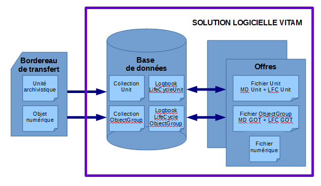
En d’autres termes, la solution logicielle Vitam stocke les archives ainsi :
dans la base de données MongoDB :
les métadonnées des groupes d’objets techniques dans la collection « ObjectGroup »,
les enregistrements du journal du cycle de vie associé à chaque groupe d’objets techniques dans la collection « LogbookLifeCycleObjectGroup »,
les métadonnées des unités archivistiques dans la collection « Unit »,
les enregistrements du journal du cycle de vie associé à chaque unité archivistique dans la collection « LogbookLifeCycleUnit » ;
sur les offres de stockage :
les données relatives au groupe d’objets techniques et à sa journalisation sous la forme d’un fichier JSON,
les fichiers numériques ;
les données relatives à l’unité archivistique et à sa journalisation sous la forme d’un fichier JSON.
MongoDB |
Offre de stockage |
|
|---|---|---|
Métadonnées décrivant une unité archivistique |
Collections : |
Fichier JSON incluant : |
Métadonnées décrivant un groupe d’objets techniques |
Collections : |
Fichier JSON incluant : |
Fichier numérique |
Fichier numérique |
17.4.3.1.2. Cycle de vie des archives stockées
Les unités archivistiques, ainsi que les groupes d’objets techniques peuvent faire l’objet de traitements dans la solution logicielle Vitam. Il peut s’agir des traitements suivants :
pour une unité archivistique :
mise à jour unitaire ou en masse de ses métadonnées,
reclassement,
ajout et/ou suppression d’unités archivistiques associées à une unité archivistique, ainsi que ajout et/ou suppression de groupes d’objets associés à une unité archivistique,
élimination,
audit correctif rétablissant une unité archivistique absente d’une offre de stockage ;
ajout de métadonnées extraites d’un fichier numérique (service non implémenté) ;
pour un groupe d’objets techniques :
opération de préservation pouvant entraîner :
une génération d’un nouveau fichier numérique sur l’offre de stockage et d’une mise à jour du groupe d’objets techniques dans la base de données Mongo DB,
une réidentification de format qui modifie le groupe d’objets techniques dans la base de données Mongo DB,
une extraction de métadonnées techniques qui modifie également le groupe d’objets techniques dans la base de données Mongo DB ;
audit correctif rétablissant un fichier numérique sur l’offre de stockage ou un groupe d’objets techniques absent d’une offre de stockage. Dès qu’un groupe d’objets techniques et/ou une unité archivistique fait l’objet d’une de ces actions, qui sont journalisées, aussi bien son enregistrement dans la base de données et celui de son journal du cycle de vie correspondant que le fichier correspondant stocké sur les offres de stockage sont mis à jour pour prendre en compte le résultat de la dernière action.
Les conséquences sont les suivantes :
17.4.3.1.2.1. Unité archivistique enregistrée dans la base de données Mongo DB
{
"_id": "aeaqaaaaaehnbxf7abrfyalmxbmg7zyaaaea",
"_og": "aebaaaaaaehnbxf7abrfyalmxbmg6eaaaabq",
"_mgt": {},
"DescriptionLevel": "Item",
"Title": "ID709.doc",
"_sedaVersion": "2.1",
"_implementationVersion": "2.12.0-SNAPSHOT",
"_storage": {
"_nbc": 2,
"offerIds": [
"offer-fs-1.service.int.consul",
"offer-fs-2.service.int.consul"
],
"strategyId": "default"
},
"_sps": [
"Service_producteur"
],
"_sp": "Service_producteur",
"_ops": [
"aeeaaaaaaghnjq2naaf52almxbmfsoiaaaaq"
],
[ … ]
"_min": 1,
"_max": 3,
"_glpd": "2019-08-22T08:02:34.622",
"_v": 0,
"_av": 0,
"_tenant": 1
}
```json
**Conséquences :**
```json
{
"_id": "aeaqaaaaaehnbxf7abrfyalmxbmg7zyaaaea",
"_og": "aebaaaaaaehnbxf7abrfyalmxbmg6eaaaabq",
"_mgt": {},
"DescriptionLevel": "Item",
"Title": "ID709.doc",
"_sedaVersion": "2.1",
"_implementationVersion": "2.12.0-SNAPSHOT",
"_storage": {
"_nbc": 2,
"offerIds": [
"offer-fs-1.service.int.consul",
"offer-fs-2.service.int.consul"
],
"strategyId": "default"
},
"_sps": [
"Service_producteur"
],
"_sp": "Service_producteur",
"_ops": [
"aeeaaaaaaghnjq2naaf52almxbmfsoiaaaaq",
"aeeaaaaaaghnjq2nab3jaalmxbn52laaaaaq"
],
[ … ]
"_min": 1,
"_max": 3,
"_glpd": "2019-08-22T08:02:34.622",
"_v": 1,
"_av": 1,
"_tenant": 1,
"Description": "Je rajoute une description"
}
Suite à une mise à jour de ses métadonnées, l’unité archivistique enregistrée dans la base de données Mongo DB contient : une description supplémentaire (« Description »), une opération supplémentaire correspondant à l’identifiant de l’opération de mise à jour (« _ops »), et sa version a été mise à jour (« _v »).
17.4.3.1.2.2. Journal du cycle de vie d’une unité archivistique enregistré dans la base de données Mongo DB
{
"_id": "aeaqaaaaaehnbxf7abrfyalmxbmg7yqaaabq",
"evId": "aedqaaaaaghnbxf7abrfyalmxbmhsoqaaaaq",
"evParentId": null,
"evType": "LFC.LFC_CREATION",
"evDateTime": "2019-08-22T08:01:41.690",
"evIdProc": "aeeaaaaaaghnjq2naaf52almxbmfsoiaaaaq",
"evTypeProc": "INGEST",
"outcome": "OK",
"outDetail": "LFC.LFC_CREATION.OK",
"outMessg": "Succès de l'alimentation du journal du cycle de vie",
"agId": "{\"Name\":\"vitam-env-int-worker-01.vitam-env\",\"Role\":\"worker\",\"ServerId\":1053875391,\"SiteId\":1,\"GlobalPlatformId\":248569023}",
"obId": "aeaqaaaaaehnbxf7abrfyalmxbmg7yqaaabq",
"evDetData": null,
"events": [
{
"evId": "aedqaaaaaghnbxf7abrfyalmxbmhsoqaaaba",
"evParentId": null,
"evType": "LFC.CHECK_MANIFEST",
"evDateTime": "2019-08-22T08:01:41.690",
"evIdProc": "aeeaaaaaaghnjq2naaf52almxbmfsoiaaaaq",
"evTypeProc": "INGEST",
"outcome": "OK",
"outDetail": "LFC.CHECK_MANIFEST.OK",
"outMessg": "Succès de la vérification de la cohérence du bordereau de transfert",
"agId": "{\"Name\":\"vitam-env-int-worker-01.vitam-env\",\"Role\":\"worker\",\"ServerId\":1053875391,\"SiteId\":1,\"GlobalPlatformId\":248569023}",
"obId": "aeaqaaaaaehnbxf7abrfyalmxbmg7yqaaabq",
"evDetData": "{ }",
"_lastPersistedDate": "2019-08-22T08:02:52.559"
},
[ … ]
{
"evId": "aedqaaaaaghcbxzoabqx6almxbmuzfqaaaeq",
"evParentId": null,
"evType": "LFC.UNIT_METADATA_INDEXATION",
"evDateTime": "2019-08-22T08:02:35.835",
"evIdProc": "aeeaaaaaaghnjq2naaf52almxbmfsoiaaaaq",
"evTypeProc": "INGEST",
"outcome": "OK",
"outDetail": "LFC.UNIT_METADATA_INDEXATION.OK",
"outMessg": "Succès de l'indexation des métadonnées de l'unité archivistique",
"agId": "{\"Name\":\"vitam-env-int-worker-02.vitam-env\",\"Role\":\"worker\",\"ServerId\":1042341678,\"SiteId\":1,\"GlobalPlatformId\":237035310}",
"obId": "aeaqaaaaaehnbxf7abrfyalmxbmg7yqaaabq",
"evDetData": "{}",
"_lastPersistedDate": "2019-08-22T08:02:52.559"
}
],
"_tenant": 1,
"_v": 5,
"_lastPersistedDate": "2019-08-22T08:02:52.559"
}
Conséquences :
{
"_id": "aeaqaaaaaehnbxf7abrfyalmxbmg7yqaaabq",
"evId": "aedqaaaaaghnbxf7abrfyalmxbmhsoqaaaaq",
"evParentId": null,
"evType": "LFC.LFC_CREATION",
"evDateTime": "2019-08-22T08:01:41.690",
"evIdProc": "aeeaaaaaaghnjq2naaf52almxbmfsoiaaaaq",
"evTypeProc": "INGEST",
"outcome": "OK",
"outDetail": "LFC.LFC_CREATION.OK",
"outMessg": "Succès de l'alimentation du journal du cycle de vie",
"agId": "{\"Name\":\"vitam-env-int-worker-01.vitam-env\",\"Role\":\"worker\",\"ServerId\":1053875391,\"SiteId\":1,\"GlobalPlatformId\":248569023}",
"obId": "aeaqaaaaaehnbxf7abrfyalmxbmg7yqaaabq",
"evDetData": null,
"events": [
{
"evId": "aedqaaaaaghnbxf7abrfyalmxbmhsoqaaaba",
"evParentId": null,
"evType": "LFC.CHECK_MANIFEST",
"evDateTime": "2019-08-22T08:01:41.690",
"evIdProc": "aeeaaaaaaghnjq2naaf52almxbmfsoiaaaaq",
"evTypeProc": "INGEST",
"outcome": "OK",
"outDetail": "LFC.CHECK_MANIFEST.OK",
"outMessg": "Succès de la vérification de la cohérence du bordereau de transfert",
"agId": "{\"Name\":\"vitam-env-int-worker-01.vitam-env\",\"Role\":\"worker\",\"ServerId\":1053875391,\"SiteId\":1,\"GlobalPlatformId\":248569023}",
"obId": "aeaqaaaaaehnbxf7abrfyalmxbmg7yqaaabq",
"evDetData": "{ }",
"_lastPersistedDate": "2019-08-22T08:02:52.559"
},
[ … ],
{
"evId": "aedqaaaaaghcbxzoabqx6almxbmuzfqaaaeq",
"evParentId": null,
"evType": "LFC.UNIT_METADATA_INDEXATION",
"evDateTime": "2019-08-22T08:02:35.835",
"evIdProc": "aeeaaaaaaghnjq2naaf52almxbmfsoiaaaaq",
"evTypeProc": "INGEST",
"outcome": "OK",
"outDetail": "LFC.UNIT_METADATA_INDEXATION.OK",
"outMessg": "Succès de l'indexation des métadonnées de l'unité archivistique",
"agId": "{\"Name\":\"vitam-env-int-worker-02.vitam-env\",\"Role\":\"worker\",\"ServerId\":1042341678,\"SiteId\":1,\"GlobalPlatformId\":237035310}",
"obId": "aeaqaaaaaehnbxf7abrfyalmxbmg7yqaaabq",
"evDetData": "{}",
"_lastPersistedDate": "2019-08-22T08:02:52.559"
},
{
"evId": "aedqaaaaaghiyxioaa2iualmxbuyrsyaaaaq",
"evParentId": null,
"evType": "LFC.UNIT_METADATA_UPDATE",
"evDateTime": "2019-08-22T08:20:19.787",
"evIdProc": "aeeaaaaaaghnjq2nab3jaalmxbuynlaaaaaq",
"evTypeProc": "UPDATE",
"outcome": "OK",
"outDetail": "LFC.UNIT_METADATA_UPDATE.OK",
"outMessg": "Succès de la mise à jour des métadonnées de l'unité archivistique",
"agId": "{\"Name\":\"vitam-env-int-internal-01.vitam-env\",\"Role\":\"access-internal\",\"ServerId\":1049386254,\"SiteId\":1,\"GlobalPlatformId\":244079886}",
"obId": "aeaqaaaaaehnbxf7abrfyalmxbmg7yqaaabq",
"evDetData": "{\n \"diff\" : \"- \\\"_ops\\\" : [ \\\"aeeaaaaaaghnjq2naaf52almxbmfsoiaaaaq\\\" ]\\n+ \\\"_ops\\\" : [ \\\"aeeaaaaaaghnjq2naaf52almxbmfsoiaaaaq\\\", \\\"aeeaaaaaaghnjq2nab3jaalmxbuynlaaaaaq\\\" ]\\n- \\\"_glpd\\\" : \\\"2019-08-22T08:02:34.630\\\"\\n- \\\"_v\\\" : 0\\n- \\\"_av\\\" : 0\\n+ \\\"_glpd\\\" : \\\"2019-08-22T08:02:34.63\\\"\\n+ \\\"_v\\\" : 1\\n+ \\\"_av\\\" : 1\\n+ \\\"Description\\\" : \\\"J'ai ajout\\\\u00E9 une description\\\"\"\n}",
"_lastPersistedDate": "2019-08-22T08:20:19.790"
}
],
"_tenant": 1,
"_v": 6,
"_lastPersistedDate": "2019-08-22T08:20:19.790"
}
À la suite d’une action sur une unité archivistique, son journal de cycle de vie se voit ajouter un à plusieurs événements supplémentaires. Sa version est mise à jour (« _v »).
17.4.3.1.2.3. Fichier JSON correspondant à l’unité archivistique et à son journal du cycle de vie dans l’offre de stockage
{
"lfc":
{"_id":"aeaqaaaaaehnbxf7abrfyalmxbmg7uaaaaaq","_lastPersistedDate":"2019-08-22T08:02:56.275","_tenant":1,"_v":5,"agId":"{\"Name\":\"vitam-env-int-worker-01.vitam-env\",\"Role\":\"worker\",\"ServerId\":1053875391,\"SiteId\":1,\"GlobalPlatformId\":248569023}","evDateTime":"2019-08-22T08:01:41.007","evDetData":null,"evId":"aedqaaaaaghnbxf7abrfyalmxbmhndyaaabq","evIdProc":"aeeaaaaaaghnjq2naaf52almxbmfsoiaaaaq","evParentId":null,"evType":"LFC.LFC_CREATION","evTypeProc":"INGEST","events":[{"_lastPersistedDate":"2019-08-22T08:02:56.275","agId":"{\"Name\":\"vitam-env-int-worker-01.vitam-env\",\"Role\":\"worker\",\"ServerId\":1053875391,\"SiteId\":1,\"GlobalPlatformId\":248569023}","evDateTime":"2019-08-22T08:01:41.007","evDetData":"{ }","evId":"aedqaaaaaghnbxf7abrfyalmxbmhndyaaaca","evIdProc":"aeeaaaaaaghnjq2naaf52almxbmfsoiaaaaq","evParentId":null,"evType":"LFC.CHECK_MANIFEST","evTypeProc":"INGEST","obId":"aeaqaaaaaehnbxf7abrfyalmxbmg7uaaaaaq","outDetail":"LFC.CHECK_MANIFEST.OK","outMessg":"Succ\u00e8s de la v\u00e9rification de la coh\u00e9rence du bordereau de transfert","outcome":"OK"},
[ … ]
{"_lastPersistedDate":"2019-08-22T08:02:56.275","agId":"{\"Name\":\"vitam-env-int-worker-02.vitam-env\",\"Role\":\"worker\",\"ServerId\":1042341678,\"SiteId\":1,\"GlobalPlatformId\":237035310}","evDateTime":"2019-08-22T08:02:35.835","evDetData":"{}","evId":"aedqaaaaaghcbxzoabqx6almxbmuzhqaaahq","evIdProc":"aeeaaaaaaghnjq2naaf52almxbmfsoiaaaaq","evParentId":null,"evType":"LFC.UNIT_METADATA_INDEXATION","evTypeProc":"INGEST","obId":"aeaqaaaaaehnbxf7abrfyalmxbmg7uaaaaaq","outDetail":"LFC.UNIT_METADATA_INDEXATION.OK","outMessg":"Succ\u00e8s de l'indexation des m\u00e9tadonn\u00e9es de l'unit\u00e9 archivistique","outcome":"OK"}],"obId":"aeaqaaaaaehnbxf7abrfyalmxbmg7uaaaaaq","outDetail":"LFC.LFC_CREATION.OK","outMessg":"Succ\u00e8s de l'alimentation du journal du cycle de vie","outcome":"OK"
},
"unit":{"DescriptionLevel":"Item","Title":"ID153.doc","_id":"aeaqaaaaaehnbxf7abrfyalmxbmg7uaaaaaq","_implementationVersion":"2.12.0-SNAPSHOT","_mgt":{},"_og":"aebaaaaaaehnbxf7abrfyalmxbmg6waaaaaq","_opi":"aeeaaaaaaghnjq2naaf52almxbmfsoiaaaaq","_ops":["aeeaaaaaaghnjq2naaf52almxbmfsoiaaaaq"],"_sedaVersion":"2.1","_sp":"Service_producteur","_storage":{"_nbc":2,"offerIds":["offer-fs-1.service.int.consul","offer-fs-2.service.int.consul"],"strategyId":"default"},"_tenant":1,"_unitType":"INGEST","_up":["aeaqaaaaaehnbxf7abrfyalmxbmg74aaaaga"],"_v":0}
}
Conséquences :
{
"lfc":
{"_id":"aeaqaaaaaehnbxf7abrfyalmxbmg7uaaaaaq","_lastPersistedDate":"2019-08-22T08:39:44.331","_tenant":1,"_v":6,"agId":"{\"Name\":\"vitam-env-int-worker-01.vitam-env\",\"Role\":\"worker\",\"ServerId\":1053875391,\"SiteId\":1,\"GlobalPlatformId\":248569023}","evDateTime":"2019-08-22T08:01:41.007","evDetData":null,"evId":"aedqaaaaaghnbxf7abrfyalmxbmhndyaaabq","evIdProc":"aeeaaaaaaghnjq2naaf52almxbmfsoiaaaaq","evParentId":null,"evType":"LFC.LFC_CREATION","evTypeProc":"INGEST","events":[{"_lastPersistedDate":"2019-08-22T08:02:56.275","agId":"{\"Name\":\"vitam-env-int-worker-01.vitam-env\",\"Role\":\"worker\",\"ServerId\":1053875391,\"SiteId\":1,\"GlobalPlatformId\":248569023}","evDateTime":"2019-08-22T08:01:41.007","evDetData":"{ }","evId":"aedqaaaaaghnbxf7abrfyalmxbmhndyaaaca","evIdProc":"aeeaaaaaaghnjq2naaf52almxbmfsoiaaaaq","evParentId":null,"evType":"LFC.CHECK_MANIFEST","evTypeProc":"INGEST","obId":"aeaqaaaaaehnbxf7abrfyalmxbmg7uaaaaaq","outDetail":"LFC.CHECK_MANIFEST.OK","outMessg":"Succ\u00e8s de la v\u00e9rification de la coh\u00e9rence du bordereau de transfert","outcome":"OK"},
[ … ]
{"_lastPersistedDate":"2019-08-22T08:02:56.275","agId":"{\"Name\":\"vitam-env-int-worker-02.vitam-env\",\"Role\":\"worker\",\"ServerId\":1042341678,\"SiteId\":1,\"GlobalPlatformId\":237035310}","evDateTime":"2019-08-22T08:02:35.835","evDetData":"{}","evId":"aedqaaaaaghcbxzoabqx6almxbmuzhqaaahq","evIdProc":"aeeaaaaaaghnjq2naaf52almxbmfsoiaaaaq","evParentId":null,"evType":"LFC.UNIT_METADATA_INDEXATION","evTypeProc":"INGEST","obId":"aeaqaaaaaehnbxf7abrfyalmxbmg7uaaaaaq","outDetail":"LFC.UNIT_METADATA_INDEXATION.OK","outMessg":"Succ\u00e8s de l'indexation des m\u00e9tadonn\u00e9es de l'unit\u00e9 archivistique","outcome":"OK"},{"_lastPersistedDate":"2019-08-22T08:39:44.331","agId":"{\"Name\":\"vitam-env-int-internal-01.vitam-env\",\"Role\":\"access-internal\",\"ServerId\":1049386254,\"SiteId\":1,\"GlobalPlatformId\":244079886}","evDateTime":"2019-08-22T08:39:44.329","evDetData":"{\n \"diff\" : \"- \\\"_ops\\\" : [ \\\"aeeaaaaaaghnjq2naaf52almxbmfsoiaaaaq\\\" ]\\n+ \\\"_ops\\\" : [ \\\"aeeaaaaaaghnjq2naaf52almxbmfsoiaaaaq\\\", \\\"aeeaaaaaaghnjq2nab3jaalmxb5uwmiaaaaq\\\" ]\\n- \\\"_v\\\" : 0\\n- \\\"_av\\\" : 0\\n+ \\\"_v\\\" : 1\\n+ \\\"_av\\\" : 1\\n+ \\\"Description\\\" : \\\"J'ajoute une description\\\"\"\n}","evId":"aedqaaaaaghiyxioaa2iualmxb5u3siaaaaq","evIdProc":"aeeaaaaaaghnjq2nab3jaalmxb5uwmiaaaaq","evParentId":null,"evType":"LFC.UNIT_METADATA_UPDATE","evTypeProc":"UPDATE","obId":"aeaqaaaaaehnbxf7abrfyalmxbmg7uaaaaaq","outDetail":"LFC.UNIT_METADATA_UPDATE.OK","outMessg":"Succ\u00e8s de la mise \u00e0 jour des m\u00e9tadonn\u00e9es de l'unit\u00e9 archivistique","outcome":"OK"}],"obId":"aeaqaaaaaehnbxf7abrfyalmxbmg7uaaaaaq","outDetail":"LFC.LFC_CREATION.OK","outMessg":"Succ\u00e8s de l'alimentation du journal du cycle de vie","outcome":"OK"
},
"unit":
{"Description":"J'ajoute une description","DescriptionLevel":"Item","Title":"ID153.doc","_id":"aeaqaaaaaehnbxf7abrfyalmxbmg7uaaaaaq","_implementationVersion":"2.12.0-SNAPSHOT","_mgt":{},"_og":"aebaaaaaaehnbxf7abrfyalmxbmg6waaaaaq","_opi":"aeeaaaaaaghnjq2naaf52almxbmfsoiaaaaq","_ops":["aeeaaaaaaghnjq2naaf52almxbmfsoiaaaaq","aeeaaaaaaghnjq2nab3jaalmxb5uwmiaaaaq"],"_sedaVersion":"2.1","_sp":"Service_producteur","_storage":{"_nbc":2,"offerIds":["offer-fs-1.service.int.consul","offer-fs-2.service.int.consul"],"strategyId":"default"},"_tenant":1,"_unitType":"INGEST","_up":["aeaqaaaaaehnbxf7abrfyalmxbmg74aaaaga"],"_v":1}
}
Le fichier JSON enregistré dans l’offre de stockage reprend l’ensemble des mises à jour effectuées aussi bien dans l’unité archivistique que dans son journal de cycle de vie.
17.4.3.1.2.4. Groupe d’objets techniques enregistrés dans la base de données Mongo DB
{
"_id": "aebaaaaaaehnbxf7abrfyalmxbmg55aaaaaq",
"_tenant": 1,
"_profil": "",
"FileInfo": {},
"_qualifiers": [
{
"qualifier": "BinaryMaster",
"_nbc": 1,
"versions": [
{
"_id": "aeaaaaaaaahnbxf7abrfyalmxbmg54yaaaca",
"DataObjectGroupId": "aebaaaaaaehnbxf7abrfyalmxbmg55aaaaaq",
"DataObjectVersion": "BinaryMaster_1",
"FormatIdentification": {
"FormatLitteral": "Microsoft Word Document",
"MimeType": "application/msword",
"FormatId": "fmt/40"
},
"FileInfo": {
"Filename": "ID37.doc",
"LastModified": "2018-02-09T13:05:50Z"
},
"_opi": "aeeaaaaaaghnjq2naaf52almxbmfsoiaaaaq",
"Size": 35840,
"Uri": "content/ID206.doc",
"MessageDigest": "daecba36cff7d20d36b05a76f30831b4e512a6b2454281ceacd99811d0d3736beebeb27efa24c4f4baf475b75c2dac9b7364d75de5bdd6728758774b0b99b1d0",
"Algorithm": "SHA-512",
"_storage": {
"_nbc": 2,
"offerIds": [
"offer-fs-1.service.int.consul",
"offer-fs-2.service.int.consul"
],
"strategyId": "default"
}
}
]
}
],
"_up": [
"aeaqaaaaaehnbxf7abrfyalmxbmg7yaaaaba"
],
"_nbc": 1,
"_ops": [
"aeeaaaaaaghnjq2naaf52almxbmfsoiaaaaq"
],
"_opi": "aeeaaaaaaghnjq2naaf52almxbmfsoiaaaaq",
"_sp": "Service_producteur",
"_sps": [
"Service_producteur"
],
"_storage": {
"_nbc": 2,
"offerIds": [
"offer-fs-1.service.int.consul",
"offer-fs-2.service.int.consul"
],
"strategyId": "default"
},
"_v": 1,
"_av": 1,
"_glpd": "2019-08-22T08:02:35.080",
"_us": [
"aeaqaaaaaehnbxf7abrfyalmxbmhaoyaaaba",
"aeaqaaaaaehnbxf7abrfyalmxbmg7yaaaaba",
"aeaqaaaaaehnbxf7abrfyalmxbmg74aaaaga"
]
}
Conséquences :
{
"_id": "aebaaaaaaehnbxf7abrfyalmxbmg55aaaaaq",
"_tenant": 1,
"_profil": "",
"FileInfo": {},
"_qualifiers": [
{
"qualifier": "BinaryMaster",
"_nbc": 1,
"versions": [
{
"_id": "aeaaaaaaaahnbxf7abrfyalmxbmg54yaaaca",
"DataObjectVersion": "BinaryMaster_1",
"DataObjectGroupId": "aebaaaaaaehnbxf7abrfyalmxbmg55aaaaaq",
"FormatIdentification": {
"FormatLitteral": "Microsoft Word Document",
"MimeType": "application/msword",
"FormatId": "fmt/40"
},
"FileInfo": {
"Filename": "ID37.doc",
"LastModified": "2018-02-09T13:05:50"
},
"Size": 35840,
"Uri": "content/ID206.doc",
"MessageDigest": "daecba36cff7d20d36b05a76f30831b4e512a6b2454281ceacd99811d0d3736beebeb27efa24c4f4baf475b75c2dac9b7364d75de5bdd6728758774b0b99b1d0",
"Algorithm": "SHA-512",
"_storage": {
"strategyId": "default",
"_nbc": 2,
"offerIds": [
"offer-fs-1.service.int.consul",
"offer-fs-2.service.int.consul"
]
},
"_opi": "aeeaaaaaaghnjq2naaf52almxbmfsoiaaaaq"
}
]
},
{
"qualifier": "Dissemination",
"_nbc": 1,
"versions": [
{
"_id": "aeaaaaaaaahcbxzoabqx6almxekfxfaaaaaq",
"DataObjectVersion": "Dissemination_1",
"DataObjectGroupId": "aebaaaaaaehnbxf7abrfyalmxbmg55aaaaaq",
"FormatIdentification": {
"FormatLitteral": "Acrobat PDF/A - Portable Document Format",
"MimeType": "application/pdf",
"FormatId": "fmt/95"
},
"FileInfo": {
"Filename": "aeaaaaaaaahnbxf7abrfyalmxbmg54yaaaca.pdf",
"LastModified": "2019-08-22T11:26:55.043"
},
"Size": 69065,
"MessageDigest": "2615f8f4ccf4f3572a7a2f992be954bbc2c57cba59bb765232b8c9cce4ff5646c41e09e8f7c2e5048e19089f1a66bb02907cb141275aea65189251fa944d4e1d",
"Algorithm": "SHA-512",
"_storage": {
"strategyId": "default",
"_nbc": 2,
"offerIds": [
"offer-fs-1.service.int.consul",
"offer-fs-2.service.int.consul"
]
},
"_opi": "aeeaaaaaaghnjq2nab3jaalmxekes4iaaaaq"
}
]
}
],
"_up": [
"aeaqaaaaaehnbxf7abrfyalmxbmg7yaaaaba"
],
"_nbc": 2,
"_ops": [
"aeeaaaaaaghnjq2naaf52almxbmfsoiaaaaq",
"aeeaaaaaaghnjq2nab3jaalmxekes4iaaaaq"
],
"_opi": "aeeaaaaaaghnjq2naaf52almxbmfsoiaaaaq",
"_sp": "Service_producteur",
"_sps": [
"Service_producteur"
],
"_storage": {
"_nbc": 2,
"offerIds": [
"offer-fs-1.service.int.consul",
"offer-fs-2.service.int.consul"
],
"strategyId": "default"
},
"_v": 2,
"_av": 2,
"_glpd": "2019-08-22T08:02:35.08",
"_us": [
"aeaqaaaaaehnbxf7abrfyalmxbmhaoyaaaba",
"aeaqaaaaaehnbxf7abrfyalmxbmg7yaaaaba",
"aeaqaaaaaehnbxf7abrfyalmxbmg74aaaaga"
]
}
Suite à une génération de nouveau binaire, le groupe d’objets techniques enregistré dans la base de données Mongo DB contient : un objet décrit supplémentaire, une opération supplémentaire correspondant à l’identifiant de l’opération de mise à jour (« _ops »), et sa version a été mise à jour (« _v »).
17.4.3.1.2.5. Journal du cycle de vie d’un groupe d’objets techniques enregistré dans la base de données Mongo DB
{
"_id": "aebaaaaaaehnbxf7abrfyalmxbmg55aaaaaq",
"evId": "aedqaaaaaghnbxf7abrfyalmxbmhewyaaadq",
"evParentId": null,
"evType": "LFC.LFC_CREATION",
"evDateTime": "2019-08-22T08:01:39.931",
"evIdProc": "aeeaaaaaaghnjq2naaf52almxbmfsoiaaaaq",
"evTypeProc": "INGEST",
"outcome": "OK",
"outDetail": "LFC.LFC_CREATION.OK",
"outMessg": "Succès de l'alimentation du journal du cycle de vie",
"agId": "{\"Name\":\"vitam-env-int-worker-01.vitam-env\",\"Role\":\"worker\",\"ServerId\":1053875391,\"SiteId\":1,\"GlobalPlatformId\":248569023}",
"obId": "aebaaaaaaehnbxf7abrfyalmxbmg55aaaaaq",
"evDetData": null,
"events": [
{
"evId": "aedqaaaaaghnbxf7abrfyalmxbmhewyaaaea",
"evParentId": null,
"evType": "LFC.CHECK_MANIFEST",
"evDateTime": "2019-08-22T08:01:39.931",
"evIdProc": "aeeaaaaaaghnjq2naaf52almxbmfsoiaaaaq",
"evTypeProc": "INGEST",
"outcome": "OK",
"outDetail": "LFC.CHECK_MANIFEST.OK",
"outMessg": "Succès de la vérification de la cohérence du bordereau de transfert",
"agId": "{\"Name\":\"vitam-env-int-worker-01.vitam-env\",\"Role\":\"worker\",\"ServerId\":1053875391,\"SiteId\":1,\"GlobalPlatformId\":248569023}",
"obId": "aebaaaaaaehnbxf7abrfyalmxbmg55aaaaaq",
"evDetData": null,
"_lastPersistedDate": "2019-08-22T08:02:44.155"
},
[ … ]
{
"evId": "aedqaaaaaghcbxzoabqx6almxbmsz7aaaaea",
"evParentId": null,
"evType": "LFC.OG_METADATA_INDEXATION",
"evDateTime": "2019-08-22T08:02:27.795",
"evIdProc": "aeeaaaaaaghnjq2naaf52almxbmfsoiaaaaq",
"evTypeProc": "INGEST",
"outcome": "OK",
"outDetail": "LFC.OG_METADATA_INDEXATION.OK",
"outMessg": "Succès de l'indexation des métadonnées du groupe d'objets",
"agId": "{\"Name\":\"vitam-env-int-worker-02.vitam-env\",\"Role\":\"worker\",\"ServerId\":1042341678,\"SiteId\":1,\"GlobalPlatformId\":237035310}",
"obId": "aebaaaaaaehnbxf7abrfyalmxbmg55aaaaaq",
"evDetData": "{}",
"_lastPersistedDate": "2019-08-22T08:02:44.155"
}
],
"_tenant": 1,
"_v": 5,
"_lastPersistedDate": "2019-08-22T08:02:44.155"
}
Conséquences :
{
"_id": "aebaaaaaaehnbxf7abrfyalmxbmg7jyaaabq",
"evId": "aedqaaaaaghnbxf7abrfyalmxbmhh3yaaadq",
"evParentId": null,
"evType": "LFC.LFC_CREATION",
"evDateTime": "2019-08-22T08:01:40.335",
"evIdProc": "aeeaaaaaaghnjq2naaf52almxbmfsoiaaaaq",
"evTypeProc": "INGEST",
"outcome": "OK",
"outDetail": "LFC.LFC_CREATION.OK",
"outMessg": "Succès de l'alimentation du journal du cycle de vie",
"agId": "{\"Name\":\"vitam-env-int-worker-01.vitam-env\",\"Role\":\"worker\",\"ServerId\":1053875391,\"SiteId\":1,\"GlobalPlatformId\":248569023}",
"obId": "aebaaaaaaehnbxf7abrfyalmxbmg7jyaaabq",
"evDetData": null,
"events": [
{
"evId": "aedqaaaaaghnbxf7abrfyalmxbmhh3yaaaea",
"evParentId": null,
"evType": "LFC.CHECK_MANIFEST",
"evDateTime": "2019-08-22T08:01:40.335",
"evIdProc": "aeeaaaaaaghnjq2naaf52almxbmfsoiaaaaq",
"evTypeProc": "INGEST",
"outcome": "OK",
"outDetail": "LFC.CHECK_MANIFEST.OK",
"outMessg": "Succès de la vérification de la cohérence du bordereau de transfert",
"agId": "{\"Name\":\"vitam-env-int-worker-01.vitam-env\",\"Role\":\"worker\",\"ServerId\":1053875391,\"SiteId\":1,\"GlobalPlatformId\":248569023}",
"obId": "aebaaaaaaehnbxf7abrfyalmxbmg7jyaaabq",
"evDetData": null,
"_lastPersistedDate": "2019-08-22T08:02:36.716"
},
[ … ]
{
"evId": "aedqaaaaaghcbxzoabqx6almxbms2hiaaaea",
"evParentId": null,
"evType": "LFC.OG_METADATA_INDEXATION",
"evDateTime": "2019-08-22T08:02:27.796",
"evIdProc": "aeeaaaaaaghnjq2naaf52almxbmfsoiaaaaq",
"evTypeProc": "INGEST",
"outcome": "OK",
"outDetail": "LFC.OG_METADATA_INDEXATION.OK",
"outMessg": "Succès de l'indexation des métadonnées du groupe d'objets",
"agId": "{\"Name\":\"vitam-env-int-worker-02.vitam-env\",\"Role\":\"worker\",\"ServerId\":1042341678,\"SiteId\":1,\"GlobalPlatformId\":237035310}",
"obId": "aebaaaaaaehnbxf7abrfyalmxbmg7jyaaabq",
"evDetData": "{}",
"_lastPersistedDate": "2019-08-22T08:02:36.716"
},
{
"evId": "aedqaaaaaghcbxzoabqx6almxeio6viaaaba",
"evParentId": "aedqaaaaaghcbxzoabqx6almxeio6viaaaaq",
"evType": "LFC.PRESERVATION_SIEGFRIED_IDENTIFICATION.FILE_FORMAT",
"evDateTime": "2019-08-22T11:23:10.850",
"evIdProc": "aeeaaaaaaghnjq2nab3jaalmxeinuhaaaaaq",
"evTypeProc": "PRESERVATION",
"outcome": "OK",
"outDetail": "LFC.PRESERVATION_SIEGFRIED_IDENTIFICATION.FILE_FORMAT.OK",
"outMessg": "Format de l'objet identifié, référencé dans le référentiel interne et le résultat de l'outil d'identification des formats.",
"agId": "{\"Name\":\"vitam-env-int-worker-02.vitam-env\",\"Role\":\"worker\",\"ServerId\":1042341678,\"SiteId\":1,\"GlobalPlatformId\":237035310}",
"obId": "aeaaaaaaaahcbxzoabqx6almxeio6eaaaaaq",
"evDetData": "{\"Event\":\"{\\\"FormatLiteral\\\":\\\"Acrobat PDF/A - Portable Document Format\\\",\\\"Mimetype\\\":\\\"application/pdf\\\",\\\"Puid\\\":\\\"fmt/95\\\",\\\"MatchedNamespace\\\":\\\"pronom\\\"}\"}",
"_lastPersistedDate": "2019-08-22T11:23:10.850"
},
[ … ]
{
"evId": "aedqaaaaaghcbxzoabqx6almxeipa6iaaaaq",
"evParentId": null,
"evType": "LFC.PRESERVATION_INDEXATION_METADATA",
"evDateTime": "2019-08-22T11:23:10.850",
"evIdProc": "aeeaaaaaaghnjq2nab3jaalmxeinuhaaaaaq",
"evTypeProc": "PRESERVATION",
"outcome": "OK",
"outDetail": "LFC.PRESERVATION_INDEXATION_METADATA.OK",
"outMessg": "Succès de l'indexation des métadonnées du groupe d'objets",
"agId": "{\"Name\":\"vitam-env-int-worker-02.vitam-env\",\"Role\":\"worker\",\"ServerId\":1042341678,\"SiteId\":1,\"GlobalPlatformId\":237035310}",
"obId": "aebaaaaaaehnbxf7abrfyalmxbmg7jyaaabq",
"evDetData": "{\"diff\":[]}",
"_lastPersistedDate": "2019-08-22T11:23:10.850"
}
],
"_tenant": 1,
"_v": 9,
"_lastPersistedDate": "2019-08-22T11:23:10.850"
}
À la suite d’une action sur groupe d’objets techniques, son journal de cycle de vie se voit ajouter un à plusieurs événements supplémentaires. Sa version est mise à jour (« _v »).
17.4.3.1.2.6. Fichier JSON correspondant au groupe d’objets techniques et à son journal du cycle de vie dans l’offre de stockage
{"got":
{"FileInfo":{},"_id":"aebaaaaaaehnbxf7abrfyalmxbmg55aaaaaq","_nbc":1,"_opi":"aeeaaaaaaghnjq2naaf52almxbmfsoiaaaaq","_ops":["aeeaaaaaaghnjq2naaf52almxbmfsoiaaaaq"],"_profil":"","_qualifiers":[{"_nbc":1,"qualifier":"BinaryMaster","versions":[
{"Algorithm":"SHA-512","DataObjectGroupId":"aebaaaaaaehnbxf7abrfyalmxbmg55aaaaaq","DataObjectVersion":"BinaryMaster_1","FileInfo":{"Filename":"ID37.doc","LastModified":"2018-02-09T13:05:50Z"},"FormatIdentification":{"FormatId":"fmt/40","FormatLitteral":"Microsoft Word Document","MimeType":"application/msword"},"MessageDigest":"daecba36cff7d20d36b05a76f30831b4e512a6b2454281ceacd99811d0d3736beebeb27efa24c4f4baf475b75c2dac9b7364d75de5bdd6728758774b0b99b1d0","Size":35840,"Uri":"content/ID206.doc","_id":"aeaaaaaaaahnbxf7abrfyalmxbmg54yaaaca","_opi":"aeeaaaaaaghnjq2naaf52almxbmfsoiaaaaq","_storage":{"_nbc":2,"offerIds":["offer-fs-1.service.int.consul","offer-fs-2.service.int.consul"],"strategyId":"default"}}]}],"_sp":"Service_producteur","_storage":{"_nbc":2,"offerIds":["offer-fs-1.service.int.consul","offer-fs-2.service.int.consul"],"strategyId":"default"},"_tenant":1,"_up":["aeaqaaaaaehnbxf7abrfyalmxbmg7yaaaaba"],"_v":1
},
"lfc":{
"_id":"aebaaaaaaehnbxf7abrfyalmxbmg55aaaaaq","_lastPersistedDate":"2019-08-22T08:02:44.155","_tenant":1,"_v":5,"agId":"{\"Name\":\"vitam-env-int-worker-01.vitam-env\",\"Role\":\"worker\",\"ServerId\":1053875391,\"SiteId\":1,\"GlobalPlatformId\":248569023}","evDateTime":"2019-08-22T08:01:39.931","evDetData":null,"evId":"aedqaaaaaghnbxf7abrfyalmxbmhewyaaadq","evIdProc":"aeeaaaaaaghnjq2naaf52almxbmfsoiaaaaq","evParentId":null,"evType":"LFC.LFC_CREATION","evTypeProc":"INGEST","events":[{"_lastPersistedDate":"2019-08-22T08:02:44.155","agId":"{\"Name\":\"vitam-env-int-worker-01.vitam-env\",\"Role\":\"worker\",\"ServerId\":1053875391,\"SiteId\":1,\"GlobalPlatformId\":248569023}","evDateTime":"2019-08-22T08:01:39.931","evDetData":null,"evId":"aedqaaaaaghnbxf7abrfyalmxbmhewyaaaea","evIdProc":"aeeaaaaaaghnjq2naaf52almxbmfsoiaaaaq","evParentId":null,"evType":"LFC.CHECK_MANIFEST","evTypeProc":"INGEST","obId":"aebaaaaaaehnbxf7abrfyalmxbmg55aaaaaq","outDetail":"LFC.CHECK_MANIFEST.OK","outMessg":"Succ\u00e8s de la v\u00e9rification de la coh\u00e9rence du bordereau de transfert","outcome":"OK"},
[ … ]
{"_lastPersistedDate":"2019-08-22T08:02:44.155","agId":"{\"Name\":\"vitam-env-int-worker-02.vitam-env\",\"Role\":\"worker\",\"ServerId\":1042341678,\"SiteId\":1,\"GlobalPlatformId\":237035310}","evDateTime":"2019-08-22T08:02:27.795","evDetData":"{}","evId":"aedqaaaaaghcbxzoabqx6almxbmsz7aaaaea","evIdProc":"aeeaaaaaaghnjq2naaf52almxbmfsoiaaaaq","evParentId":null,"evType":"LFC.OG_METADATA_INDEXATION","evTypeProc":"INGEST","obId":"aebaaaaaaehnbxf7abrfyalmxbmg55aaaaaq","outDetail":"LFC.OG_METADATA_INDEXATION.OK","outMessg":"Succ\u00e8s de l'indexation des m\u00e9tadonn\u00e9es du groupe d'objets","outcome":"OK"}],"obId":"aebaaaaaaehnbxf7abrfyalmxbmg55aaaaaq","outDetail":"LFC.LFC_CREATION.OK","outMessg":"Succ\u00e8s de l'alimentation du journal du cycle de vie","outcome":"OK"}}
Conséquences :
{"got":
{"FileInfo":{},"_id":"aebaaaaaaehnbxf7abrfyalmxbmg7jyaaabq","_nbc":2,"_opi":"aeeaaaaaaghnjq2naaf52almxbmfsoiaaaaq","_ops":["aeeaaaaaaghnjq2naaf52almxbmfsoiaaaaq","aeeaaaaaaghnjq2nab3jaalmxeinuhaaaaaq"],"_profil":"","_qualifiers":[{"_nbc":2,"qualifier":"BinaryMaster","versions":[
{"Algorithm":"SHA-512","DataObjectGroupId":"aebaaaaaaehnbxf7abrfyalmxbmg7jyaaabq","DataObjectVersion":"BinaryMaster_1","FileInfo":{"Filename":"ID205.doc","LastModified":"2018-02-09T13:05:50"},"FormatIdentification":{"FormatId":"fmt/40","FormatLitteral":"Microsoft Word Document","MimeType":"application/msword"},"MessageDigest":"d4dc38f6c452ce1504c98600b25f9dfba2b892b03b3a2103f22e5b4ae500195ebfd28916ce781f6ab68454b0631e15c89ecc64036bfa5673e325cfc76a47be0a","Size":51712,"Uri":"content/ID95.doc","_id":"aeaaaaaaaahnbxf7abrfyalmxbmg7jyaaaba","_opi":"aeeaaaaaaghnjq2naaf52almxbmfsoiaaaaq","_storage":{"_nbc":2,"offerIds":["offer-fs-1.service.int.consul","offer-fs-2.service.int.consul"],"strategyId":"default"}},
{"Algorithm":"SHA-512","DataObjectGroupId":"aebaaaaaaehnbxf7abrfyalmxbmg7jyaaabq","DataObjectVersion":"BinaryMaster_2","FileInfo":{"Filename":"aeaaaaaaaahnbxf7abrfyalmxbmg7jyaaaba.pdf","LastModified":"2019-08-22T11:23:10.657"},"FormatIdentification":{"FormatId":"fmt/95","FormatLitteral":"Acrobat PDF/A - Portable Document Format","MimeType":"application/pdf"},"MessageDigest":"0845a5c7fb2cce31422f08c736335df3c66094e38e5e64fb8d5616495086dfb9bd69c31d9663f7768718992b63cb4f63c700314bed169ef182c4a8cd7b22c26d","Size":90593,"_id":"aeaaaaaaaahcbxzoabqx6almxeio6eaaaaaq","_opi":"aeeaaaaaaghnjq2nab3jaalmxeinuhaaaaaq","_storage":{"_nbc":2,"offerIds":["offer-fs-1.service.int.consul","offer-fs-2.service.int.consul"],"strategyId":"default"}}]}],
"_sp":"Service_producteur","_storage":{"_nbc":2,"offerIds":["offer-fs-1.service.int.consul","offer-fs-2.service.int.consul"],"strategyId":"default"},"_tenant":1,"_up":["aeaqaaaaaehnbxf7abrfyalmxbmg7vqaaaaq"],"_v":2},
"lfc":{
"_id":"aebaaaaaaehnbxf7abrfyalmxbmg7jyaaabq","_lastPersistedDate":"2019-08-22T11:23:10.850","_tenant":1,"_v":9,"agId":"{\"Name\":\"vitam-env-int-worker-01.vitam-env\",\"Role\":\"worker\",\"ServerId\":1053875391,\"SiteId\":1,\"GlobalPlatformId\":248569023}","evDateTime":"2019-08-22T08:01:40.335","evDetData":null,"evId":"aedqaaaaaghnbxf7abrfyalmxbmhh3yaaadq","evIdProc":"aeeaaaaaaghnjq2naaf52almxbmfsoiaaaaq","evParentId":null,"evType":"LFC.LFC_CREATION","evTypeProc":"INGEST","events":[{"_lastPersistedDate":"2019-08-22T08:02:36.716","agId":"{\"Name\":\"vitam-env-int-worker-01.vitam-env\",\"Role\":\"worker\",\"ServerId\":1053875391,\"SiteId\":1,\"GlobalPlatformId\":248569023}","evDateTime":"2019-08-22T08:01:40.335","evDetData":null,"evId":"aedqaaaaaghnbxf7abrfyalmxbmhh3yaaaea","evIdProc":"aeeaaaaaaghnjq2naaf52almxbmfsoiaaaaq","evParentId":null,"evType":"LFC.CHECK_MANIFEST","evTypeProc":"INGEST","obId":"aebaaaaaaehnbxf7abrfyalmxbmg7jyaaabq","outDetail":"LFC.CHECK_MANIFEST.OK","outMessg":"Succ\u00e8s de la v\u00e9rification de la coh\u00e9rence du bordereau de transfert","outcome":"OK"},
[ … ]
{"_lastPersistedDate":"2019-08-22T08:02:36.716","agId":"{\"Name\":\"vitam-env-int-worker-02.vitam-env\",\"Role\":\"worker\",\"ServerId\":1042341678,\"SiteId\":1,\"GlobalPlatformId\":237035310}","evDateTime":"2019-08-22T08:02:27.796","evDetData":"{}","evId":"aedqaaaaaghcbxzoabqx6almxbms2hiaaaea","evIdProc":"aeeaaaaaaghnjq2naaf52almxbmfsoiaaaaq","evParentId":null,"evType":"LFC.OG_METADATA_INDEXATION","evTypeProc":"INGEST","obId":"aebaaaaaaehnbxf7abrfyalmxbmg7jyaaabq","outDetail":"LFC.OG_METADATA_INDEXATION.OK","outMessg":"Succ\u00e8s de l'indexation des m\u00e9tadonn\u00e9es du groupe d'objets","outcome":"OK"},
{"_lastPersistedDate":"2019-08-22T11:23:10.850","agId":"{\"Name\":\"vitam-env-int-worker-02.vitam-env\",\"Role\":\"worker\",\"ServerId\":1042341678,\"SiteId\":1,\"GlobalPlatformId\":237035310}","evDateTime":"2019-08-22T11:23:10.850","evDetData":"{\"Event\":\"{\\\"FormatLiteral\\\":\\\"Acrobat PDF/A - Portable Document Format\\\",\\\"Mimetype\\\":\\\"application/pdf\\\",\\\"Puid\\\":\\\"fmt/95\\\",\\\"MatchedNamespace\\\":\\\"pronom\\\"}\"}","evId":"aedqaaaaaghcbxzoabqx6almxeio6viaaaba","evIdProc":"aeeaaaaaaghnjq2nab3jaalmxeinuhaaaaaq","evParentId":"aedqaaaaaghcbxzoabqx6almxeio6viaaaaq","evType":"LFC.PRESERVATION_SIEGFRIED_IDENTIFICATION.FILE_FORMAT","evTypeProc":"PRESERVATION","obId":"aeaaaaaaaahcbxzoabqx6almxeio6eaaaaaq","outDetail":"LFC.PRESERVATION_SIEGFRIED_IDENTIFICATION.FILE_FORMAT.OK","outMessg":"Format de l'objet identifi\u00e9, r\u00e9f\u00e9renc\u00e9 dans le r\u00e9f\u00e9rentiel interne et le r\u00e9sultat de l'outil d'identification des formats.","outcome":"OK"},
[ … ]
{"_lastPersistedDate":"2019-08-22T11:23:10.850","agId":"{\"Name\":\"vitam-env-int-worker-02.vitam-env\",\"Role\":\"worker\",\"ServerId\":1042341678,\"SiteId\":1,\"GlobalPlatformId\":237035310}","evDateTime":"2019-08-22T11:23:10.850","evDetData":"{\"diff\":[]}","evId":"aedqaaaaaghcbxzoabqx6almxeipa6iaaaaq","evIdProc":"aeeaaaaaaghnjq2nab3jaalmxeinuhaaaaaq","evParentId":null,"evType":"LFC.PRESERVATION_INDEXATION_METADATA","evTypeProc":"PRESERVATION","obId":"aebaaaaaaehnbxf7abrfyalmxbmg7jyaaabq","outDetail":"LFC.PRESERVATION_INDEXATION_METADATA.OK","outMessg":"Succ\u00e8s de l'indexation des m\u00e9tadonn\u00e9es du groupe d'objets","outcome":"OK"}],"obId":"aebaaaaaaehnbxf7abrfyalmxbmg7jyaaabq","outDetail":"LFC.LFC_CREATION.OK","outMessg":"Succ\u00e8s de l'alimentation du journal du cycle de vie","outcome":"OK"}}
Le fichier JSON enregistré dans l’offre de stockage reprend l’ensemble des mises à jour effectuées aussi bien dans le groupe d’objets techniques que dans son journal de cycle de vie.
En résumé, suite à une action effectuée sur une unité archivistique ou un groupe d’objets techniques :
l’identifiant (ou GUID) des différents éléments traités reste le même,
leur contenu évolue suite à l’action effectuée et une nouvelle version est générée pour chacun d’entre eux,
s’il y a génération d’un nouvel objet binaire, un nouvel objet binaire est ajouté dans l’offre de stockage avec son propre identifiant.
17.4.3.1.3. Production de journaux sécurisés
En plus du stockage des archives transférées, la solution logicielle Vitam procède régulièrement à une sécurisation des données, tenant par tenant, basée sur ses différents journaux :
journal des opérations,
journal de cycle de vie des unités archivistiques,
journal de cycle de vie des groupes d’objets techniques.
Cette opération aboutit la génération et la sauvegarde sur l’offre de stockage d’un fichier de sécurisation propre à chaque type de journal[56]. Ce fichier de sécurisation contient en réalité une série de fichiers dont un fichier data.txt qui référence pour un journal de cycle de vie et une opération donnée les éléments suivants :
« hGlobalFStorage » : empreinte du fichier JSON réunissant métadonnées et journal de cycle de vie ;
« hLFC » : empreinte du journal de cycle de vie dans sa forme en base de données ;
« hLFCEvts » : empreinte des lignes d’événement du journal de cycle de vie, sans les informations annexes techniques en base de données ;
« hMetadata » : empreinte des métadonnées dans leur forme en base de données ;
« lEvDTime » : date et heure de l’événement généré dans le journal de cycle de vie ;
« lEvTypeProc » : nature de l’opération ;
« lEvtIdProc » : identifiant unique de l’opération ;
« lfcId » : identifiant unique du journal du cycle de vie, qui est aussi l’identifiant unique de l’unité archivistique ou du groupe d’objets techniques correspondant ;
« ltEvtOutcome » : résultat de l’événement dans le journal de cycle de vie ;
« mdType » : type d’objet sécurisé, pouvant correspondre aux valeurs suivantes :
« UNIT » pour les unités archivistiques,
« OBJECTGROUP » pour les groupes d’objets techniques ;
« up » : liste des unités archivistiques parentes de cette unité archivistique ou de ce groupe d’objets techniques ;
« version » : numéro de version, incrémenté à chaque modification de l’unité archivistique ou du groupe d’objets techniques.
référence au groupe d’objets techniques :
dans le cas d’un journal sécurisé relatif à un groupe d’objets techniques :
« hOGDocsStorage » : liste des objets binaires stockés attachés au groupe d’objets techniques
« id » : identifiant unique de l’objet binaire (fichier numérique) stocké sur l’offre de stockage ;
« hObject » : empreinte de l’objet binaire (fichier numérique) stocké sur l’offre de stockage ;
dans le cas d’un journal sécurisé relatif à une unité archivistique :
« idOG » : identifiant unique du groupe d’objets techniques attaché le cas échéant à l’unité archivistique.
Sont ainsi sécurisés des informations sous forme d’empreintes, propres aux unités archivistiques et aux groupes d’objets techniques, ainsi qu’à leur journal de cycle de vie, et issues aussi bien de leur enregistrement dans la base de données Mongo DB que des offres de stockage.
La version permet d’indiquer la version de l’unité archivistique ou du groupe d’objets techniques dont le journal de cycle de vie a fait l’objet d’une sécurisation.
Ces journaux sécurisés ont plusieurs utilités :
apporter une sécurité cryptographique sur les journaux ;
conserver une valeur probante aux archives conservées dans la solution logicielle Vitam et, le cas échéant, générer un relevé de valeur probante à partir d’eux,
auditer le système, notamment sa cohérence dans le cadre d’un audit de cohérence, et, le cas échéant, corriger des anomalies rencontrées lors d’un audit de ce type[57].
17.4.3.2. Audit d’existence et d’intégrité des objets
17.4.3.2.1. Définition
Audit d’existence et d’intégrité : une comparaison des objets présents en base et sur les offres de stockage
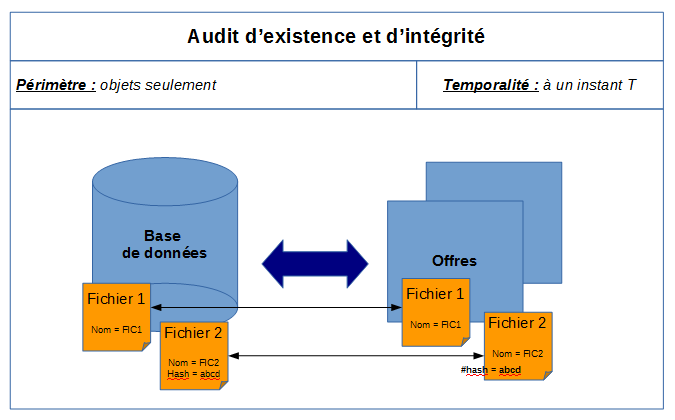
Dans l’audit d’existence des objets : pour chaque objet (ou fichier numérique) défini dans une liste, la solution logicielle Vitam vérifie :
l’existence de la stratégie de stockage définie dans le groupe d’objets techniques et référençant une liste d’offre de stockage sur lesquelles l’audit devra s’appuyer pour rechercher chaque fichier numérique référencé dans le groupe d’objets techniques ;
la correspondance entre les fichiers référencés dans le groupe d’objets techniques présent dans la base de données et les fichiers existants dans les offres spécifiées dans la stratégie de stockage ;
Dans l’audit d’intégrité des objets : pour chaque objet (ou fichier numérique) défini dans une liste, la solution logicielle Vitam vérifie en plus que les empreintes des objets binaires stockées et enregistrées dans la base de données sont identiques aux empreintes des objets binaires stockés, fournies par les offres de stockage :
dans le cas des offres chaudes, en les recalculant ;
dans le cas d’offre froide, en reprenant l’empreinte des fichiers conservées lors de l’enregistrement des fichiers numériques dans la base de données Mongo DB propre à l’offre froide.
Ces audits consistent en des actions d’évaluation, de vérification de l’existence et, le cas échéant, de l’intégrité d’une liste de fichiers numériques. Suite à cette analyse, une action corrective peut être lancée afin de rétablir l’accessibilité des fichiers absents ou corrompus, et ce à des fins de préservation numérique.
17.4.3.2.2. Mécanismes mis en œuvre dans la solution logicielle Vitam
17.4.3.2.2.1. Sélection de l’objet à auditer
La solution logicielle Vitam permet de réaliser une opération d’audit :
à la demande
via les API :
soit sur un tenant donné,
soit sur un service producteur en particulier ;
soit à partir d’une requête destinée à sélectionner un lot d’archives.
Dans les deux premiers cas, le nombre d’objets binaires ou fichiers numériques à auditer n’est pas limité.
Dans le dernier cas, la requête est limitée par défaut à 100 000 objets au niveau de la plate-forme, mais il est possible de :modifier ce seuil pour obtenir un périmètre d’audit plus large par un acte relevant de l’administrateur technique.
dépasser ce seuil de plate-forme au moyen de l’utilisation d’un seuil signalé lors de la sélection des objets à auditer (ou seuil de requête). Il est possible de réaliser deux audits :
soit un audit vérifiant uniquement que l’objet binaire (ou fichier numérique) existe bien,
soit un audit vérifiant en même temps et l’existence de l’objet binaire et son intégrité.
Point d’attention : en fonction du nombre d’objets binaires (ou fichiers numériques) conservés dans la solution logicielle Vitam, une opération d’audit peut prendre du temps et avoir un impact en termes de performance. Avant de lancer un audit, il est recommandé de bien prendre en considération le périmètre qui doit faire l’objet de cette opération.
via l’APP VitamUI « Audits ».
sous forme de tâche planifiée[83]. Cette planification peut être faite pour l’audit d’existence et/ou d’intégrité et sur un tenant donné. Si elle est activée, elle se lance par défaut toutes les 4 heures.
17.4.3.2.2.2. Opération d’audit
Dans le cadre du processus d’audit d’un ensemble d’archives, suite à la réception d’une requête, la solution logicielle Vitam effectue les tâches et traitements de contrôles internes suivants[58] :
préparation du traitement avec :
vérification des seuils de limitation des traitements portant sur les unités archivistiques ;
récupération de la configuration des stratégies de stockage ;
création d’une liste d’objets binaires faisant l’objet de l’opération ;
action d’audit, elle-même subdivisée en tâches :
vérification de l’existence des objets par comparaison entre la liste des identifiants des objets techniques présents dans la base de données Mongo DB et les noms des objets binaires stockés sur les offres et correspondant à ces identifiants ;
le cas échéant, vérification de l’intégrité des objets par comparaison entre l’empreinte d’un objet technique enregistrée en base et l’empreinte de l’objet binaire stocké sur l’offre calculée pour l’occasion ;
finalisation de l’audit et création d’un rapport, faisant état de l’opération d’audit ayant été exécutée.
Modélisation des points de comparaison lors d’un audit d’intégrité (les dièses signalent un calcul d’empreinte) : 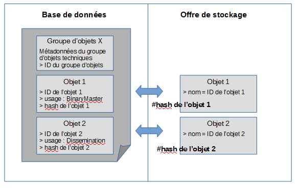
Point d’attention :
le processus d’audit de l’intégrité des objets intègre une tâche de vérification de l’existence des objets ;
l’audit porte par défaut sur l’ensemble des objets contenus dans un groupe d’objets techniques, usage par usage, version par version. À l’issue de l’audit, l’opération peut aboutir aux statuts suivants :
Statut |
Motifs |
|---|---|
Succès |
opération réalisée sans rencontrer de problèmes particuliers. |
Avertissement |
- opération réalisée, sans qu’aucun traitement ne soit effectué pour cause de lot d’archives sélectionné n’ayant pas d’objets binaires à traiter. |
Échec |
- audit d’existence : au moins un objet binaire est absent dans l’une des offres déclarées et par rapport au nombre de copies déclarées dans la stratégie de stockage ; |
Erreur technique |
- indisponibilité du service dans la solution logicielle Vitam. |
17.4.3.2.2.3. Résultat d’une opération d’audit
Quelle que soit l’action d’audit effectuée, la solution logicielle Vitam produit systématiquement un rapport au format JSONL énumérant[59] :
Ce rapport se décompose en plusieurs parties[60] :
un en-tête récapitulant l’objet du rapport ;
un résumé de l’opération, indiquant notamment son résultat en termes de cas en succès, en avertissement et/ou en échec ;
une partie contextuelle, correspondant au périmètre audité, c’est-à-dire à la requête DSL effectuée ;
une partie détaillant chaque unité archivistique, groupe d’objets techniques ou objets binaires en erreur ou en avertissement. Si l’ensemble du périmètre audité ne contient aucune erreur, cette partie ne sera pas détaillée.
L’en-tête du rapport comprend les éléments suivants :
« tenant » : tenant sur lequel l’opération d’audit a été lancée ;
« evId » : identifiant de l’événement ;
« evType » : code du type de l’opération, correspondant à la valeur « PROCESS_AUDIT » dans le cas présent ;
« outcome »: statut de l’événement, pouvant correspondre aux valeurs :
« OK » dans le cas d’un audit de cohérence sans erreur,
« WARNING » dans le cas d’un audit d’existence ou d’intégrité en avertissement ou ayant rencontré des anomalies,
« KO » dans le cas d’un audit d’existence ou d’intégrité en échec ;
« outcomeDetail » : détail de l’événement ;
« outcomeMsg » : détail du résultat de l’événement ;
« rightsStatementIdentifier »: identifiant des données référentielles en vertu desquelles l’opération peut s’exécuter. Dans le cas présent, le rapport précise l’identifiant du contrat d’accès utilisé pour lancer l’audit d’existence ou d’intégrité ;
« evDetData » : détails des données l’événement.
La partie suivante récapitule le résultat de l’opération d’audit et précise les éléments suivants :
« evStartDateTime » : date du début de l’opération, correspondant au champ « evDateTime » de l’événement racine de l’opération dans le journal des opérations ;
« evEndDateTime » : date de fin d’opération, correspondant au champ « evDateTime » du dernier événement présent dans l’opération dans le journal des opérations ;
« reportType »: type de rapport. Dans le cas d’un audit d’existence et/ou d’intégrité, la valeur du champ est égale à « AUDIT » ;
« vitamResults » : correspond au nombre de cas « OK », « KO », « WARNING » de l’opération ainsi que le total de ces trois statuts ;
« extendedInfo » : partie libre où chaque type de rapport contient des informations qui lui est propre. Dans le cas d’un audit d’existence et/ou d’intégrité, on y trouve :
le nombre total de groupes d’objets techniques audités pour l’ensemble de l’opération (« nbObjectGroups »),
le nombre total d’objets binaires audités pour l’ensemble de l’opération (« nbObjects »),
les identifiants des opérations d’entrée concernant les groupes d’objets et objets binaires audités (« opis »),
un résultat global (« globalResults ») remontant le nombre de groupes d’objets techniques et d’objets binaires aux statuts « OK », « KO » et « WARNING » (« objectGroupsCount » et « objectsCount ») ;
Un résultat par service producteur (« originatingAgencyResultats ») remontant le nombre de groupes d’objets techniques et d’objets binaires aux statuts « OK », « KO » et « WARNING » (« objectGroupsCount » et « objectsCount »).
Pour le rapport d’audit d’existence et/ou d’intégrité, la partie contextuelle du rapport comprend :
le type d’audit réalisé (« auditActions »), pouvant correspondre à l’une de ces deux valeurs :
« AUDIT_FILE_EXISTING » pour un audit d’existence ;
« AUDIT_FILE_INTEGRITY » pour un audit d’intégrité ;
l’élément sur lequel l’audit a été lancé (« auditType ») et pouvant correspondre à l’une de ces valeurs :
« tenant » si l’audit a été lancé sur un tenant donné ;
« originatingagency » si l’audit a été lancé sur un service producteur en particulier ;
« dsl » si l’audit a été lancé à la suite d’une requête DSL ;
l’identifiant de l’élément audité (« objectId »), pouvant correspondre :
soit au numéro du tenant audité,
soit à l’identifiant du service producteur ayant fait l’objet de l’audit ;
la requête DSL ayant servi à sélectionner les unités archivistiques, les groupes d’objets techniques et les fichiers numériques associés à auditer (« query »).
La dernière partie correspond au résultat de l’audit d’existence et/ou d’intégrité pour chaque objet audité en erreur. On y trouve les informations suivantes :
type d’audit en erreur (« outcome »), pouvant correspondre à l’une de ces deux valeurs :
« AUDIT_FILE_EXISTING » pour un audit d’existence ;
« AUDIT_FILE_INTEGRITY » pour un audit d’intégrité ;
type d’objet détaillé (« detailType »), dont la valeur est égale à « objectGroup » ;
précisions sur le groupe d’objets techniques en erreur dont au moins un objet est en erreur (« params ») :
identifiant du groupe d’objets techniques (« id ») ;
statut du groupe d’objets techniques (« status ») ;
identifiant de l’opération d’entrée du groupe d’objets techniques (« opi ») ;
service producteur du groupe d’objets techniques (« originatingAgency ») ;
unité(s) archivistique(s) référençant le groupe d’objets techniques (« parentUnitIds ») ;
liste d’objets binaires en erreur (« objectVersions ») :
identifiant de l’objet binaire (« id ») ;
opération d’entrée de l’objet binaire (« opi ») ;
usage de l’objet binaire (« qualifier »), pouvant correspondre à l’une de ces valeurs : « BinaryMaster », « Dissemination », « Thumbnail », « TextContent » ;
version de l’objet binaire (« version ») ;
liste des offres stockant l’objet binaire (« offerIds »). Pour une offre donnée, le rapport propose les éléments suivants :
identifiant de l’offre (« id ») ;
statut de l’objet binaire sur l’offre en question (« status »), pouvant correspondre aux valeurs « OK » ou « KO » ;
statut de l’audit pour l’objet concerné (« status »).
En cas de succès ou d’avertissement, cette partie du rapport reste vide.
17.4.3.2.3. Conseils de mise en œuvre
17.4.3.2.3.1. À quoi servent l’audit d’existence et l’audit d’intégrité des objets ?
L’audit d’existence des objets permet de vérifier la présence effective des objets binaires (ou fichiers numériques) préalablement transférés et conservés dans la solution logicielle Vitam. Il assure que ces objets binaires sont toujours disponibles et qu’aucune de leurs copies, stockées dans différentes offres de stockage, conformément à la stratégie de stockage, n’a disparu des différentes offres suite à une erreur technique.
L’audit d’intégrité des objets binaires (ou fichiers numériques) permet de vérifier, outre l’existence des objets, que ces objets conservés au moyen de la solution logicielle Vitam sont intègres, c’est-à-dire qu’ils n’ont pas été modifiés dans la plate-forme d’archivage utilisant la solution logicielle Vitam, et ce par contrôle et comparaison d’empreintes relatives aux groupes d’objets techniques.
17.4.3.2.3.2. Quand et comment lancer un audit d’existence et un audit d’intégrité des objets ?
La solution logicielle Vitam permet de lancer des opérations d’audit d’existence et/ou d’intégrité :
depuis l’IHM démo sur l’ensemble d’un tenant ou en sélectionnant un service producteur en particulier ;
depuis l’APP VitamUI « Audits », sur l’ensemble d’un coffre (tenant) ou en sélectionnant :
un ou plusieurs services producteurs en particulier (pouvant être associé à une période),
un à plusieurs identifiants d’opération d’entrée,
une à plusieurs positions de rattachement (pouvant être associé à une période),
une période d’entrée dans le système ;
par l’API, au moyen d’une requête DSL.
Les raisons pouvant amener à réaliser un audit d’existence des objets sont les suivantes :
sondages ponctuels, par échantillon d’archives, afin de vérifier que les objets binaires sont toujours conservés dans la solution logicielle Vitam ;
audits sur des périmètres définis d’archives, faisant partie intégrante d’un programme complet, pluri-annuel, de vérification de l’existence d’objets binaires (fichiers numériques) ;
récolement initié à l’occasion d’une élection ;
audits occasionnés par une évolution de stratégie de stockage ou un changement d’offre de stockage.
En plus de ces dernières, les raisons pouvant amener à réaliser un audit d’intégrité des objets binaires sont les suivantes :
prouver l’intégrité d’un fonds en particulier, par la génération d’un rapport ;
vérifier l’absence de modification des objets binaires conservés par la solution logicielle Vitam à la suite d’un changement d’offre de stockage.
Point d’attention :
Il est recommandé de procéder à une opération de ce type sur un périmètre restreint (service producteur par service producteur ou entrée par entrée), afin de :
ne pas impacter les performances de la solution logicielle Vitam ;
avoir un temps de traitement court et la production d’un rapport d’opération rapidement disponible.
17.4.3.2.3.3. Comment utiliser l’audit d’existence et d’intégrité des objets ?
À l’issue de cette phase de réalisation de fonctionnalités concernant le référentiel Vitam, l’équipe projet Vitam est en mesure de fournir quelques recommandations de mise en œuvre :
Audit d’existence des objets
Intitulé |
Description |
Niveau de recommandation |
|---|---|---|
Vérification manuelle de l’existence d’objets sur un périmètre restreint d’objets binaires |
Il est recommandé de procéder à une opération de ce type sur un périmètre restreint (service producteur par service producteur ou entrée par entrée), le cas échéant faisant partie intégrante d’un programme complet de vérification de l’existence d’objets binaires, afin de : |
Recommandé |
Vérification manuelle de l’existence d’objets sur l’ensemble des objets binaires conservés |
Il n’est pas recommandé de lancer une opération de ce type sur l’ensemble des objets binaires conservés, car cette action pourrait avoir un impact sur : |
Non recommandé |
Vérification systématique de l’existence d’objets binaires |
Dans le cadre de campagne de vérification de l’existence d’objets binaires sur l’ensemble des fonds conservés dans la solution logicielle Vitam ou sur une partie importante d’entre eux, il est recommandé de programmer un traitement automatique (batch), permettant de mener cette opération, segmentée en petits lots d’archives, en fond de tâche, durant des heures de faible utilisation du système (en soirée ou durant le week-end). |
Recommandé |
Vérification systématique de l’existence d’objets binaires entrants |
Dans le cas d’un audit systématique des objets binaires transférés dans la solution logicielle Vitam, il est recommandé de programmer un traitement automatique (batch) auditant les entrées et permettant de mener cette opération : |
Recommandé |
Audit d’intégrité des objets
Intitulé |
Description |
Niveau de recommandation |
|---|---|---|
Vérification manuelle de l’intégrité d’objets sur un périmètre restreint d’objets binaires |
Il est recommandé de procéder à une opération de ce type sur un périmètre restreint (service producteur par service producteur ou entrée par entrée), le cas échéant faisant partie intégrante d’un programme complet de vérification de l’existence d’objets binaires, afin de : |
Recommandé |
Vérification manuelle de l’intégrité d’objets sur l’ensemble des objets binaires conservés |
Néanmoins, il n’est pas recommandé de lancer une opération de ce type sur l’ensemble des objets binaires conservés, car cette action pourrait avoir un impact sur : |
Non recommandé |
Vérification systématique de la cohérence du système |
Il est recommandé de procéder à un audit d’intégrité dans le cadre d’opérations techniques ciblées, telles que : |
Recommandé |
Vérification systématique de l’intégrité d’objets binaires |
Dans le cadre de campagne de vérification de l’intégrité d’objets binaires sur l’ensemble des fonds conservés dans la solution logicielle Vitam ou sur une partie importante d’entre eux, il est recommandé de programmer un traitement automatique (batch), permettant de mener cette opération, segmentée en petits lots d’archives, en fond de tâche, durant des heures de faible utilisation du système (en soirée ou durant le week-end). |
Recommandé |
Vérification systématique de l’intégrité d’objets binaires entrants |
Dans le cas d’un audit systématique des objets transférés dans la solution logicielle Vitam, il est recommandé de programmer un traitement automatique (batch) auditant les entrées et permettant de mener cette opération : |
Recommandé |
17.4.3.3. Audit de relevé de valeur probante
17.4.3.3.1. Définition
Éléments comparés lors d’un audit de relevé de valeur probante : 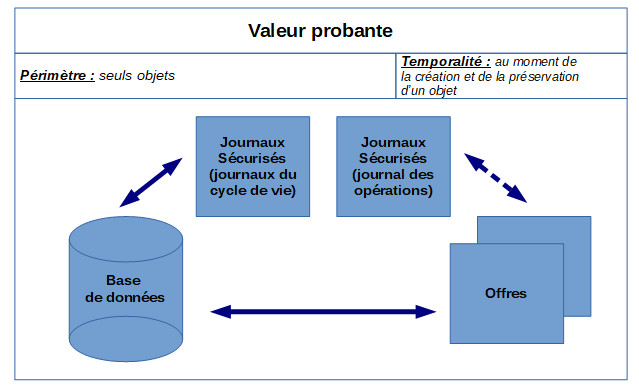
Dans un audit de relevé de valeur probante, pour chaque objet (ou fichier numérique) défini dans une liste, la solution logicielle Vitam vérifie :
l’empreinte de l’objet binaire de chaque offre est identique à celle du journal sécurisé en date de la création de l’objet ;
l’empreinte de l’objet binaire enregistré en base est identique à celle du journal sécurisé en date de la création de l’objet ;
l’empreinte des métadonnées décrivant un groupe d’objets techniques est identique à celle du journal sécurisé en date de la création de l’objet ;
l’empreinte du groupe formé par les métadonnées et le journal du cycle de vie associés à un groupe d’objets techniques, stocké sur disque pour conservation et reconstruction, est identique à celle qui est enregistrée dans le journal des opérations ;
l’empreinte du journal du cycle de vie d’un groupe d’objets techniques est identique à celle du journal sécurisé en date de la création de l’objet.
Point d’attention : l’audit de relevé de valeur probante s’effectue sur la base des versions des groupes d’objets techniques, ainsi que de leurs objets binaires, de la même manière qu’il les compare aux journaux sécurisés à disposition concernant les journaux du cycle de vie des groupes d’objets techniques, au moment supposé de la création des objets.
17.4.3.3.2. Mécanismes mis en œuvre dans la solution logicielle Vitam
17.4.3.3.2.1. Sélection de l’objet à auditer
La solution logicielle Vitam permet de réaliser une opération d’audit de relevé de valeur probante
via les API, à partir d’un lot d’archives préalablement sélectionnées. Cette opération peut porter :
sur un usage d’objet particulier (original numérique, copie de diffusion, texte brut, vignette) ;
sur une version d’objet particulière ;
sur des documents liés à un contexte de signature détachée.
La requête est limitée par défaut à 100 000 objets au niveau de la plate-forme, mais il est possible de :
modifier ce seuil pour obtenir un périmètre d’audit plus large par un acte relevant de l’administrateur technique.
dépasser ce seuil de plate-forme au moyen de l’utilisation d’un seuil signalé lors de la sélection des objets à auditer (ou seuil de requête).
Point d’attention : en fonction du nombre d’objets conservés dans la solution logicielle Vitam, une opération d’audit peut prendre du temps et avoir un impact en termes de performance. Avant de lancer un audit, il est recommandé de bien prendre en considération le périmètre qui doit faire l’objet de cette opération.
via l’APP VitamUI « Relevés de valeur probante ».
17.4.3.3.2.2. Opération d’audit
Dans le cadre du processus d’audit de relevé de valeur probante d’un ensemble d’archives, suite à la réception d’une requête, la solution logicielle Vitam effectue les tâches et traitements de contrôles internes suivants[61] :
préparation du traitement avec :
vérification des seuils de limitation des traitements portant sur les unités archivistiques ;
récupération de la configuration des stratégies de stockage ;
création de la liste faisant l’objet de l’opération ;
alimentation du relevé de valeur probante, incluant la création d’une entrée dans le relevé de valeur probante ;
finalisation de l’audit et de la création du relevé de valeur probante, faisant état de la conservation des archives dans le système.
À l’issue de l’audit, l’opération peut aboutir aux statuts suivants[62] :
Statut |
Motifs |
|---|---|
Succès |
opération réalisée sans rencontrer de problèmes particuliers. |
Avertissement |
opération réalisée, sans qu’aucun traitement ne soit effectué pour cause de lot d’archives sélectionné n’ayant pas d’objets binaires à traiter. |
Échec |
- le nombre d’objets à auditer dépasse le seuil de la requête. |
Erreur technique |
- indisponibilité du service dans la solution logicielle Vitam. |
Pour chaque objet, l’audit de relevé de valeur probante effectue les contrôles suivants : fichier à télécharger
17.4.3.3.2.3. Résultat d’une opération d’audit
Lors d’un audit de relevé de valeur probante, la solution logicielle Vitam produit systématiquement un rapport au format JSON[63].
Ce rapport se décompose en plusieurs parties[64] :
un en-tête récapitulant l’objet du rapport ;
un résumé de l’opération, indiquant notamment son résultat en termes de cas en succès, en avertissement et/ou en échec ;
une partie contextuelle, correspondant au périmètre audité, c’est-à-dire à la requête DSL effectuée ;
une partie détaillant pour chaque objet les informations justifiant sa valeur probante dans le système. L’en-tête du rapport comprend les éléments suivants :
« tenant » : tenant sur lequel l’opération d’audit a été lancée ;
« evId » : identifiant de l’événement ;
« evType » : code du type de l’opération, correspondant à la valeur « EXPORT_PROBATIVE_VALUE » dans le cas présent ;
« outcome »: statut de l’événement, pouvant correspondre aux valeurs :
« OK » dans le cas d’un audit sans erreur,
« WARNING » dans le cas d’un audit en avertissement ou ayant rencontré des anomalies,
« KO » dans le cas d’un audit en échec ;
« outcomeMsg » : détail du résultat de l’événement ;
« rightsStatementIdentifier »: identifiant des données référentielles en vertu desquelles l’opération peut s’exécuter. Dans le cas présent, le rapport précise l’identifiant du contrat d’accès utilisé pour lancer l’audit de relevé de valeur probante ;
« evDetData » : détails des données l’événement.
La partie suivante récapitule le résultat de l’opération d’audit et précise les éléments suivants :
« evStartDateTime » : date du début de l’opération, correspondant au champ « evDateTime » de l’événement racine de l’opération dans le journal des opérations ;
« evEndDateTime » : date de fin d’opération, correspondant au champ « evDateTime » du dernier événement présent dans l’opération dans le journal des opérations ;
« reportType »: type de rapport. Dans le cas d’un audit de relevé de valeur probante, la valeur du champ est égale à « PROBATIVE_VALUE » ;
« vitamResults » : correspond au nombre de cas « OK », « KO », « WARNING » de l’opération ainsi que le total de ces trois statuts ;
« context » : partie constituée des éléments de requête qui permettent de connaître les critères de recherche et sélection des objets :
« dslQuery » : la requête DSL de définition des unités archivistiques cibles ;
« usage » : le type d’objets ciblés – via leur usage au sens de la solution logicielle Vitam, la plupart du temps « BinaryMaster » ;
« version » : la version des objets ciblés, la plupart du temps cela sera la version 1, mais dans le cas d’objets générés à l’occasion d’opérations de préservation, le numéro de version pourra être différent ;
« includeDetachedSigningInformation » : l’inclusion des documents associés à un contexte de signature détachée.
La dernière partie « reportEntries » correspond au résultat du relevé de valeur probante pour chaque objet. On y trouve les informations suivantes :
« unitIds » : le tableau des unités archivistiques sélectionnées par la requête et contenant cet objet binaire (dans le cas général un seul) ;
« objectGroupId » : l’identifiant unique du groupe d’objets techniques contenant cet objet binaire (GUID du GOT) ;
« objectId » : l’identifiant unique de l’objet binaire concerné (GUID d’objet) ;
« usageVersion » : le couple « usage_version » de l’objet concerné (ex. BinaryMaster_1) ;
« operations » : un tableau contenant les opérations à vérifier sur l’objet binaire concerné, à savoir :
l’opération (entrée/INGEST ou préservation/PRESERVATION) qui a conduit à la prise en charge de cet objet binaire dans le système ;
l’opération de sécurisation de cette opération de création ;
l’opération de sécurisation du journal du cycle de vie au moment de la création.
Pour chacune de ces opérations sont fournies le type de l’opération, la date de fin de l’opération, ainsi que des éléments de contexte spécifiques aux opérations d’entrée/INGEST, à savoir :
le contrat d’entrée « rightsStatementIdentifier »,
le contexte applicatif d’entrée « agIdApp »,
le jeton fourni par l’applicatif d’entrée « evIdAppSession ».
« checks » : le tableau de toutes les vérifications faites sur l’objet binaire concerné. Ces vérifications sont toutes décrites selon le même modèle qui permet de comparer les deux valeurs provenant de sources différentes :
« name » : le code de la vérification ;
« details » : le libellé explicite de la vérification ;
« type » : le type de la vérification à savoir « TIMESTAMP_CHECKING », « MERKLE_INTEGRITY », « CHAIN » ou « LOCAL_INTEGRITY » ;
« source » : l’origine de l’information à croiser avec la « destination » pour vérification, à savoir « DATABASE » (base de données Mongo), « TRACEABILITY_FILE » (fichier de sécurisation) ou « OFFER » (fichier sur une offre de stockage) ;
« destination » : l’origine de l’information à croiser avec l’« origine » pour vérification, à savoir « DATABASE », « TRACEABILITY_FILE » ou « OFFER » ;
« sourceComparable » : la valeur à comparer venant de la source ;
« destinationComparable » : la valeur à comparer venant de la destination ;
« action » : l’action faite lors de la vérification, en général « COMPARAISON » mais peut être aussi « VALIDATION » si, outre la comparaison, il est possible de vérifier le contenu de la valeur, ce qui est le cas pour un tampon d’horodatage ;
« item » : l’élément d’information sur l’objet qui est vérifié ;
« status » : le résultat de la vérification ;
« evStartDateTime » : la date de l’enregistrement du premier résultat de check pour cet objet ;
« evEndDateTime »: la date de l’enregistrement du dernier résultat de check pour cet objet, postérieure à la date de l’enregistrement du premier résultat ;
« status » : finalement le statut final de la vérification de l’objet.
Point d’attention :
Cette structure très riche et détaillée n’est pas faite pour être lue directement, mais pour apporter tous les éléments utiles à la construction d’un document lisible selon la forme souhaitée par le demandeur, au niveau du front-office.
Pour un objet, l’opération peut aboutir aux statuts suivants[65] :
Statut |
Motifs |
|---|---|
Succès |
relevé réalisé sans rencontrer de problèmes particuliers. |
Avertissement |
relevé réalisé, sans qu’aucun traitement ne soit effectué pour cause de : |
Échec |
- pour chaque objet binaire : |
Erreur technique |
- indisponibilité du service dans la solution logicielle Vitam. |
17.4.3.3.3. Conseils de mise en œuvre
17.4.3.3.3.1. À quoi sert l’audit de relevé de valeur probante ?
L’audit de relevé de valeur probante permet de vérifier la conformité globale des objets binaires (fichiers numériques), et de leurs journaux dans l’ensemble du système, au moment de leur création (versement ou préservation).
Il offre une garantie supplémentaire en prouvant, au moyen de son rapport, que le système ou, du moins, le périmètre audité n’a pas subi d’altération depuis sa création jusqu’à l’instant où est lancé l’audit.
17.4.3.3.3.2. Quand et comment lancer un audit de relevé de valeur probante ?
La solution logicielle Vitam permet de lancer des opérations d’audit de relevé valeur probante à partir d’un lot d’archives préalablement sélectionné. L’opération peut s’effectuer :
depuis le panier de l’IHM démo sur un lot d’archives ;
depuis l’APP VitamUI « Relevés de valeur probante », sur un objet en particulier ;
par l’API, au moyen d’une requête DSL. Les raisons pouvant amener à réaliser un relevé de valeur probante sont les suivantes :
apporter la preuve de la bonne existence d’un fichier dans le système à la date supposée de son apparition dans celui-ci ;
fournir une attestation au sens de la NF Z 42‑013 de la conservation de la valeur probante ;
mesurer la conformité du système par rapport aux attendus de la norme AFNOR NF Z 42-013.
17.4.3.4. Audit de cohérence
17.4.3.4.1. Définition
Éléments comparés lors d’un audit de cohérence : 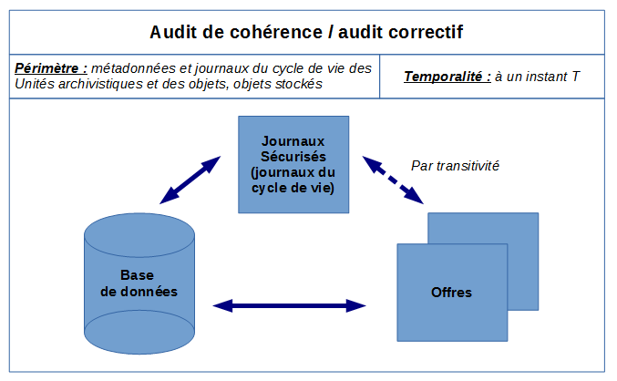
Dans un audit de cohérence, la solution logicielle Vitam vérifie, pour chaque unité archivistique définie dans une liste, que :
l’empreinte des métadonnées décrivant une unité archivistique et enregistrées dans la base de données Mongo DB est identique à celle qui est enregistrée dans le dernier journal sécurisé[66] ;
l’empreinte du journal du cycle de vie d’une unité archivistique, enregistrées dans la base de données Mongo DB, est identique à celle qui est enregistrée dans le dernier journal sécurisé ;
l’empreinte du groupe formé par les métadonnées et le journal du cycle de vie associés à une unité archivistique, stocké sur l’offre de stockage dans un fichier JSON pour conservation et reconstruction, est identique à celle qui est enregistrée dans le dernier journal sécurisé ;
si l’unité archivistique dispose d’un groupe d’objets techniques :
pour chaque objet binaire (ou fichier numérique) :
l’empreinte de l’objet binaire (ou fichier numérique) de chaque offre est identique à celle de l’objet binaire enregistrée dans le dernier journal sécurisé ;
l’empreinte de l’objet binaire enregistré en base est identique à celle de l’objet binaire enregistré dans le dernier journal sécurisé ;
l’empreinte des métadonnées décrivant un groupe d’objets techniques et enregistrées dans la base de données Mongo DB est identique à celle de ces mêmes métadonnées enregistrées dans le dernier journal sécurisé ;
l’empreinte du groupe formé par les métadonnées et le journal du cycle de vie associés à un groupe d’objets techniques, stocké sur l’offre de stockage dans un fichier JSON pour conservation et reconstruction, est identique à celle qui est enregistrée dans le dernier journal sécurisé ;
l’empreinte du journal du cycle de vie d’un groupe d’objets techniques enregistrée dans la base de données Mongo DB est identique à celle enregistrée dans le dernier journal sécurisé.
Point d’attention : l’audit de cohérence s’effectue sur la base des dernières versions des unités archivistiques et des groupes d’objets techniques, ainsi que de leurs objets binaires, de la même manière qu’il les compare aux derniers journaux sécurisés à disposition concernant les journaux du cycle de vie des unités archivistiques et des groupes d’objets techniques.
Ce processus peut être décomposé de la manière suivante :
Modélisation des points de comparaison lors d’un audit de cohérence (les dièses signalent un calcul d’empreinte) :
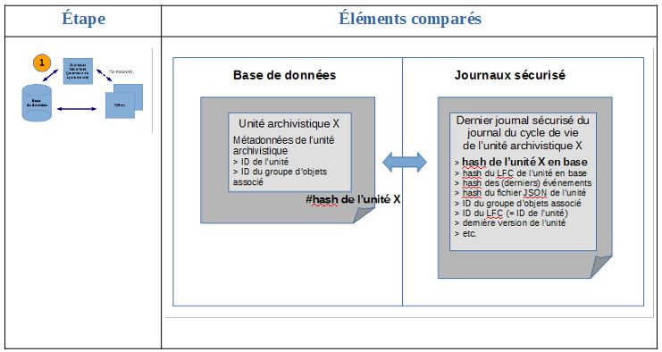 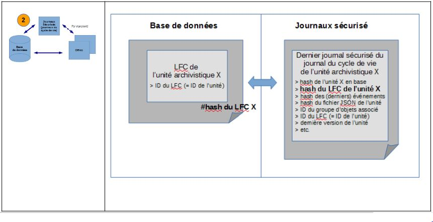 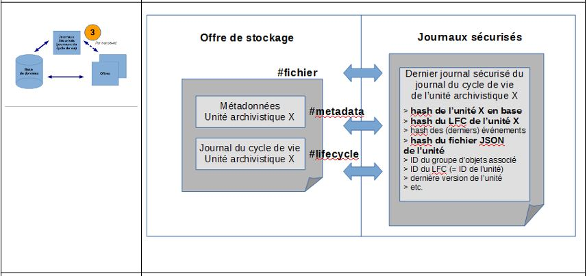 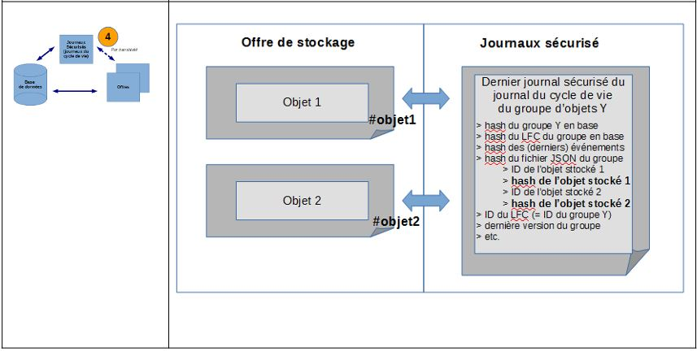 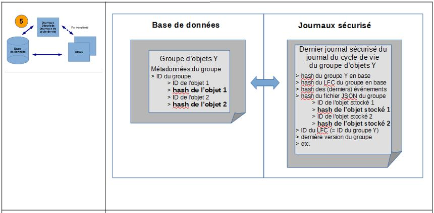 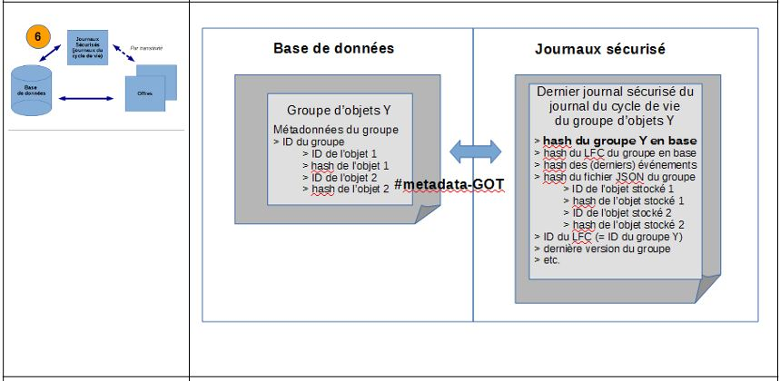 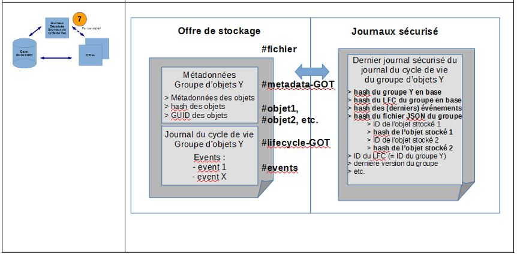 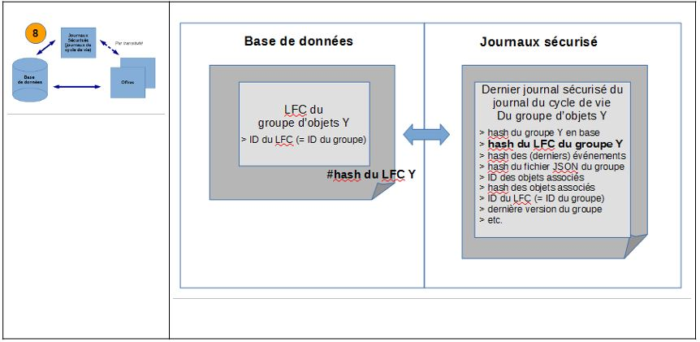
Cet audit consiste en des actions d’évaluation, de vérification de l’existence et, le cas échéant, de l’intégrité d’une liste d’objets binaires, de groupes d’objets techniques et d’unités archivistiques, de leurs journaux de cycle de vie, ainsi que de leur cohérence par rapport aux journaux sécurisés. Suite à cette analyse, une action corrective peut être lancée afin de rétablir l’accessibilité des objets absents ou corrompus, et ce à des fins de préservation numérique.
17.4.3.4.2. Mécanismes mis en œuvre dans la solution logicielle Vitam
17.4.3.4.2.1. Sélection de l’objet à auditer
La solution logicielle Vitam permet de réaliser une opération d’audit de cohérence
via les API, à partir d’un lot d’archives.
La requête est limitée par défaut à 100 000 objets au niveau de la plate-forme, mais il est possible de :
modifier ce seuil pour obtenir un périmètre d’audit plus large par un acte relevant de l’administrateur technique.
dépasser ce seuil de plate-forme au moyen de l’utilisation d’un seuil signalé lors de la sélection des objets à auditer (ou seuil de requête).
Point d’attention : en fonction du nombre d’objets conservés dans la solution logicielle Vitam, une opération d’audit peut prendre du temps et avoir un impact en termes de performance. Avant de lancer un audit, il est recommandé de bien prendre en considération le périmètre qui doit faire l’objet de cette opération.
via l’APP VitamUI « Audits ».
17.4.3.4.2.2. Opération d’audit
Dans le cadre du processus d’audit de cohérence d’un ensemble d’archives, suite à la réception d’une requête, la solution logicielle Vitam effectue les tâches et traitements de contrôles internes suivants[67] :
préparation du traitement avec :
vérification des seuils de limitation des traitements portant sur les unités archivistiques ;
récupération de la configuration des stratégies de stockage ;
création de la liste faisant l’objet de l’opération ;
récupération des données présentes dans la base de données ;
extraction de la liste des enregistrements présents dans les derniers journaux sécurisés ;
vérification de chaque entité : unité archivistique, groupe d’objets techniques, objet(s) binaire(s) associé(s) ;
finalisation de l’audit et création d’un rapport, faisant état de l’opération d’audit ayant été exécutée.
À l’issue de l’audit, l’opération peut aboutir aux statuts suivants :
Statut |
Motifs |
|---|---|
Succès |
opération réalisée sans rencontrer de problèmes particuliers. |
Avertissement |
opération réalisée, sans qu’aucun traitement ne soit effectué pour cause de : |
Échec |
- l’empreinte des métadonnées décrivant une unité archivistique est différente de celle qui est enregistrée dans le dernier journal sécurisé ; |
Erreur technique |
- indisponibilité du service dans la solution logicielle Vitam. |
17.4.3.4.2.3. Résultat d’une opération d’audit
Lors d’un audit de cohérence, la solution logicielle Vitam produit systématiquement un rapport au format JSONL[68].
Ce rapport se décompose en plusieurs parties[69] :
un en-tête récapitulant l’objet du rapport ;
un résumé de l’opération, indiquant notamment son résultat en termes de cas en succès, en avertissement et/ou en échec ;
une partie contextuelle, correspondant au périmètre audité, c’est-à-dire à la requête DSL effectuée ;
une partie détaillant chaque unité archivistique, groupe d’objets techniques ou objets binaires en erreur ou en avertissement. Si l’ensemble du périmètre audité ne contient aucune erreur, cette partie ne sera pas détaillée.
L’en-tête du rapport comprend les éléments suivants :
« tenant » : tenant sur lequel l’opération d’audit a été lancée ;
« evId » : identifiant de l’événement ;
« evType » : code du type de l’opération, correspondant à la valeur « EVIDENCE_AUDIT » dans le cas présent ;
« outcome »: statut de l’événement, pouvant correspondre aux valeurs :
« OK » dans le cas d’un audit de cohérence sans erreur,
« WARNING » dans le cas d’un audit de cohérence en avertissement ou ayant rencontré des anomalies,
« KO » dans le cas d’un audit de cohérence en échec ;
« outcomeMsg » : détail du résultat de l’événement ;
« rightsStatementIdentifier »: identifiant des données référentielles en vertu desquelles l’opération peut s’exécuter.
Dans le cas présent, le rapport précise l’identifiant du contrat d’accès utilisé pour lancer l’audit de cohérence ;
« evDetData » : détails des données l’événement. La partie suivante récapitule le résultat de l’opération d’audit et précise les éléments suivants :
« evStartDateTime » : date du début de l’opération, correspondant au champ « evDateTime » de l’événement racine de l’opération dans le journal des opérations ;
« evEndDateTime » : date de fin d’opération, correspondant au champ « evDateTime » du dernier événement présent dans l’opération dans le journal des opérations ;
« reportType »: type de rapport. Dans le cas d’un audit de cohérence, la valeur du champ est égale à « EVIDENCE_AUDIT » ;
« vitamResults » : correspond au nombre de cas « OK », « KO », « WARNING » de l’opération ainsi que le total de ces trois statuts ;
« extendedInfo » : partie libre où chaque type de rapport contient des informations qui lui est propre. Dans le cas d’un audit de cohérence, on y trouve :
le nombre total d’unités archivistiques auditées pour l’ensemble de l’opération (« nbArchiveUnits »),
le nombre total de groupes d’objets techniques audités pour l’ensemble de l’opération (« nbObjectGroups »),
le nombre total d’objets binaires audités pour l’ensemble de l’opération (« nbObjects »),
un résultat global (« globalResults ») remontant le nombre d’unités archivistiques, de groupes d’objets techniques et d’objets binaires (fichiers numériques) aux statuts « OK », « KO » et « WARNING » (« objectGroupsCount », « archiveUnitsCount » et « objectsCount »).
Pour le rapport d’audit de cohérence, la partie contextuelle du rapport ne comprend uniquement que la requête DSL ayant servi à sélectionner les unités archivistiques, les groupes d’objets techniques et les objets binaires (fichiers numériques) associés à auditer. La dernière partie correspond au résultat de l’audit de cohérence pour chaque objet ou groupe d’objets ou unité archivistique audité en erreur ou en avertissement. On y trouve les informations suivantes :
« identifier » : identifiant du fichier numérique, du groupe d’objets ou de l’unité archivistique audité ;
« status » : statut de l’opération pour l’objet binaire, le groupe d’objets techniques ou l’unité archivistique concerné.
Ce statut peut être :
« KO » : erreur ;
« WARNING » : avertissement. Ce statut est présent uniquement dans le cas où l’objet binaire, le groupe d’objets techniques ou l’unité archivistique audité n’a pas encore été sécurisé et, de fait, n’est pas identifié dans les journaux sécurisés ;
« message » : messsage qui signale et précise une incohérence entre les enregistrements des fichiers sécurisés, des offres de stockage et de la base de données ;
« objectType » : type de l’objet audité, pouvant correspondre à l’une de ces trois valeurs :
« UNIT » si l’objet audité en erreur ou en avertissement est une unité archivistique,
« OBJECTGROUP » si l’objet audité en erreur ou en avertissement est un groupe d’objets techniques,
« OBJECT » si l’objet audité en erreur ou en avertissement est un objet binaire (fichier numérique) ;
« securedHash » : empreinte du journal sécurisé de l’unité archivistique, du fichier numérique ou du groupe d’objets techniques ;
« offersHashes » : signature de l’élément audité dans les offres de stockage. Cet élément ne contient aucune valeur si l’objet audité est en avertissement pour cause d’absence de journaux sécurisés ;
« strategyId » : identifiant de la stratégie.
En cas de succès, cette partie du rapport reste vide.
17.4.3.4.3. Conseils de mise en œuvre
17.4.3.4.3.1. À quoi sert l’audit de cohérence ?
L’audit de cohérence permet de vérifier la conformité globale des unités archivistiques, des groupes d’objets techniques et des objets binaires (fichiers numériques), et de leurs journaux dans l’ensemble du système, puisqu’il croise :
empreintes des unités archivistiques et des groupes d’objets techniques, ainsi que de leurs journaux, présents dans la base de données MongoDB,
empreintes des unités archivistiques et des groupes d’objets techniques, ainsi que de leurs journaux, issues des fichiers JSON enregistré sur disque,
empreintes des unités archivistiques et des groupes d’objets techniques, ainsi que de leurs journaux enregistrés dans le journal sécurisé.
Il offre une garantie supplémentaire en prouvant, au moyen de son rapport, que le système ou, du moins, le périmètre audité n’a pas subi d’altération à l’instant où est lancé l’audit.
17.4.3.4.3.2. Quand et comment lancer un audit de cohérence ?
La solution logicielle Vitam permet de lancer des opérations d’audit de cohérence à partir d’un lot d’archives préalablement sélectionné. L’opération peut s’effectuer :
depuis le panier de l’IHM démo sur un lot d’archives ;
depuis l’APP VitamUI « Audits », sur l’ensemble d’un coffre (tenant) ou en sélectionnant :
un ou plusieurs services producteurs en particulier (pouvant être associé à une période),
un à plusieurs identifiants d’opération d’entrée,
une à plusieurs positions de rattachement (pouvant être associé à une période),
une période d’entrée dans le système ;
par l’API, au moyen d’une requête DSL.
Les raisons pouvant amener à réaliser un audit de cohérence sont les suivantes :
prouver l’intégrité d’un fonds en particulier, par la génération d’un rapport ;
mesurer la conformité du système par rapport aux attendus de la norme AFNOR NF Z 42-013 ;
lancer des audits ponctuels, associés à une procédure d’audit de certification ou de conformité ;
fournir une évaluation objective de la qualité et de la fiabilité du système au moyen d’un rapport ;
vérifier l’absence de pertes d’informations à la suite d’une opération technique (ex : migration de plate-forme).
Point d’attention : il est recommandé de procéder à une opération de ce type sur un périmètre restreint (service producteur par service producteur), afin de :
ne pas impacter les performances de la solution logicielle Vitam ;
avoir un temps de traitement court et la production d’un rapport d’opération rapidement disponible.
17.4.3.4.3.3. Comment utiliser l’audit de cohérence ?
À l’issue de cette phase de réalisation de fonctionnalités concernant le référentiel Vitam, l’équipe projet Vitam est en mesure de fournir quelques recommandations de mise en œuvre :
Audit de cohérence
Intitulé |
Description |
Niveau de recommandation |
|---|---|---|
Vérification manuelle de la cohérence du système sur un périmètre restreint de groupes d’objets techniques, d’objets binaires et des unités archivistiques |
Il est recommandé de procéder à une opération de ce type sur un périmètre restreint (service producteur par service producteur ou entrée par entrée), le cas échéant faisant partie intégrante d’un programme complet de vérification de l’existence de groupes d’objets techniques, d’objets binaires et d’unités archivistiques, afin de : |
Recommandé |
Vérification manuelle de la cohérence du système sur l’ensemble des groupes d’objets techniques, des objets binaires et des unités archivistiques conservés |
Il n’est pas recommandé de lancer une opération de ce type sur l’ensemble des objets binaires, des groupes d’objets techniques et des unités archivistiques conservés, car cette action pourrait avoir un impact sur : |
Non recommandé |
Vérification systématique de la cohérence du système |
Dans le cadre de campagne de vérification de la cohérence du système sur l’ensemble des fonds conservés dans la solution logicielle Vitam ou sur une partie importante d’entre eux, il est recommandé de programmer un traitement automatique (batch), permettant de mener cette opération en fond de tâche, durant des heures de faible utilisation du système (en soirée ou durant le week-end). |
Recommandé |
Vérification systématique de la cohérence du système |
Il est recommandé de procéder à un audit de cohérence aléatoire dans le cadre d’opérations techniques ciblées, telles qu’une migration de plate-forme et de données. |
Recommandé |
Vérification systématique de la cohérence du système |
Dans le cas d’un audit systématique du système dans la solution logicielle Vitam, il est recommandé de programmer un traitement automatique (batch) auditant les dernières activités sur les groupes d’objets techniques, les objets binaires et les unités archivistiques et permettant de mener cette opération : |
Recommandé |
17.4.3.5. Audit correctif
17.4.3.5.1. Définition
L’audit correctif comprend deux phases :
un audit de cohérence :
pour chaque unité archivistique définie dans une liste, la solution logicielle Vitam vérifie que :
l’empreinte des métadonnées décrivant une unité archivistique et enregistrées dans la base de données Mongo DB est identique à celle qui est enregistrée dans le dernier journal sécurisé[70] ;
l’empreinte du journal du cycle de vie d’une unité archivistique, enregistrées dans la base de données Mongo DB, est identique à celle qui est enregistrée dans le dernier journal sécurisé ;
l’empreinte du groupe formé par les métadonnées et le journal du cycle de vie associés à une unité archivistique, stocké sur l’offre de stockage dans un fichier JSON pour conservation et reconstruction, est identique à celle qui est enregistrée dans le dernier journal sécurisé ;
si l’unité archivistique dispose d’un groupe d’objets techniques :
pour chaque objet binaire (ou fichier numérique) :
l’empreinte de l’objet binaire (ou fichier numérique) de chaque offre est identique à celle de l’objet binaire enregistrée dans le dernier journal sécurisé ;
l’empreinte de l’objet binaire enregistré en base est identique à celle de l’objet binaire enregistré dans le dernier journal sécurisé ;
l’empreinte des métadonnées décrivant un groupe d’objets techniques et enregistrées dans la base de données Mongo DB est identique à celle de ces mêmes métadonnées enregistrées dans le dernier journal sécurisé ;
l’empreinte du groupe formé par les métadonnées et le journal du cycle de vie associés à un groupe d’objets techniques, stocké sur l’offre de stockage dans un fichier JSON pour conservation et reconstruction, est identique à celle qui est enregistrée dans le dernier journal sécurisé ;
l’empreinte du journal du cycle de vie d’un groupe d’objets techniques enregistrée dans la base de données Mongo DB est identique à celle enregistrée dans le dernier journal sécurisé.
sur la base de l’audit de cohérence, correction des anomalies rencontrées (par exemple, rétablissement d’un objet dans son état antérieur), après vérification de la disponibilité des objets sur les offres de stockage.
Cet audit consiste en des actions d’évaluation, de vérification de l’existence et, le cas échéant, de l’intégrité d’une liste d’objets binaires, de groupes d’objets techniques et d’unités archivistiques, de leurs journaux de cycle de vie, ainsi que de leur cohérence par rapport aux journaux sécurisés. Suite à cette analyse, une action corrective est lancée afin de rétablir l’accessibilité des objets absents ou corrompus, et ce à des fins de préservation numérique.
Point d’attention : l’audit correctif ne rétablit qu’une anomalie à la fois. S’il existe plus d’une anomalie sur un objet audité, aucune correction ne sera effectuée.
17.4.3.5.2. Mécanismes mis en œuvre dans la solution logicielle Vitam
17.4.3.5.2.1. Sélection de l’objet à auditer
La solution logicielle Vitam permet de réaliser une opération d’audit correctif à partir d’une opération d’audit de cohérence sur un tenant donné. De fait, il faut préalablement avoir réalisé un audit de cohérence avant de lancer un audit correctif. Cette opération peut être lancée
depuis les API,
depuis l’APP VitamUI « Audits ».
Point d’attention :
l’audit correctif rejoue l’audit de cohérence qui lui sert de base de lancement. De fait, il est recommandé de lancer un audit de cohérence, avant de réaliser un audit correctif, et d’effectuer ce dernier seulement si le précédent audit de cohérence a relevé des anomalies ;
en fonction du nombre d’objets conservés dans la solution logicielle Vitam, une opération d’audit peut prendre du temps et avoir un impact en termes de performance. Avant de lancer un audit, il est recommandé de bien prendre en considération le périmètre qui doit faire l’objet de cette opération ;
l’audit correctif ne corrige qu’une anomalie à la fois. Si l’audit de cohérence préalablement lancé a démontré la présence de plus d’une anomalie, l’audit correctif sera en échec. Plutôt que de le lancer, il conviendra de prévenir l’administrateur technique.
17.4.3.5.2.2. Opération d’audit
Dans le cadre du processus d’audit correctif d’un ensemble d’archives, suite à la réception d’une requête, la solution logicielle Vitam effectue les tâches et traitements de contrôles internes suivants[71] :
préparation du traitement avec :
vérification des seuils de limitation des traitements portant sur les unités archivistiques ;
récupération de la configuration des stratégies de stockage ;
création de la liste faisant l’objet de l’opération ;
récupération des données présentes dans la base de données ;
extraction de la liste des enregistrements présents dans les derniers journaux sécurisés ;
vérification de chaque entité : unité archivistique, groupe d’objets techniques, objet(s) binaire(s) associé(s) ;
finalisation de l’audit et création d’un rapport, faisant état de l’opération d’audit ayant été exécutée ;
correction de l’enregistrement pour un objet binaire, un groupe d’objets techniques ou une unité archivistique donné(e) défaillant(e), après vérification de leur disponibilité sur les offres de stockage ;
finalisation des corrections des signatures sur les données du/des fichier(s) auprès de la base de données ou d’une offre de stockage valide.
À l’issue de l’audit, l’opération peut aboutir aux statuts suivants :
Statut |
Motifs |
|---|---|
Succès |
opération réalisée sans rencontrer de problèmes particuliers. |
Avertissement |
opération réalisée, sans qu’aucun traitement ne soit effectué pour cause de lot d’archives sélectionné n’ayant pas d’objets binaires à traiter. |
Échec |
- il y a plus d’un objet binaire, d’un groupe d’objets techniques ou d’une unité archivistique à corriger. |
Erreur technique |
indisponibilité du service dans la solution logicielle Vitam. |
17.4.3.5.2.3. Résultat d’une opération d’audit
Lors d’un audit correctif, la solution logicielle Vitam ne produit un rapport que dans les cas d’erreurs corrigées[72].
Chaque section du rapport correspond au résultat de l’audit pour chaque objet binaire ou groupe d’objets techniques ou unité archivistique audité en erreur. On y trouve les informations suivantes :
« identifier » : identifiant de l’objet binaire ou groupe d’objets technique ou unité archivistique audité.
« status » : statut de l’opération pour l’objet binaire, le groupe d’objets techniques ou l’unité archivistique concerné. Ce statut peut être :
« KO » : erreur ;
« WARNING » : avertissement. Ce statut est présent uniquement dans le cas où l’objet technique, le groupe d’objets techniques ou l’unité archivistique audité n’a pas encore été sécurisé et, de fait, n’est pas identifié dans les journaux sécurisés.
« message » : messsage qui signale une incohérence entre les enregistrements des fichiers sécurisés, des offres de stockage et de la base de données.
« objectType » : type de l’objet audité : objet binaire ou groupe d’objets techniques ou unité archivistique.
« securedHash » : hash du journal sécurisé de l’unité archivistique, objet ou groupe d’objets.
« offersHashes » : signatures de l’élément audité de type unit ou groupes d’objets techniques dans les offres de stockage.
En cas de succès ou d’avertissement le rapport est présent, mais reste vide.
17.4.3.5.3. Conseils de mise en œuvre
17.4.3.5.3.1. À quoi sert l’audit correctif ?
L’audit correctif permet de vérifier la conformité globale du système, en procédant à un nouvel audit de cohérence. Mais il va au-delà en rétablissant les éléments manquants trouvés par cet audit. De fait, il garantit que la solution logicielle Vitam conserve toujours les mêmes archives.
Point d’attention : la solution logicielle Vitam ne rétablit que l’objet présent sur une offre non corrompue. En revanche, elle ne rétablit pas les incohérences présentes dans la base de données.
17.4.3.5.3.2. Quand et comment lancer un audit correctif ?
Un audit correctif ne peut être lancé qu’à la suite d’un audit de cohérence dont le rapport contient au moins une anomalie. En d’autres termes, l’audit correctif a pour but de corriger les erreurs de l’audit de cohérence, préalablement lancé.
Avant correction des anomalies, il rejoue un audit de cohérence, afin de revérifier la présence d’anomalies et d’identifier leur nature.
Si l’audit de cohérence n’a montré aucune anomalie, il n’est pas nécessaire de lancer un audit correctif.
L’audit correctif s’effectue depuis l’IHM recette mise à disposition.
Point d’attention :
il est recommandé de procéder à une opération de ce type sur un périmètre restreint (service producteur par service producteur), afin de :
ne pas impacter les performances de la solution logicielle Vitam ;
avoir un temps de traitement court et la production d’un rapport d’opération rapidement disponible.
l’audit correctif ne corrige qu’une anomalie à la fois. Si l’audit de cohérence préalablement lancé a démontré la présence de plus d’une anomalie, l’audit correctif sera en échec. Plutôt que de le lancer, il conviendra de prévenir l’administrateur technique.
17.4.3.5.3.3. Comment utiliser l’audit correctif ?
À l’issue de cette phase de réalisation de fonctionnalités concernant le référentiel Vitam, l’équipe projet Vitam est en mesure de fournir quelques recommandations de mise en œuvre :
Intitulé |
Description |
Niveau de recommandation |
|---|---|---|
Lancement d’un audit correctif |
Il est obligatoire de ne lancer un audit correctif qu’après avoir réalisé qun audit de cohérence. |
Obligatoire |
Vérification manuelle et corrections des incohérences du système sur un périmètre restreint de groupes d’objets techniques, d’objets binaires et d’unités archivistique |
Il est recommandé de procéder à une opération de ce type si un audit de cohérence a préalablement mis en évidence des anomalies. |
Recommandé |
Vérification manuelle de la cohérence du système sur l’ensemble des groupes d’objets techniques, des objets binaires et des unités archivistiques conservés et correction des anomalies |
Il n’est pas recommandé de lancer une opération de ce type sur l’ensemble des objets et des unités archivistiques conservés, car : |
Non recommandé |
Vérification et correction systématiques des groupes d’objets techniques, des objets binaires et des unités archivistiques |
Dans le cadre de campagne de vérification de la cohérence du système sur l’ensemble des fonds conservés dans la solution logicielle Vitam ou sur une partie importante d’entre eux, suivie d’une correction automatique des archives (groupes d’objets techniques, objets binaires, unités archivistiques), il est recommandé de programmer un traitement automatique (batch) lançant un audit de cohérence et, suivant les résultats de ce dernier, un traitement automatique lançant à la suite un audit correctif traitant les anomalies une à une. Le traitement automatique programmé (batch) permet de mener cette opération en fond de tâche, durant des heures de faible utilisation du système (en soirée ou durant le week-end). |
Recommandé |
17.5. Annexes
17.5.1. Annexe 1 : exemples de référentiels de préservation
Nota bene : les cas présentés ci-dessous sont des exemples fictifs et visent simplement à vérifier la bonne mise en œuvre des mécanismes relatifs aux habilitations dans la solution logicielle Vitam.
17.5.1.1. Griffons
[
{
"Identifier": "GRI-000001",
"Name": "Griffon 1 : ImageMagick",
"Description": "ImageMagick est un outil de validation et de conversion de fichiers image. Il a avant tout été développé pour créer, modifier, composer et convertir des images. Il est capable de traiter 200 types de formats de fichiers – dont PNG, JPEG, GIF, HEIC, TIFF, DPX, EXR, WebP, Postscript, PDF, et SVG.",
"ExecutableName": "imagemagick-griffin",
"ExecutableVersion": "V1.0.0"
},
{
"Identifier": "GRI-000002",
"Name": "Griffon 2 : Griffon Jhove",
"Description": "JHOVE est un outil d'identification, de validation et de conversion de fichiers. Il traite les formats suivants : AIFF, ASCII, GIF, HTML, JPEG, JPEG 2000, PDF, TIFF, UTF-8, WAVE, XML, GZIP, PNG, WARC.",
"ExecutableName": "jhove-griffin",
"ExecutableVersion": "V1.0.0"
}
]
17.5.1.2. Scénarios de préservation
{
"Identifier": "PSC-000001",
"Name": "Tranformation en GIF (fmt/43)",
"Description": "Ce scénario, appelant le griffon ImageMagick, permet de convertir des fichiers dont le PUID est fmt/43 en fichiers au format GIF, et prenant la forme de vignettes de 100px x 100px",
"CreationDate": "2018-11-16T15:55:30.721",
"ActionList": [
"GENERATE"
],
"GriffinByFormat": [
{
"FormatList": ["fmt/43"],
"GriffinIdentifier": "GRI-000001",
"Timeout": 2000,
"MaxSize": 10000000,
"Debug":true,
"ActionDetail": [
{
"Type": "GENERATE",
"Values": {
"Extension": "GIF",
"Args": [
"-thumbnail",
"100x100"
]
}
}
]
}
]
},
{
"Identifier": "PSC-000004",
"Name": "Extraction de métadonnées techniques avec ImageMagick (SelectionOfMetadata + Raw_Metadata)",
"Description": "Ce scénario, appelant le griffon ImageMagick, permet d'extraire une partie des métadonnées techniques de fichiers image (compression, resolution, geometry) et de les enregistrer dans les métadonnées des groupes d'objets techniques. Les métadonnées sont enregistrées dans OtherMetadata, chacune sous forme de tableau et indexée, ainsi que dans RAW_METADATA qui est indexé.",
"ActionList": [
"EXTRACT"
],
"GriffinByFormat": [
{
"FormatList": ["fmt/43", "fmt/42", "fmt/353", "fmt/44", "fmt/645", "fmt/41", "x-fmt/392", "fmt/41", "fmt/4", "fmt/12", "fmt/353", "fmt/341", "fmt/116", "fmt/124", "x-fmt/92"],
"GriffinIdentifier": "GRI-000001",
"Timeout": 200,
"MaxSize": 10000000,
"Debug": true,
"ActionDetail": [
{
"Type": "EXTRACT",
"Values": {
"FilteredExtractedObjectGroupData": [
"compression", "resolution", "geometry", "RAW_METADATA"
]
}
}
]
}
]
}
17.5.2. Annexe 2 : messages d’erreur relatifs aux référentiels utilisés pour la préservation
Nota bene : les cas présentés ci-dessous n’ont pas vocation à être exhaustif.
17.5.2.1. Import ou mise à jour d’un référentiel des griffons
Message retourné par la solution logicielle Vitam |
Explication |
Résolution |
|
|---|---|---|---|
1 |
{ « ErrorDetail » : « Duplicate griffin : “GRIFFIN1 “ » } |
L’utilisateur a importé un référentiel contenant deux griffons ayant le même identifiant. |
Modifier l’identifiant de l’un des deux griffons dont l’identifiant est égal à « GRIFFIN1 ». |
2 |
{ « ErrorDetail » : « Invalid griffin for : “null” : [“identifier” : this field can not be empty] » } |
Deux possibilités : |
Il faut : |
3 |
{ « ErrorDetail » : « Invalid griffin for : “GRIFFIN1” : [“name” : this field can not be empty] » } |
Deux possibilités pour le griffon dont l’identifiant est « GRIFFIN1 » : |
Il faut : |
4 |
{ « ErrorDetail » : « Invalid griffin for : “GRIFFIN1” : [“ExecutableName” : this field can not be empty] » } |
Deux possibilités pour le griffon dont l’identifiant est « GRIFFIN1 » : |
Il faut : |
5 |
{ « ErrorDetail » : « Invalid griffin for : “GRIFFIN1” : [“ExecutableVersion” : this field can not be empty] » } |
Deux possibilités pour le griffon dont l’identifiant est « GRIFFIN1 » : |
Il faut : |
6 |
{ « ErrorDetail » : « Invalid date » } |
Un champ de type « DATE » n’est pas écrit correctement, sous forme de date. |
Vérifier que les champs « CreatedDate » du référentiel des griffons sont écrits sous forme de date. |
7 |
{ « ErrorDetail » : « Can not remove used griffin(s), GRI-000001. » } |
Le griffon dont l’identifiant est « GRI-000001 » est utilisé par un scénario de préservation. Il est impossible de le supprimer. |
Il faut supprimer les références au griffon concerné dans le(s) scénario(s) de préservation pour pouvoir importer le référentiel des griffons sans erreur. |
8 |
{« Warnings »:[ » identifier(s) [GRI-000001] updated but they’re already used in preservation scenarios. »]} |
Le griffon dont l’identifiant est « GRI-000001 » est utilisé par un scénario de préservation. |
Il s’agit d’un simple avertissement. Aucune correction n’est à apporter. |
17.5.2.2. Import ou mise à jour d’un référentiel des scénarios de préservation
Message retourné par la solution logicielle Vitam |
Explication |
Résolution |
|
|---|---|---|---|
1 |
{ « ErrorDetail » : « Duplicate scenario : “PSC-000001” » } |
L’utilisateur a importé un référentiel contenant deux scénarios ayant le même identifiant. |
Modifier l’identifiant de l’un des deux scénarios dont l’identifiant est égal à « PSC-000001 ». |
2 |
{ « ErrorDetail » : « Invalid scenario for : “null” : [“identifier” : this field can not be empty] » } |
Deux possibilités : |
Il faut : |
3 |
{ « ErrorDetail » : « Invalid scenario for : “PSC-000001” : [“name” : this field can not be empty] » } |
Deux possibilités pour le scénario dont l’identifiant est « PSC-000001 » : |
Il faut : |
4 |
{ « ErrorDetail » : « Invalid scenario for : “PSC-000001” : [“griffinByFormat[0].timeOut” : this field must be strictly positive] » } |
Deux possibilités pour le scénario dont l’identifiant est « PSC-000001 » : |
Il faut : |
5 |
{ « ErrorDetail » : « Invalid scenario for : “PSC-000001” : [“griffinByFormat[0].maxSize” : this field must be strictly positive] » } |
Deux possibilités pour le scénario dont l’identifiant est « PSC-000001 » : |
Il faut : |
6 |
{ « ErrorDetail » : « Invalid scenario for : “PSC-000001” : [“griffinByFormat[0].actionDetail[0].type” : this field can not be null] » } |
Deux possibilités pour le scénario dont l’identifiant est « PSC-000001 » : |
Il faut : |
7 |
{ « ErrorDetail » : « Griffin “TOTO” is not in database » } |
Un des scénarios de préservation contient un griffon dont l’identifiant égal à « TOTO » n’existe pas. |
Il faut créer ce griffon dont l’identifiant est « TOTO », puis importer le référentiel des scénarios de préservation. |
8 |
{ « ErrorDetail » : « List: [TOTO] does not exist in the database. » } |
Un des scénarios de préservation contient un format dont le PUID égal à « TOTO » n’existe pas (dans le champ « FormatList). |
Il faut corriger le scénario de préservation contenant le PUID en erreur (dans le champ FormatList). |
17.5.3. Annexe 3 : paramétrages des scénarios de préservation
En fonction des griffons utilisés, un scénario pourra exécuter des actions de préservation en particulier et des arguments propres au griffon.
Ces arguments doivent être rédigés conformément au langage JSON et prennent la forme de chaînes de caractères enregistrées entre des doubles quotes dans un tableau de chaînes de caractères.
17.5.3.1. ImageMagick
ImageMagick est un outil permettant de valider des formats, de générer des objets binaires et d’extraire des métadonnées techniques.
Il couvre pas moins de 200 types de formats de fichier[73].
Type d’opération |
Précisions sur l’action de préservation |
Commentaires |
|---|---|---|
ANALYSE |
« ActionDetail »: [ |
|
GENERATE |
« ActionDetail »: [ |
Génération simple de binaires : on ne qualifie que l’extension de sortie. |
« ActionDetail »: [ |
Génération plus complexe de binaires : en plus de l’extension de sortie, on peut ajouter des paramètres supplémentaires à apporter aux binaires à générer[74]. |
|
EXTRACT |
« ActionDetail »: [ |
Extraction de toutes les métadonnées internes d’un objet binaire pour enregistrement et indexation unitaires dans la collection « ObjectGroup ». |
« ActionDetail »: [ |
Extraction de toutes les métadonnées internes d’un objet binaire pour enregistrement et indexation dans un champ unique de la collection « ObjectGroup ». |
|
« ActionDetail »: [ |
Extraction d’une liste de métadonnées internes d’un objet binaire (dans le cas présent : compression, resolution, geometry) pour enregistrement et indexation unitaires dans la collection « ObjectGroup ». |
17.5.3.2. JHOVE
Jhove est un outil permettant uniquement de valider des formats.
Avec ce griffon, il n’est possible que de vérifier la validité des formats suivants : AIFF, ASCII, GIF, HTML, JPEG, JPEG 2000, PDF, TIFF, UTF-8, WAVE, XML, GZIP, PNG, WARC.
Type d’opération |
Précisions sur l’action de préservation |
Commentaires |
|---|---|---|
ANALYSE |
« ActionDetail »: [ |
Il est obligatoire de passer un argument ou de mettre une valeur égale à « null ». |
« ActionDetail »: [ |
Il est obligatoire de passer un argument ou de mettre une valeur égale à « null ». |
17.5.3.3. Siegfried
Siegfried[75] est un outil permettant uniquement d’identifier des formats.
Type d’opération |
Précisions sur l’action de préservation |
Commentaires |
|---|---|---|
IDENTIFY |
« ActionDetail »: [ |
17.5.3.4. ODFvalidator
ODFvalidator[76] est un outil qui permet de valider des objets binaires au format Open Document.
Type d’opération |
Précisions sur l’action de préservation |
Commentaires |
|---|---|---|
ANALYSE |
« ActionDetail »: [ |
17.5.3.5. VeraPDF
VeraPDF est un outil qui permet de valider des objets binaires au format PDF/A.
Type d’opération |
Précisions sur l’action de préservation |
Commentaires |
|---|---|---|
ANALYSE |
« ActionDetail »: [ |
17.5.3.6. LibreOffice
LibreOffice[77] est un outil qui permet de convertir des fichiers bureautiques, notamment en PDF.
En fonction des formats générés, l’outil propose une liste d’arguments spécifiques[78].
Type d’opération |
Précisions sur l’action de préservation |
Commentaires |
|---|---|---|
GENERATE |
« ActionDetail »: [ |
Génération simple de binaires : on ne qualifie que l’extension de sortie. |
« ActionDetail »: [ |
Génération plus complexe de binaires : en plus de l’extension de sortie, on peut ajouter des paramètres supplémentaires à apporter aux binaires à générer[79]. |
|
« ActionDetail »: [ |
Génération plus complexe de binaires : en plus de l’extension de sortie, on peut ajouter des paramètres supplémentaires à apporter aux binaires à générer[80]. |
17.5.3.7. Tesseract
Tesseract[81] est un outil qui permet d’extraire des métadonnées techniques et de générer un fichier texte destiné à contenir ces métadonnées extraites.
Type d’opération |
Précisions sur l’action de préservation |
Commentaires |
|---|---|---|
GENERATE |
« ActionDetail »: [ |
|
« ActionDetail »: [ |
||
EXTRACT_AU |
« ActionDetail »: [ |
17.5.3.8. FFmpeg
FFmpeg[82] est une compilation de logiciels libres destinés au traitement de flux audio et/ou vidéo (enregistrement, lecture ou conversion d’un format à un autre).
Type d’opération |
Précisions sur l’action de préservation |
Commentaires |
|---|---|---|
GENERATE |
« ActionDetail »: [ |
17.5.4. Annexe 4 : griffons disponibles dans la solution logicielle Vitam
Le tableau ci-dessus liste les griffons mis à disposition dans la solution logicielle Vitam. Il indique également à partir de quelle version de cette dernière ils sont livrés, ainsi que la première version du paquet « griffons » qui les référence.
Griffon |
Livraison |
Version du package « griffon » |
|---|---|---|
ImageMagick |
Release 9 – version 2.1.0 |
Version 1.0.0 |
JHOVE |
Release 9 – version 2.1.0 |
Version 1.0.0 |
VeraPDF |
Release 9 – version 2.3.0 |
Version 1.2.0 |
LibreOffice |
Release 9 – version 2.3.0 |
Version 1.2.0 |
Siegfried |
Release 9 – version 2.3.0 |
Version 1.2.0 |
Tesseract |
Release 9 – version 2.3.0 |
Version 1.2.0 |
ODFValidator |
Release 9 – version 2.3.0 |
Version 1.2.0 |
OpenXMLValidator |
Outil non implémenté à ce jour |
|
BFFValidator |
Outil non implémenté à ce jour |
17.5.5. Annexe 5 : exemples de rapport d’audit
17.5.5.1. Rapport d’audit d’existence et/ou d’intégrité
17.5.5.1.1. En succès
{
"tenant":1,
"evId":"aeeaaaaaaghnjq2nab3jaalmxhex5tiaaaaq",
"evType":"PROCESS_AUDIT",
"outcome":"OK",
"outDetail":"AUDIT_CHECK_OBJECT.AUDIT_CHECK_OBJECT.OK",
"outMsg":"Succ\u00E8s de l'audit de l'existence et de l'int\u00E9grit\u00E9 des objets Detail= OK:384",
"rightsStatementIdentifier":{"AccessContract":"ContratTNR"},
"evDetData":null
}
{
"evStartDateTime":"2019-08-22T14:44:46.029",
"evEndDateTime":"2019-08-22T14:44:50.672",
"reportType":"AUDIT",
"vitamResults":{"OK":384,"KO":0,"WARNING":0,"total":384},
"extendedInfo":{
"nbObjectGroups":384,
"nbObjects":386,
"opis":["aeeaaaaaaghnjq2nab3jaalmxekes4iaaaaq","aeeaaaaaaghnjq2nab3jaalmxeinuhaaaaaq","aeeaaaaaaghnjq2naaf52almxbmfsoiaaaaq"],
"globalResults":{
"objectGroupsCount":{"OK":384,"WARNING":0,"KO":0},
"objectsCount":{"OK":386,"WARNING":0,"KO":0}
},
"originatingAgencyResults":{
"Service_producteur":{
"objectGroupsCount":{"OK":384,"WARNING":0,"KO":0},
"objectsCount":{"OK":386,"WARNING":0,"KO":0}
}
}
}
}
{
"auditActions":"AUDIT_FILE_INTEGRITY",
"auditType":"originatingagency",
"objectId":"Service_producteur",
"query":{"$roots":[],"$query":[{"$in":{"#originating_agency":["Service_producteur"]},"$depth":1000}],"$filter":{"$limit":10000},"$projection":{},"$facets":[]}
}
17.5.5.1.2. En avertissement
{
"tenant":1,
"evId":"aeeaaaaaaghbpaixabwacalmxzqrneyaaaaq",
"evType":"PROCESS_AUDIT",
"outcome":"WARNING",
"outDetail":"OBJECTS_LIST_EMPTY.WARNING",
"outMsg":"Avertissement lors de l'\u00E9tablissement de la liste des \u00E9l\u00E9ments : il n'y a pas d'\u00E9l\u00E9ments pour cette \u00E9tape",
"rightsStatementIdentifier":{"AccessContract":"ContratTNR"},
"evDetData":null
}
{
"evStartDateTime":"2019-08-23T12:08:49.761",
"evEndDateTime":"2019-08-23T12:08:51.544",
"reportType":"AUDIT",
"vitamResults":{"OK":0,"KO":0,"WARNING":0,"total":0},
"extendedInfo":{
"nbObjectGroups":0,
"nbObjects":0,
"opis":[],
"globalResults":{
"objectGroupsCount":{"OK":0,"WARNING":0,"KO":0},
"objectsCount":{"OK":0,"WARNING":0,"KO":0}
},
"originatingAgencyResults":{}
}
}
{
"auditActions":"AUDIT_FILE_EXISTING",
"auditType":"originatingagency",
"objectId":"FRAN_NP_000017",
"query":{"$roots":[],"$query":[{"$in":{"#originating_agency":["FRAN_NP_000017"]},"$depth":1000}],"$filter":{"$limit":10000},"$projection":{},"$facets":[]}}
17.5.5.1.3. En échec
{
"tenant":1,
"evId":"aeeaaaaaaghbpaixabwacalmx2mjgcyaaaaq",
"evType":"PROCESS_AUDIT",
"outcome":"KO",
"outDetail":"AUDIT_CHECK_OBJECT.AUDIT_CHECK_OBJECT.KO",
"outMsg":"\u00C9chec de l'audit de l'existence et de l'int\u00E9grit\u00E9 des objets Detail= OK:383 KO:1",
"rightsStatementIdentifier":{"AccessContract":"contrat_tous_producteur"},
"evDetData":null
}
{
"evStartDateTime":"2019-08-23T13:09:26.086",
"evEndDateTime":"2019-08-23T13:09:31.108",
"reportType":"AUDIT",
"vitamResults":{"OK":383,"KO":1,"WARNING":0,"total":384},
"extendedInfo":{
"nbObjectGroups":384,
"nbObjects":384,
"opis":["aeeaaaaaaghbpaixaabdialmxzmdhziaaaaq"],
"globalResults":{
"objectGroupsCount":{"OK":383,"WARNING":0,"KO":1},
"objectsCount":{"OK":383,"WARNING":0,"KO":1}},
"originatingAgencyResults":{
"Service_producteur":{
"objectGroupsCount":{"OK":383,"WARNING":0,"KO":1},
"objectsCount":{"OK":383,"WARNING":0,"KO":1}
}
}
}
}
{
"auditActions":"AUDIT_FILE_EXISTING",
"auditType":"originatingagency",
"objectId":"Service_producteur",
"query":{"$roots":[],"$query":[{"$and":[{"$or":[{"$in":{"#originating_agencies":["Vitam","BBBBBB","Service_producteur","producteur2","ABCDEFG","FRAN_NP_009734","FRAN_NP_050392","producteur1","FRAN_NP_009941","FRAN_NP_050056","ZAJFKNNDSC","FRAN_NP_050770","EEEEEE","FRAN_NP_005568","RATP","FRAN_NP_009913","SOC_ARCHEO_TOURRAINE","FRAN_NP_050500","FRAN_NP_050313","OAIAJJAZ","FRAN_NP_051314","ASP","FRAN_NP_050758"]}},{"$eq":{"#unitType":"HOLDING_UNIT"}}]},{"$in":{"#originating_agency":["Service_producteur"]}}],"$depth":1000}],"$filter":{"$limit":10000},"$projection":{},"$facets":[]}}
{
"outcome":"AUDIT_FILE_EXISTING",
"detailType":"objectGroup",
"params":{
"id":"aebaaaaaaeho73hbabxdoalmxzmskpiaaaaq",
"status":"KO",
"opi":"aeeaaaaaaghbpaixaabdialmxzmdhziaaaaq",
"originatingAgency":"Service_producteur",
"parentUnitIds":["aeaqaaaaaeho73hbabxdoalmxzmsmayaaaba"],
"objectVersions":[
{
"id":"aeaaaaaaaaho73hbabxdoalmxzmskpaaaaca",
"opi":"aeeaaaaaaghbpaixaabdialmxzmdhziaaaaq",
"qualifier":"BinaryMaster",
"version":"BinaryMaster_1",
"offerIds":[
{"id":"offer-fs-1.service.int.consul","status":"KO"},
{"id":"offer-fs-2.service.int.consul","status":"OK"}
],
"status":"KO"}
]
}
}
17.5.5.2. Rapport d’audit de cohérence
17.5.5.2.1. En avertissement
{
"tenant":1,
"evId":"aeeaaaaaaghnjq2naaugwalmvhkwuhqaaaaq",
"evType":"EVIDENCE_AUDIT",
"outcome":"WARNING",
"outDetail":"EVIDENCE_AUDIT.WARNING",
"outMsg":"Avertissement lors de l'audit de cohérence",
"rightsStatementIdentifier":{"AccessContract":"ContratTNR"},
"evDetData":{}
}
{"evStartDateTime":"2019-08-19T12:23:51.677",
"evEndDateTime":"2019-08-19T12:23:54.978",
"reportType":"EVIDENCE_AUDIT",
"vitamResults":{"OK":0,"KO":0,"WARNING":3,"total":2},
"extendedInfo":{
"nbArchiveUnits":1,
"nbObjectGroups":1,
"nbObjects":1,
"globalResults":{
"archiveUnitsCount":{"OK":0,"WARNING":1,"KO":0},
"objectGroupsCount":{"OK":0,"WARNING":1,"KO":0},
"objectsCount":{"OK":0,"WARNING":1,"KO":0}
}
}
}
{"query":{"$roots":[],"$query":[{"$or":[{"$in":{"#id":["aeaqaaaaaehcbxzoabq4oalmvhi2dqaaaaba"]}},{"$in":{"#allunitups":[]}}],"$depth":1000}],"$filter":{"$limit":10000},"$projection":{},"$facets":[]}}
{
"identifier":"aebaaaaaaehcbxzoabq4oalmvhi2bsyaaaaq",
"status":"WARN",
"objectType":"OBJECTGROUP",
"message":"No traceability operation found matching date 2019-08-19T12:20:11.843",
"strategyId":"default",
"offersHashes":{}
}
{
"identifier":"aebaaaaaaehcbxzoabq4oalmvhi2bsyaaaan",
"status":"WARN",
"objectType":"OBJECT",
"message":"No traceability operation found matching date 2019-08-19T12:20:11.843",
"strategyId":"default",
"offersHashes":{}
}
{"identifier":"aeaqaaaaaehcbxzoabq4oalmvhi2dqaaaaba",
"status":"WARN",
"objectType":"UNIT",
"message":"No traceability operation found matching date 2019-08-19T12:20:19.582",
"strategyId":"default",
"offersHashes":{}
}
17.5.5.2.2. En échec
{
"tenant":1,
"evId":"aeeaaaaaaghnjq2naaugwalmvhntvtqaaaaq",
"evType":"EVIDENCE_AUDIT",
"outcome":"OK",
"outDetail":"STP_EVIDENCE_AUDIT.KO",
"outMsg":"Erreur lors de l'audit de cohérence",
"rightsStatementIdentifier":{"AccessContract":"ContratTNR"},
"evDetData":{}
}
{
"evStartDateTime":"2019-08-19T12:30:12.776",
"evEndDateTime":"2019-08-19T12:30:16.089",
"reportType":"EVIDENCE_AUDIT",
"vitamResults":{"OK":2,"KO":1,"WARNING":0,"total":3},
"extendedInfo":{
"nbArchiveUnits":1,
"nbObjectGroups":1,
"nbObjects":1,
"globalResults":{
"ArchiveUnitsCount":{"OK":1,"WARNING":0,"KO":0},
"objectGroupsCount":{"OK":1,"WARNING":0,"KO":0},
"objectsCount":{"OK":0,"WARNING":0,"KO":1}
}
}
}
{
"query":{"$roots":[],"$query":[{"$or":[{"$in":{"#id":["aeaqaaaaaehcbxzoabq4oalmvhi2dqaaaaba"]}},
{"$in":{"#allunitups":[]}}],"$depth":1000}],"$filter":{"$limit":10000},"$projection":{},"$facets":[]}
}
{
"identifier":"aebaaaaaaehcbxzoabq4oalmvhi2bsyaaaaq",
"status":"KO",
"objectType":"OBJECTGROUP",
"message":"Traceability audit KO Database check failure Errors are : [ \"There is an error on the audit of the linked object\" ]",
"strategyId":"default",
"offersHashes":{"offer-fs-1.service.int.consul":"25f572785b75bd1998351a61aa3ad7496643e3cdca79b339918e99216040fd494ad49a1d1e2c49c29148635a5f366888a2e97162d0da04045b61970edd6fe261","offer-fs-2.service.int.consul":"25f572785b75bd1998351a61aa3ad7496643e3cdca79b339918e99216040fd494ad49a1d1e2c49c29148635a5f366888a2e97162d0da04045b61970edd6fe261"}
}
17.5.5.3. Relevé de valeur probante
17.5.5.3.1. En avertissement
{
"operationSummary" : {
"tenant" : 1,
"evId" : "aeeaaaaaaghc5bmkaamhmal65a6hbrqaaaaq",
"evType" : "EXPORT_PROBATIVE_VALUE",
"outcome" : "WARNING",
"outDetail" : "EXPORT_PROBATIVE_VALUE.WARNING",
"outMsg" : "!Avertissement lors du processus de cr\u00E9ation du relev\u00E9 de valeur probante!",
"rightsStatementIdentifier" : {
"AccessContract" : "ContratTNR"
}
},
"reportSummary" : {
"evStartDateTime" : "2022-02-11T10:03:03.991",
"evEndDateTime" : "2022-02-11T10:03:04.793",
"reportType" : "PROBATIVE_VALUE",
"vitamResults" : {
"OK" : 0,
"KO" : 0,
"WARNING" : 2,
"total" : 2
}
},
"context" : {
"dslQuery" : {
"$query" : [ {
"$or" : [ {
"$in" : {
"#id" : [ "aeaqaaaaaehc5bmkab5f4al64yvz4jiaaaaq", "aeaqaaaaaehc5bmkab5f4al64yvz4nyaaaba", "aeaqaaaaaehc5bmkab5f4al64yvz4syaaaba", "aeaqaaaaaehc5bmkab5f4al64yvz4syaaaca", "aeaqaaaaaehc5bmkab5f4al64yvz4sqaaaaq" ]
}
}, {
"$in" : {
"#allunitups" : [ ]
}
} ]
} ],
"$filter" : { },
"$projection" : { }
},
"usage" : "BinaryMaster",
"version" : "1"
},
"reportEntries" : [ {
"unitIds" : [ "aeaqaaaaaehc5bmkab5f4al64yvz4jiaaaaq" ],
"objectGroupId" : "aebaaaaaaehc5bmkab5f4al64yvz4iaaaaaq",
"objectId" : "aeaaaaaaaahc5bmkab5f4al64yvz4haaaaaq",
"usageVersion" : "BinaryMaster_1",
"operations" : [ {
"id" : "aecaaaaaaghf7grmaadocal64zidj2iaaaba",
"evTypeProc" : "STP_OP_SECURISATION",
"evDateTime" : "2022-02-11T01:05:23.405"
}, {
"id" : "aecaaaaaaghf7grmaadocal64zmuagqaaaaq",
"evTypeProc" : "LOGBOOK_OBJECTGROUP_LFC_TRACEABILITY",
"evDateTime" : "2022-02-11T01:15:16.758"
}, {
"id" : "aeeaaaaaaghc5bmkaa4z4al64yvzjfaaaaaq",
"evTypeProc" : "PROCESS_SIP_UNITARY",
"rightsStatementIdentifier" : "{\"ArchivalAgreement\":\"ArchivalAgreement0\"}",
"agIdApp" : "CT-000001",
"evDateTime" : "2022-02-11T00:25:22.910"
} ],
"checks" : [ {
"name" : "TIMESTAMP_OPERATION_DATABASE_TRACEABILITY_VALIDATION",
"details" : "Validating timestamp operation found in database 'AND' timestamp operation found in traceability secured file.",
"type" : "TIMESTAMP_CHECKING",
"source" : "DATABASE",
"destination" : "TRACEABILITY_FILE",
"sourceComparable" : "MIILGDAVAgEAMBAMDk9wZXJhdGlvbiBPa2F5MIIK/QYJKoZIhvcNAQcCoIIK7jCCCuoCAQMxDTALBglghkgBZQMEAgMwfgYLKoZIhvcNAQkQAQSgbwRtMGsCAQEGASkwTzALBglghkgBZQMEAgMEQJPrUVIPN+AvAStqZ2uV+DC3gAjMt7JnT/6UyEzIoH7aCcrWK4vTL0hELODY3hg0f8IexTLrVuqXV/wDo6ojM8O+M7uoZK/TP4ZCbRhvof1niCViQKyU9lVcZveBC",
"destinationComparable" : "MIILGDAVAgEAMBAMDk9wZXJhdGlvbiBPa2F5MIIK/QYJKoZIhvcNAQcCoIIK7jCCCuoCAQMxDTALBglghkgBZQMEAgMwfgYLKoZIhvcNAQkQAQSgbwRtMGsCAQEGASkwTzALBglghkgBZQMEAgMEQJPrUVIPN+AvAStqZ2uV+DC3gAjMt7JnT/",
"action" : "VALIDATION",
"item" : "TIMESTAMP_OPERATION",
"status" : "OK"
}, {
"name" : "TIMESTAMP_OPERATION_DATABASE_TRACEABILITY_COMPARISON",
"details" : "Comparing timestamp operation found in database with timestamp operation found in traceability secured file.",
"type" : "TIMESTAMP_CHECKING",
"source" : "DATABASE",
"destination" : "TRACEABILITY_FILE",
"sourceComparable" : "MIILGDAVAgEAMBAMDk9wZXJhdGlvbiBPa2F5MIIK/QYJKoZIhvcNAQcCoIIK7jCCCuoCAQMxDTALBglghkgBZQMEAgMwfgYLKoZIhvcNAQkQAQSgbwRtMGsCAQEGASkwTzALBglghkgBZQMEAgMEQJPrUVIPN+AvAStqZ2uV+DC3gAjMt7JnT/",
"destinationComparable" : "MIILGDAVAgEAMBAMDk9wZXJhdGlvbiBPa2F5MIIK/QYJKoZIhvcNAQcCoIIK7jCCCuoCAQMxDTALBglghkgBZQMEAgMwfgYLKoZIhvcNAQkQAQSgbwRtMGsCAQEGASkwTzALBglghkgBZQMEAgMEQJPrUVIPN+AvAStqZ2uV+DC3gAjMt7JnT/",
"action" : "COMPARISON",
"item" : "TIMESTAMP_OPERATION",
"status" : "OK"
}, {
"name" : "MERKLE_OPERATION_DIGEST_DATABASE_TRACEABILITY_COMPARISON",
"details" : "Comparing operation merkle digest found in database with operation merkle digest found in traceability secured file.",
"type" : "MERKLE_INTEGRITY",
"source" : "DATABASE",
"destination" : "TRACEABILITY_FILE",
"sourceComparable" : "eVQC2Pq/+E5KdCMNeCbuwfNvYrKe37LborZTUzBKmufYLRra+2S2SEt2BLjrFjMr81FQyBb15Ub/O47OHYv20g==",
"destinationComparable" : "eVQC2Pq/+E5KdCMNeCbuwfNvYrKe37LborZTUzBKmufYLRra+2S2SEt2BLjrFjMr81FQyBb15Ub/O47OHYv20g==",
"action" : "COMPARISON",
"item" : "MERKLE_TREE_ROOT_OPERATION_DIGEST",
"status" : "OK"
}, {
"name" : "MERKLE_OPERATION_DIGEST_COMPUTATION_TRACEABILITY_COMPARISON",
"details" : "Comparing operation merkle digest computed from secured data with operation merkle digest found in traceability secured file.",
"type" : "MERKLE_INTEGRITY",
"source" : "COMPUTATION",
"destination" : "TRACEABILITY_FILE",
"sourceComparable" : "eVQC2Pq/+E5KdCMNeCbuwfNvYrKe37LborZTUzBKmufYLRra+2S2SEt2BLjrFjMr81FQyBb15Ub/O47OHYv20g==",
"destinationComparable" : "eVQC2Pq/+E5KdCMNeCbuwfNvYrKe37LborZTUzBKmufYLRra+2S2SEt2BLjrFjMr81FQyBb15Ub/O47OHYv20g==",
"action" : "COMPARISON",
"item" : "MERKLE_TREE_ROOT_OPERATION_DIGEST",
"status" : "OK"
}, {
"name" : "MERKLE_OPERATION_DIGEST_COMPUTATION_ADDITIONAL_TRACEABILITY_COMPARISON",
"details" : "Comparing operation merkle digest computed from secured data with operation merkle digest found in additional traceability secured file.",
"type" : "MERKLE_INTEGRITY",
"source" : "COMPUTATION",
"destination" : "ADDITIONAL_TRACEABILITY",
"sourceComparable" : "eVQC2Pq/+E5KdCMNeCbuwfNvYrKe37LborZTUzBKmufYLRra+2S2SEt2BLjrFjMr81FQyBb15Ub/O47OHYv20g==",
"destinationComparable" : "eVQC2Pq/+E5KdCMNeCbuwfNvYrKe37LborZTUzBKmufYLRra+2S2SEt2BLjrFjMr81FQyBb15Ub/O47OHYv20g==",
"action" : "COMPARISON",
"item" : "MERKLE_TREE_ROOT_OPERATION_DIGEST",
"status" : "OK"
}, {
"name" : "TIMESTAMP_OPERATION_COMPUTATION_TRACEABILITY_COMPARISON",
"details" : "Comparing timestamp operation computed from computing information traceability file with timestamp operation found in traceability secured file.",
"type" : "TIMESTAMP_CHECKING",
"source" : "COMPUTATION",
"destination" : "TRACEABILITY_FILE",
"sourceComparable" : "k+tRUg834C8BK2pna5X4MLeACMy3smdP8cuA4YnK1W7gekxMQP24BSuOlMmyhBCN8X3QUZEoVwUd97G5VfTNQA==",
"destinationComparable" : "k+tRUg834C8BK2pna5X4MLeACMy3smdP8cuA4YnK1W7gekxMQP24BSuOlMmyhBCN8X3QUZEoVwUd97G5VfTNQA==",
"action" : "COMPARISON",
"item" : "TIMESTAMP_OPERATION",
"status" : "OK"
}, {
"name" : "PREVIOUS_TIMESTAMP_OPERATION_DATABASE_TRACEABILITY_VALIDATION",
"details" : "Validating previous timestamp operation found in database 'AND' previous timestamp operation found in traceability secured file.",
"type" : "CHAIN",
"source" : "DATABASE",
"destination" : "TRACEABILITY_FILE",
"sourceComparable" : "No previous secured file.",
"destinationComparable" : "No previous secured file.",
"action" : "VALIDATION",
"item" : "PREVIOUS_TIMESTAMP_OPERATION",
"status" : "WARNING"
}, {
"name" : "PREVIOUS_TIMESTAMP_OPERATION_DATABASE_TRACEABILITY_COMPARISON",
"details" : "Comparing previous timestamp operation found in database with previous timestamp operation found in traceability secured file.",
"type" : "CHAIN",
"source" : "DATABASE",
"destination" : "TRACEABILITY_FILE",
"sourceComparable" : "No previous secured file.",
"destinationComparable" : "No previous secured file.",
"action" : "COMPARISON",
"item" : "PREVIOUS_TIMESTAMP_OPERATION",
"status" : "WARNING"
}, {
"name" : "EVENTS_OPERATION_DATABASE_TRACEABILITY_COMPARISON",
"details" : "Comparing operation ID found in database with operation ID found in traceability secured file.",
"type" : "LOCAL_INTEGRITY",
"source" : "DATABASE",
"destination" : "TRACEABILITY_FILE",
"sourceComparable" : "aeeaaaaaaghc5bmkaa4z4al64yvzjfaaaaaq",
"destinationComparable" : "aeeaaaaaaghc5bmkaa4z4al64yvzjfaaaaaq",
"action" : "COMPARISON",
"item" : "EVENT_OPERATION",
"status" : "OK"
}, {
"name" : "TIMESTAMP_OBJECT_GROUP_DATABASE_TRACEABILITY_VALIDATION",
"details" : "Validating timestamp object group found in database 'AND' timestamp object group found in traceability secured file.",
"type" : "TIMESTAMP_CHECKING",
"source" : "DATABASE",
"destination" : "TRACEABILITY_FILE",
"sourceComparable" : "MIILGDAVAgEAMBAMDk9wZXJhdGlvbiBPa2F5MIIK/QYJKoZIhvcNAQcCoIIK7jCCCuoCAQMxDTALBglghkgBZQMEAgMwfgYLKoZIhvcNAQkQAQSgbwRtMGsCAQEGASkwTzALBglghkgBZQMEAgMEQOdsQ6ST4Bt3EX6VpILove3WNIKa5Ig1zf+PkDd/gVaLEP/",
"destinationComparable" : "MIILGDAVAgEAMBAMDk9wZXJhdGlvbiBPa2F5MIIK/QYJKoZIhvcNAQcCoIIK7jCCCuoCAQMxDTALBglghkgBZQMEAgMwfgYLKoZIhvcNAQkQAQSgbwRtMGsCAQEGASkwTzALBglghkgBZQMEAgMEQOdsQ6ST4Bt3EX6VpILove3WNIKa5Ig1zf+PkDd/gVaLEP/",
"action" : "VALIDATION",
"item" : "TIMESTAMP_OBJECT_GROUP",
"status" : "OK"
}, {
"name" : "TIMESTAMP_OBJECT_GROUP_DATABASE_TRACEABILITY_COMPARISON",
"details" : "Comparing timestamp object group found in database with timestamp object group found in secured file.",
"type" : "TIMESTAMP_CHECKING",
"source" : "DATABASE",
"destination" : "TRACEABILITY_FILE",
"sourceComparable" : "MIILGDAVAgEAMBAMDk9wZXJhdGlvbiBPa2F5MIIK/QYJKoZIhvcNAQcCoIIK7jCCCuoCAQMxDTALBglghkgBZQMEAgMwfgYLKoZIhvcNAQkQAQSgbwRtMGsCAQEGASkwTzALBglghkgBZQMEAgMEQOdsQ6ST4Bt3EX6VpILove3WNIKa5Ig1zf+PkDd/gVaLEP/",
"destinationComparable" : "MIILGDAVAgEAMBAMDk9wZXJhdGlvbiBPa2F5MIIK/QYJKoZIhvcNAQcCoIIK7jCCCuoCAQMxDTALBglghkgBZQMEAgMwfgYLKoZIhvcNAQkQAQSgbwRtMGsCAQEGASkwTzALBglghkgBZQMEAgMEQOdsQ6ST4Bt3EX6VpILove3WNIKa5Ig1zf+PkDd/gVaLEP/",
"action" : "COMPARISON",
"item" : "TIMESTAMP_OBJECT_GROUP",
"status" : "OK"
}, {
"name" : "MERKLE_OBJECT_GROUP_DIGEST_DATABASE_TRACEABILITY_COMPARISON",
"details" : "Comparing object group merkle digest found in database with object group merkle digest found in traceability secured file.",
"type" : "MERKLE_INTEGRITY",
"source" : "DATABASE",
"destination" : "TRACEABILITY_FILE",
"sourceComparable" : "4JLwKGF0ZEli4r6MGi8NWlKVpKKEZRI/lz+4Fl3Aj3/UAhddKydUyBRvIgDULWONg1axGxA7BCzqQO4ktKY6Bw==",
"destinationComparable" : "4JLwKGF0ZEli4r6MGi8NWlKVpKKEZRI/lz+4Fl3Aj3/UAhddKydUyBRvIgDULWONg1axGxA7BCzqQO4ktKY6Bw==",
"action" : "COMPARISON",
"item" : "MERKLE_TREE_ROOT_OBJECT_GROUP_DIGEST",
"status" : "OK"
}, {
"name" : "MERKLE_OBJECT_GROUP_DIGEST_COMPUTATION_TRACEABILITY_COMPARISON",
"details" : "Comparing object group merkle digest computed from secured data with object group merkle digest found in traceability secured file.",
"type" : "MERKLE_INTEGRITY",
"source" : "COMPUTATION",
"destination" : "TRACEABILITY_FILE",
"sourceComparable" : "4JLwKGF0ZEli4r6MGi8NWlKVpKKEZRI/lz+4Fl3Aj3/UAhddKydUyBRvIgDULWONg1axGxA7BCzqQO4ktKY6Bw==",
"destinationComparable" : "4JLwKGF0ZEli4r6MGi8NWlKVpKKEZRI/lz+4Fl3Aj3/UAhddKydUyBRvIgDULWONg1axGxA7BCzqQO4ktKY6Bw==",
"action" : "COMPARISON",
"item" : "MERKLE_TREE_ROOT_OBJECT_GROUP_DIGEST",
"status" : "OK"
}, {
"name" : "MERKLE_OBJECT_GROUP_DIGEST_COMPUTATION_ADDITIONAL_TRACEABILITY_COMPARISON",
"details" : "Comparing object group merkle digest computed from secured data with object group merkle digest found in additional traceability secured file.",
"type" : "MERKLE_INTEGRITY",
"source" : "COMPUTATION",
"destination" : "ADDITIONAL_TRACEABILITY",
"sourceComparable" : "4JLwKGF0ZEli4r6MGi8NWlKVpKKEZRI/lz+4Fl3Aj3/UAhddKydUyBRvIgDULWONg1axGxA7BCzqQO4ktKY6Bw==",
"destinationComparable" : "4JLwKGF0ZEli4r6MGi8NWlKVpKKEZRI/lz+4Fl3Aj3/UAhddKydUyBRvIgDULWONg1axGxA7BCzqQO4ktKY6Bw==",
"action" : "COMPARISON",
"item" : "MERKLE_TREE_ROOT_OBJECT_GROUP_DIGEST",
"status" : "OK"
}, {
"name" : "TIMESTAMP_OBJECT_GROUP_COMPUTATION_TRACEABILITY_COMPARISON",
"details" : "Comparing timestamp object group computed from computing information traceability file with timestamp object group found in secured file.",
"type" : "TIMESTAMP_CHECKING",
"source" : "COMPUTATION",
"destination" : "TRACEABILITY_FILE",
"sourceComparable" : "52xDpJPgG3cRfpWkgui97dY0gprkiDXN/4+QN3+BVosQ/8Z6Z76gyo6iDiTyamiQOqGdCl9jnthXnuXasIuPSA==",
"destinationComparable" : "52xDpJPgG3cRfpWkgui97dY0gprkiDXN/4+QN3+BVosQ/8Z6Z76gyo6iDiTyamiQOqGdCl9jnthXnuXasIuPSA==",
"action" : "COMPARISON",
"item" : "TIMESTAMP_OBJECT_GROUP",
"status" : "OK"
}, {
"name" : "PREVIOUS_TIMESTAMP_OBJECT_GROUP_DATABASE_TRACEABILITY_VALIDATION",
"details" : "Validating previous timestamp object group found in database 'AND' previous timestamp object group found in traceability secured file.",
"type" : "CHAIN",
"source" : "DATABASE",
"destination" : "TRACEABILITY_FILE",
"sourceComparable" : "No previous secured file.",
"destinationComparable" : "No previous secured file.",
"action" : "VALIDATION",
"item" : "PREVIOUS_TIMESTAMP_OBJECT_GROUP",
"status" : "WARNING"
}, {
"name" : "PREVIOUS_TIMESTAMP_OBJECT_GROUP_DATABASE_TRACEABILITY_COMPARISON",
"details" : "Comparing previous timestamp object group found in database with previous timestamp object group found in traceability secured file.",
"type" : "CHAIN",
"source" : "DATABASE",
"destination" : "TRACEABILITY_FILE",
"sourceComparable" : "No previous secured file.",
"destinationComparable" : "No previous secured file.",
"action" : "COMPARISON",
"item" : "PREVIOUS_TIMESTAMP_OBJECT_GROUP",
"status" : "WARNING"
}, {
"name" : "FILE_DIGEST_DATABASE_TRACEABILITY_COMPARISON",
"details" : "Comparing binary file digest found in object group database with binary file digest found in traceability secured file.",
"type" : "LOCAL_INTEGRITY",
"source" : "DATABASE",
"destination" : "TRACEABILITY_FILE",
"sourceComparable" : "dea90c836f3ac732b4dce1085b674150464cb18841e11af8729eca1990808193705ca7e94697c099dc8c5bfc83085b542f68a25577c0e652cce9a57a314ccd4b",
"destinationComparable" : "dea90c836f3ac732b4dce1085b674150464cb18841e11af8729eca1990808193705ca7e94697c099dc8c5bfc83085b542f68a25577c0e652cce9a57a314ccd4b",
"action" : "COMPARISON",
"item" : "FILE_DIGEST",
"status" : "OK"
}, {
"name" : "EVENTS_OBJECT_GROUP_DIGEST_DATABASE_TRACEABILITY_COMPARISON",
"details" : "Comparing object group lfc digest computed from logbook lifecycle object group database with object group lfc digest found in traceability secured file.",
"type" : "LOCAL_INTEGRITY",
"source" : "DATABASE",
"destination" : "TRACEABILITY_FILE",
"sourceComparable" : "1Frcedzc+nEVizlwRUx3boR5eR4L3pcTrt5wa+/GDnrwr7qAdOFtRjL72Mjv5aYHTZJMDjilv6OfFAP9pP+SMA==",
"destinationComparable" : "1Frcedzc+nEVizlwRUx3boR5eR4L3pcTrt5wa+/GDnrwr7qAdOFtRjL72Mjv5aYHTZJMDjilv6OfFAP9pP+SMA==",
"action" : "COMPARISON",
"item" : "EVENT_OBJECT_GROUP",
"status" : "OK"
}, {
"name" : "FILE_DIGEST_OFFER_DATABASE_COMPARISON",
"details" : "Comparing binary file digest stored in offers with binary file digest found in object group database.",
"type" : "LOCAL_INTEGRITY",
"source" : "OFFER",
"destination" : "DATABASE",
"sourceComparable" : "dea90c836f3ac732b4dce1085b674150464cb18841e11af8729eca1990808193705ca7e94697c099dc8c5bfc83085b542f68a25577c0e652cce9a57a314ccd4b",
"destinationComparable" : "dea90c836f3ac732b4dce1085b674150464cb18841e11af8729eca1990808193705ca7e94697c099dc8c5bfc83085b542f68a25577c0e652cce9a57a314ccd4b",
"action" : "COMPARISON",
"item" : "FILE_DIGEST",
"status" : "OK"
}, {
"name" : "FILE_DIGEST_LFC_DATABASE_COMPARISON",
"details" : "Comparing binary file digest found in object group database with binary file digest found in logbook lifecycle object group database.",
"type" : "LOCAL_INTEGRITY",
"source" : "DATABASE",
"destination" : "DATABASE",
"sourceComparable" : "dea90c836f3ac732b4dce1085b674150464cb18841e11af8729eca1990808193705ca7e94697c099dc8c5bfc83085b542f68a25577c0e652cce9a57a314ccd4b",
"destinationComparable" : "dea90c836f3ac732b4dce1085b674150464cb18841e11af8729eca1990808193705ca7e94697c099dc8c5bfc83085b542f68a25577c0e652cce9a57a314ccd4b",
"action" : "COMPARISON",
"item" : "FILE_DIGEST",
"status" : "OK"
} ],
"evStartDateTime" : "2022-02-11T10:03:03.991",
"evEndDateTime" : "2022-02-11T10:03:04.507",
"status" : "WARNING"
}, {
"unitIds" : [ "aeaqaaaaaehc5bmkab5f4al64yvz4sqaaaaq" ],
"objectGroupId" : "aebaaaaaaehc5bmkab5f4al64yvz4iiaaaaq",
"objectId" : "aeaaaaaaaahc5bmkab5f4al64yvz4iaaaaba",
"usageVersion" : "BinaryMaster_1",
"operations" : [ {
"id" : "aecaaaaaaghf7grmaadocal64zidj2iaaaba",
"evTypeProc" : "STP_OP_SECURISATION",
"evDateTime" : "2022-02-11T01:05:23.405"
}, {
"id" : "aecaaaaaaghf7grmaadocal64zmuagqaaaaq",
"evTypeProc" : "LOGBOOK_OBJECTGROUP_LFC_TRACEABILITY",
"evDateTime" : "2022-02-11T01:15:16.758"
}, {
"id" : "aeeaaaaaaghc5bmkaa4z4al64yvzjfaaaaaq",
"evTypeProc" : "PROCESS_SIP_UNITARY",
"rightsStatementIdentifier" : "{\"ArchivalAgreement\":\"ArchivalAgreement0\"}",
"agIdApp" : "CT-000001",
"evDateTime" : "2022-02-11T00:25:22.910"
} ],
"checks" : [ {
"name" : "TIMESTAMP_OPERATION_DATABASE_TRACEABILITY_VALIDATION",
"details" : "Validating timestamp operation found in database 'AND' timestamp operation found in traceability secured file.",
"type" : "TIMESTAMP_CHECKING",
"source" : "DATABASE",
"destination" : "TRACEABILITY_FILE",
"sourceComparable" : "MIILGDAVAgEAMBAMDk9wZXJhdGlvbiBPa2F5MIIK/QYJKoZIhvcNAQcCoIIK7jCCCuoCAQMxDTALBglghkgBZQMEAgMwfgYLKoZIhvcNAQkQAQSgbwRtMGsCAQEGASkwTzALBglghkgBZQMEAgMEQJPrUVIPN+AvAStqZ2uV+DC3gAjMt7JnT/",
"destinationComparable" : "MIILGDAVAgEAMBAMDk9wZXJhdGlvbiBPa2F5MIIK/QYJKoZIhvcNAQcCoIIK7jCCCuoCAQMxDTALBglghkgBZQMEAgMwfgYLKoZIhvcNAQkQAQSgbwRtMGsCAQEGASkwTzALBglghkgBZQMEAgMEQJPrUVIPN+AvAStqZ2uV+DC3gAjMt7JnT/",
"action" : "VALIDATION",
"item" : "TIMESTAMP_OPERATION",
"status" : "OK"
}, {
"name" : "TIMESTAMP_OPERATION_DATABASE_TRACEABILITY_COMPARISON",
"details" : "Comparing timestamp operation found in database with timestamp operation found in traceability secured file.",
"type" : "TIMESTAMP_CHECKING",
"source" : "DATABASE",
"destination" : "TRACEABILITY_FILE",
"sourceComparable" : "MIILGDAVAgEAMBAMDk9wZXJhdGlvbiBPa2F5MIIK/QYJKoZIhvcNAQcCoIIK7jCCCuoCAQMxDTALBglghkgBZQMEAgMwfgYLKoZIhvcNAQkQAQSgbwRtMGsCAQEGASkwTzALBglghkgBZQMEAgMEQJPrUVIPN+AvAStqZ2uV+DC3gAjMt7JnT/AUiKgS/",
"destinationComparable" : "MIILGDAVAgEAMBAMDk9wZXJhdGlvbiBPa2F5MIIK/QYJKoZIhvcNAQcCoIIK7jCCCuoCAQMxDTALBglghkgBZQMEAgMwfgYLKoZIhvcNAQkQAQSgbwRtMGsCAQEGASkwTzALBglghkgBZQMEAgMEQJPrUVIPN+AvAStqZ2uV+DC3gAjMt7JnT/",
"action" : "COMPARISON",
"item" : "TIMESTAMP_OPERATION",
"status" : "OK"
}, {
"name" : "MERKLE_OPERATION_DIGEST_DATABASE_TRACEABILITY_COMPARISON",
"details" : "Comparing operation merkle digest found in database with operation merkle digest found in traceability secured file.",
"type" : "MERKLE_INTEGRITY",
"source" : "DATABASE",
"destination" : "TRACEABILITY_FILE",
"sourceComparable" : "eVQC2Pq/+E5KdCMNeCbuwfNvYrKe37LborZTUzBKmufYLRra+2S2SEt2BLjrFjMr81FQyBb15Ub/O47OHYv20g==",
"destinationComparable" : "eVQC2Pq/+E5KdCMNeCbuwfNvYrKe37LborZTUzBKmufYLRra+2S2SEt2BLjrFjMr81FQyBb15Ub/O47OHYv20g==",
"action" : "COMPARISON",
"item" : "MERKLE_TREE_ROOT_OPERATION_DIGEST",
"status" : "OK"
}, {
"name" : "MERKLE_OPERATION_DIGEST_COMPUTATION_TRACEABILITY_COMPARISON",
"details" : "Comparing operation merkle digest computed from secured data with operation merkle digest found in traceability secured file.",
"type" : "MERKLE_INTEGRITY",
"source" : "COMPUTATION",
"destination" : "TRACEABILITY_FILE",
"sourceComparable" : "eVQC2Pq/+E5KdCMNeCbuwfNvYrKe37LborZTUzBKmufYLRra+2S2SEt2BLjrFjMr81FQyBb15Ub/O47OHYv20g==",
"destinationComparable" : "eVQC2Pq/+E5KdCMNeCbuwfNvYrKe37LborZTUzBKmufYLRra+2S2SEt2BLjrFjMr81FQyBb15Ub/O47OHYv20g==",
"action" : "COMPARISON",
"item" : "MERKLE_TREE_ROOT_OPERATION_DIGEST",
"status" : "OK"
}, {
"name" : "MERKLE_OPERATION_DIGEST_COMPUTATION_ADDITIONAL_TRACEABILITY_COMPARISON",
"details" : "Comparing operation merkle digest computed from secured data with operation merkle digest found in additional traceability secured file.",
"type" : "MERKLE_INTEGRITY",
"source" : "COMPUTATION",
"destination" : "ADDITIONAL_TRACEABILITY",
"sourceComparable" : "eVQC2Pq/+E5KdCMNeCbuwfNvYrKe37LborZTUzBKmufYLRra+2S2SEt2BLjrFjMr81FQyBb15Ub/O47OHYv20g==",
"destinationComparable" : "eVQC2Pq/+E5KdCMNeCbuwfNvYrKe37LborZTUzBKmufYLRra+2S2SEt2BLjrFjMr81FQyBb15Ub/O47OHYv20g==",
"action" : "COMPARISON",
"item" : "MERKLE_TREE_ROOT_OPERATION_DIGEST",
"status" : "OK"
}, {
"name" : "TIMESTAMP_OPERATION_COMPUTATION_TRACEABILITY_COMPARISON",
"details" : "Comparing timestamp operation computed from computing information traceability file with timestamp operation found in traceability secured file.",
"type" : "TIMESTAMP_CHECKING",
"source" : "COMPUTATION",
"destination" : "TRACEABILITY_FILE",
"sourceComparable" : "k+tRUg834C8BK2pna5X4MLeACMy3smdP8cuA4YnK1W7gekxMQP24BSuOlMmyhBCN8X3QUZEoVwUd97G5VfTNQA==",
"destinationComparable" : "k+tRUg834C8BK2pna5X4MLeACMy3smdP8cuA4YnK1W7gekxMQP24BSuOlMmyhBCN8X3QUZEoVwUd97G5VfTNQA==",
"action" : "COMPARISON",
"item" : "TIMESTAMP_OPERATION",
"status" : "OK"
}, {
"name" : "PREVIOUS_TIMESTAMP_OPERATION_DATABASE_TRACEABILITY_VALIDATION",
"details" : "Validating previous timestamp operation found in database 'AND' previous timestamp operation found in traceability secured file.",
"type" : "CHAIN",
"source" : "DATABASE",
"destination" : "TRACEABILITY_FILE",
"sourceComparable" : "No previous secured file.",
"destinationComparable" : "No previous secured file.",
"action" : "VALIDATION",
"item" : "PREVIOUS_TIMESTAMP_OPERATION",
"status" : "WARNING"
}, {
"name" : "PREVIOUS_TIMESTAMP_OPERATION_DATABASE_TRACEABILITY_COMPARISON",
"details" : "Comparing previous timestamp operation found in database with previous timestamp operation found in traceability secured file.",
"type" : "CHAIN",
"source" : "DATABASE",
"destination" : "TRACEABILITY_FILE",
"sourceComparable" : "No previous secured file.",
"destinationComparable" : "No previous secured file.",
"action" : "COMPARISON",
"item" : "PREVIOUS_TIMESTAMP_OPERATION",
"status" : "WARNING"
}, {
"name" : "EVENTS_OPERATION_DATABASE_TRACEABILITY_COMPARISON",
"details" : "Comparing operation ID found in database with operation ID found in traceability secured file.",
"type" : "LOCAL_INTEGRITY",
"source" : "DATABASE",
"destination" : "TRACEABILITY_FILE",
"sourceComparable" : "aeeaaaaaaghc5bmkaa4z4al64yvzjfaaaaaq",
"destinationComparable" : "aeeaaaaaaghc5bmkaa4z4al64yvzjfaaaaaq",
"action" : "COMPARISON",
"item" : "EVENT_OPERATION",
"status" : "OK"
}, {
"name" : "TIMESTAMP_OBJECT_GROUP_DATABASE_TRACEABILITY_VALIDATION",
"details" : "Validating timestamp object group found in database 'AND' timestamp object group found in traceability secured file.",
"type" : "TIMESTAMP_CHECKING",
"source" : "DATABASE",
"destination" : "TRACEABILITY_FILE",
"sourceComparable" : "MIILGDAVAgEAMBAMDk9wZXJhdGlvbiBPa2F5MIIK/QYJKoZIhvcNAQcCoIIK7jCCCuoCAQMxDTALBglghkgBZQMEAgMwfgYLKoZIhvcNAQkQAQSgbwRtMGsCAQEGASkwTzALBglghkgBZQMEAgMEQOdsQ6ST4Bt3EX6VpILove3WNIKa5Ig1zf+PkDd/gVaLEP/",
"destinationComparable" : "MIILGDAVAgEAMBAMDk9wZXJhdGlvbiBPa2F5MIIK/QYJKoZIhvcNAQcCoIIK7jCCCuoCAQMxDTALBglghkgBZQMEAgMwfgYLKoZIhvcNAQkQAQSgbwRtMGsCAQEGASkwTzALBglghkgBZQMEAgMEQOdsQ6ST4Bt3EX6VpILove3WNIKa5Ig1zf+PkDd/gVaLEP/",
"action" : "VALIDATION",
"item" : "TIMESTAMP_OBJECT_GROUP",
"status" : "OK"
}, {
"name" : "TIMESTAMP_OBJECT_GROUP_DATABASE_TRACEABILITY_COMPARISON",
"details" : "Comparing timestamp object group found in database with timestamp object group found in secured file.",
"type" : "TIMESTAMP_CHECKING",
"source" : "DATABASE",
"destination" : "TRACEABILITY_FILE",
"sourceComparable" : "MIILGDAVAgEAMBAMDk9wZXJhdGlvbiBPa2F5MIIK/QYJKoZIhvcNAQcCoIIK7jCCCuoCAQMxDTALBglghkgBZQMEAgMwfgYLKoZIhvcNAQkQAQSgbwRtMGsCAQEGASkwTzALBglghkgBZQMEAgMEQOdsQ6ST4Bt3EX6VpILove3WNIKa5Ig1zf+PkDd/gVaLEP/t",
"destinationComparable" : "MIILGDAVAgEAMBAMDk9wZXJhdGlvbiBPa2F5MIIK/QYJKoZIhvcNAQcCoIIK7jCCCuoCAQMxDTALBglghkgBZQMEAgMwfgYLKoZIhvcNAQkQAQSgbwRtMGsCAQEGASkwTzALBglghkgBZQMEAgMEQOdsQ6ST4Bt3EX6VpILove3WNIKa5Ig1zf+PkDd/gVaLEP/",
"action" : "COMPARISON",
"item" : "TIMESTAMP_OBJECT_GROUP",
"status" : "OK"
}, {
"name" : "MERKLE_OBJECT_GROUP_DIGEST_DATABASE_TRACEABILITY_COMPARISON",
"details" : "Comparing object group merkle digest found in database with object group merkle digest found in traceability secured file.",
"type" : "MERKLE_INTEGRITY",
"source" : "DATABASE",
"destination" : "TRACEABILITY_FILE",
"sourceComparable" : "4JLwKGF0ZEli4r6MGi8NWlKVpKKEZRI/lz+4Fl3Aj3/UAhddKydUyBRvIgDULWONg1axGxA7BCzqQO4ktKY6Bw==",
"destinationComparable" : "4JLwKGF0ZEli4r6MGi8NWlKVpKKEZRI/lz+4Fl3Aj3/UAhddKydUyBRvIgDULWONg1axGxA7BCzqQO4ktKY6Bw==",
"action" : "COMPARISON",
"item" : "MERKLE_TREE_ROOT_OBJECT_GROUP_DIGEST",
"status" : "OK"
}, {
"name" : "MERKLE_OBJECT_GROUP_DIGEST_COMPUTATION_TRACEABILITY_COMPARISON",
"details" : "Comparing object group merkle digest computed from secured data with object group merkle digest found in traceability secured file.",
"type" : "MERKLE_INTEGRITY",
"source" : "COMPUTATION",
"destination" : "TRACEABILITY_FILE",
"sourceComparable" : "4JLwKGF0ZEli4r6MGi8NWlKVpKKEZRI/lz+4Fl3Aj3/UAhddKydUyBRvIgDULWONg1axGxA7BCzqQO4ktKY6Bw==",
"destinationComparable" : "4JLwKGF0ZEli4r6MGi8NWlKVpKKEZRI/lz+4Fl3Aj3/UAhddKydUyBRvIgDULWONg1axGxA7BCzqQO4ktKY6Bw==",
"action" : "COMPARISON",
"item" : "MERKLE_TREE_ROOT_OBJECT_GROUP_DIGEST",
"status" : "OK"
}, {
"name" : "MERKLE_OBJECT_GROUP_DIGEST_COMPUTATION_ADDITIONAL_TRACEABILITY_COMPARISON",
"details" : "Comparing object group merkle digest computed from secured data with object group merkle digest found in additional traceability secured file.",
"type" : "MERKLE_INTEGRITY",
"source" : "COMPUTATION",
"destination" : "ADDITIONAL_TRACEABILITY",
"sourceComparable" : "4JLwKGF0ZEli4r6MGi8NWlKVpKKEZRI/lz+4Fl3Aj3/UAhddKydUyBRvIgDULWONg1axGxA7BCzqQO4ktKY6Bw==",
"destinationComparable" : "4JLwKGF0ZEli4r6MGi8NWlKVpKKEZRI/lz+4Fl3Aj3/UAhddKydUyBRvIgDULWONg1axGxA7BCzqQO4ktKY6Bw==",
"action" : "COMPARISON",
"item" : "MERKLE_TREE_ROOT_OBJECT_GROUP_DIGEST",
"status" : "OK"
}, {
"name" : "TIMESTAMP_OBJECT_GROUP_COMPUTATION_TRACEABILITY_COMPARISON",
"details" : "Comparing timestamp object group computed from computing information traceability file with timestamp object group found in secured file.",
"type" : "TIMESTAMP_CHECKING",
"source" : "COMPUTATION",
"destination" : "TRACEABILITY_FILE",
"sourceComparable" : "52xDpJPgG3cRfpWkgui97dY0gprkiDXN/4+QN3+BVosQ/8Z6Z76gyo6iDiTyamiQOqGdCl9jnthXnuXasIuPSA==",
"destinationComparable" : "52xDpJPgG3cRfpWkgui97dY0gprkiDXN/4+QN3+BVosQ/8Z6Z76gyo6iDiTyamiQOqGdCl9jnthXnuXasIuPSA==",
"action" : "COMPARISON",
"item" : "TIMESTAMP_OBJECT_GROUP",
"status" : "OK"
}, {
"name" : "PREVIOUS_TIMESTAMP_OBJECT_GROUP_DATABASE_TRACEABILITY_VALIDATION",
"details" : "Validating previous timestamp object group found in database 'AND' previous timestamp object group found in traceability secured file.",
"type" : "CHAIN",
"source" : "DATABASE",
"destination" : "TRACEABILITY_FILE",
"sourceComparable" : "No previous secured file.",
"destinationComparable" : "No previous secured file.",
"action" : "VALIDATION",
"item" : "PREVIOUS_TIMESTAMP_OBJECT_GROUP",
"status" : "WARNING"
}, {
"name" : "PREVIOUS_TIMESTAMP_OBJECT_GROUP_DATABASE_TRACEABILITY_COMPARISON",
"details" : "Comparing previous timestamp object group found in database with previous timestamp object group found in traceability secured file.",
"type" : "CHAIN",
"source" : "DATABASE",
"destination" : "TRACEABILITY_FILE",
"sourceComparable" : "No previous secured file.",
"destinationComparable" : "No previous secured file.",
"action" : "COMPARISON",
"item" : "PREVIOUS_TIMESTAMP_OBJECT_GROUP",
"status" : "WARNING"
}, {
"name" : "FILE_DIGEST_DATABASE_TRACEABILITY_COMPARISON",
"details" : "Comparing binary file digest found in object group database with binary file digest found in traceability secured file.",
"type" : "LOCAL_INTEGRITY",
"source" : "DATABASE",
"destination" : "TRACEABILITY_FILE",
"sourceComparable" : "df3c1f0fe7bf3ef61bdc5fb6148efa1e3638ee4e933a3fab26203d95634caf6c1b7393cdf908d797088da07554e523571803462b07c807744f25d78aa7038a16",
"destinationComparable" : "df3c1f0fe7bf3ef61bdc5fb6148efa1e3638ee4e933a3fab26203d95634caf6c1b7393cdf908d797088da07554e523571803462b07c807744f25d78aa7038a16",
"action" : "COMPARISON",
"item" : "FILE_DIGEST",
"status" : "OK"
}, {
"name" : "EVENTS_OBJECT_GROUP_DIGEST_DATABASE_TRACEABILITY_COMPARISON",
"details" : "Comparing object group lfc digest computed from logbook lifecycle object group database with object group lfc digest found in traceability secured file.",
"type" : "LOCAL_INTEGRITY",
"source" : "DATABASE",
"destination" : "TRACEABILITY_FILE",
"sourceComparable" : "aupsn++fRt8HC1L4osVRhfI0icX+ngMw5xlXwQApKSmmdYxMUNmkTqbaEm5avbgszwYzCVMUvzapEoUgXY0Zzw==",
"destinationComparable" : "aupsn++fRt8HC1L4osVRhfI0icX+ngMw5xlXwQApKSmmdYxMUNmkTqbaEm5avbgszwYzCVMUvzapEoUgXY0Zzw==",
"action" : "COMPARISON",
"item" : "EVENT_OBJECT_GROUP",
"status" : "OK"
}, {
"name" : "FILE_DIGEST_OFFER_DATABASE_COMPARISON",
"details" : "Comparing binary file digest stored in offers with binary file digest found in object group database.",
"type" : "LOCAL_INTEGRITY",
"source" : "OFFER",
"destination" : "DATABASE",
"sourceComparable" : "df3c1f0fe7bf3ef61bdc5fb6148efa1e3638ee4e933a3fab26203d95634caf6c1b7393cdf908d797088da07554e523571803462b07c807744f25d78aa7038a16",
"destinationComparable" : "df3c1f0fe7bf3ef61bdc5fb6148efa1e3638ee4e933a3fab26203d95634caf6c1b7393cdf908d797088da07554e523571803462b07c807744f25d78aa7038a16",
"action" : "COMPARISON",
"item" : "FILE_DIGEST",
"status" : "OK"
}, {
"name" : "FILE_DIGEST_LFC_DATABASE_COMPARISON",
"details" : "Comparing binary file digest found in object group database with binary file digest found in logbook lifecycle object group database.",
"type" : "LOCAL_INTEGRITY",
"source" : "DATABASE",
"destination" : "DATABASE",
"sourceComparable" : "df3c1f0fe7bf3ef61bdc5fb6148efa1e3638ee4e933a3fab26203d95634caf6c1b7393cdf908d797088da07554e523571803462b07c807744f25d78aa7038a16",
"destinationComparable" : "df3c1f0fe7bf3ef61bdc5fb6148efa1e3638ee4e933a3fab26203d95634caf6c1b7393cdf908d797088da07554e523571803462b07c807744f25d78aa7038a16",
"action" : "COMPARISON",
"item" : "FILE_DIGEST",
"status" : "OK"
} ],
"evStartDateTime" : "2022-02-11T10:03:04.523",
"evEndDateTime" : "2022-02-11T10:03:04.793",
"status" : "WARNING"
} ],
"ReportVersion" : 2
}
17.5.6. Annexe 6 : messages d’erreur relatifs aux audits
Nota bene : les cas présentés ci-dessous n’ont pas vocation à être exhaustif.
17.5.6.1. Relevé de valeur probante
Message retourné par la solution logicielle Vitam |
Explication |
Résolution |
|
|---|---|---|---|
1 |
Workflow en ERREUR. |
Plusieurs possibilités : |
Il est recommandé de lancer un audit de cohérence qui identifiera plus finement le problème. |
2 |
Workflow en AVERTISSEMENT. |
L’audit de relevé de valeur probante n’a rien trouvé à auditer. La liste d’objets sélectionné est vide. |
Cas 1 : Il faut vérifier si les unités archivistiques sélectionnées sont associées à un objet. C’est en effet ce dernier qui fait l’objet de l’audit de relevé de valeur probante. |
3 |
Workflow en ERREUR. |
L’audit de relevé de valeur probante n’a pas trouvé d’objet binaire à auditer. |
Il faut exclure du relevé de valeur les objets physiques |
4 |
Workflow en ERREUR. |
Le nombre d’archives sélectionné est supérieur au seuil de requête. Dans le cas présent, la requête demande de ne sélectionner qu’une unité archivistique. Or, 3 unités archivistiques font partie du lot à auditer. |
Il faut réduire le nombre d’unités archivistiques à auditer, de manière à ce qu’il soit inférieur ou égal au seuil défini dans la requête. |
17.2.1.4.4. Comment procéder lors d’une mise à jour du référentiel des formats ?
Pour mettre à jour le référentiel des formats, il est recommandé de suivre les étapes suivantes :
Qui ?
Quoi ?
Via l’IHM démo Vitam ?
Administrateur fonctionnel
souhaite mettre à jour le référentiel des formats et propose à l’administrateur technique une version du référentiel à mettre à jour.
Non
Administrateur fonctionnel et/ou technique
dans le cas de l’ajout de format(s) spécifique(s), non référencé(s) dans le registre PRONOM, ajoute le(s) format(s) concerné(s) dans le fichier de signatures fourni par The National Archives (UK).
Non
Administrateur technique
vérifie si l’outil d’identification de formats Siegfried supporte la version du référentiel à mettre à jour ou si la mise à jour va nécessiter une montée de version de l’outil.
Non
Administrateur fonctionnel
récupère en ligne et importe le fichier de signatures sur le tenant d’administration, si l’outil d’identification de formats Siegfried supporte la version du référentiel à mettre à jour.
Oui
Administrateur technique
met à jour le référentiel PRONOM dans l’outil d’identification de formats Siegfried.
Si l’outil ne supporte pas la nouvelle version du référentiel, il monte de version afin que l’outil d’identification de formats Siegfried puisse supporter cette nouvelle version du référentiel.